| IZ「FACING FUTURE」 IZの軌跡 そこから見えてくるハワイ音楽の未来 | |
| ダン・コイス | |
| スターティアラボ株式会社 (2018) | |
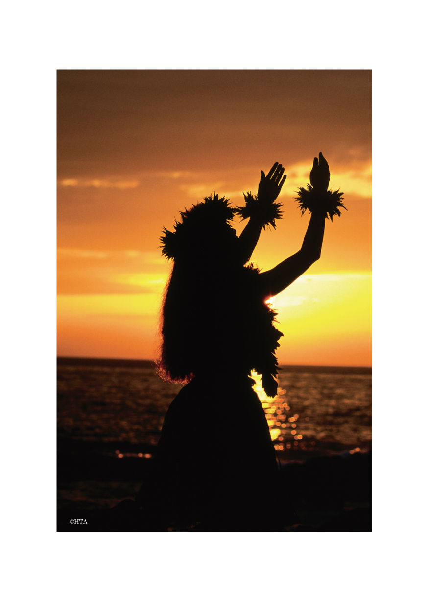 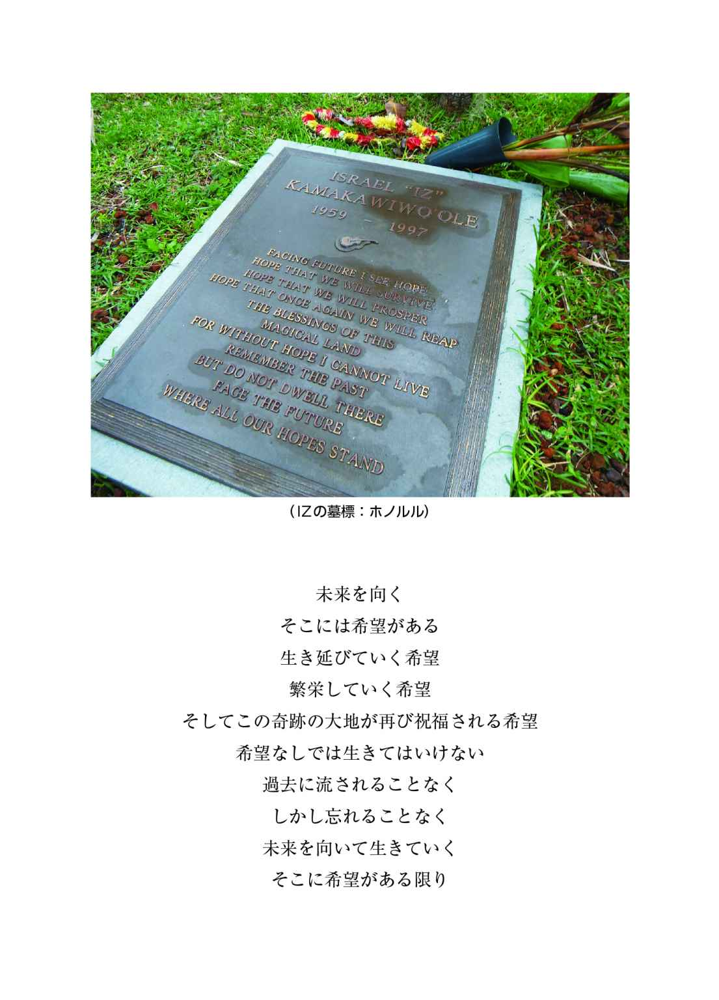 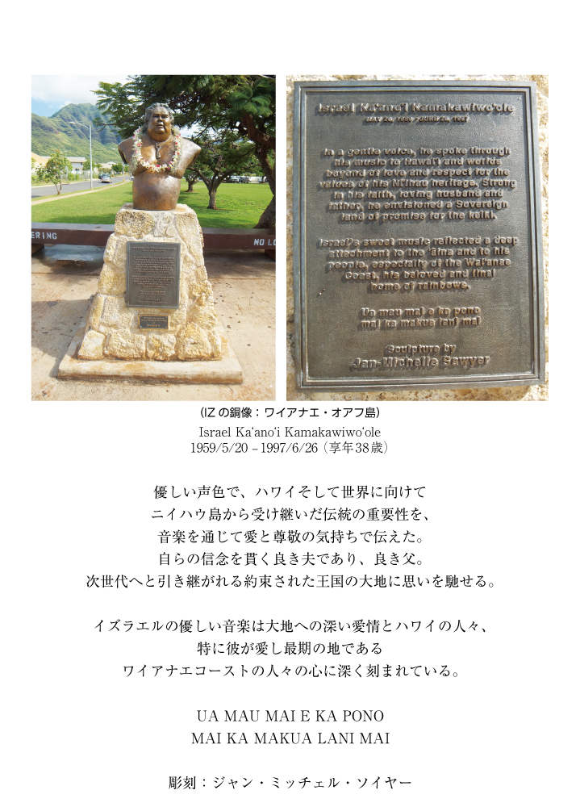
本
書の主人公は、ややこしいハワイの名前を持つ"イズラエル・カマカヴィヴォオレ"。
正式には"イズラエル・カアノイ・カマカヴィヴォオレ"とさらに長い。
1959年5月に生まれ、1997年38歳の若さで去っていってしまったミュージシャン。彼は短い人生だったにもかかわらず、近代ハワイ音楽を語る上で、欠かせないアーティストの一人となった。ドン・ホー、エディー・カマエ、ギャビー・パヒヌイらとともに...
ハワイのローカル・ヒーローであったイズラエル・カマカヴィヴォオレの名をコアなハワイ音楽ファン以外の人が知るのは、「IZ」と名乗りソロ活動を始めた1993年以降のこと。そして、世界が彼に注目をしたのは彼が亡くなってからのこと。
ミュージシャンとしての才能を10代半ばから全開させ、天才と周囲を認めさせたイズラエル。個人的な想いとしては、兄のスキッピーが生きていた時の"マカハ・サンズ・オブ・ニイハウ"時代が純粋に音楽を楽しんだ絶頂であり、その後は、人間関係、経済的問題、健康の問題など、苦悩に満ちあふれていたのではないだろうか。
この本には38年の生涯を波瀾万丈に駆け抜けた大きな男の物語が余すことなく綴られている。アーティストとして、一人のハワイイアンとしての「IZ」こと"イズラエル・カアノイ・カマカヴィヴォオレ"がここにいる。
私が本書「33 1/3シリーズ・Facing Future」を見つけたのは2012年。
ハワイでIZの写真集などは出版されているが、読み物は珍しく、気になった。
さらに、著者がハワイの音楽関係者ではなく、アメリカ本土から一年間だけハワイを訪れたライターであることにも興味を惹かれた。冒頭のIZが真夜中にスタジオを訪れるエピソードからわくわくし、ファンの間で謎とされている"Somewhere Over the Rainbow"の曲名、歌詞が原曲と違う理由もなるほど！と理解できた。これは「面白い」、何とかしたい。
著者のダン・コイスは20代前半に一年間ハワイで生活し、独特な文化に魅了されたことが引き金となりこの本を書き始めた。彼にとって不思議な文化の象徴が「IZ」のアルバム「Facing Future」だった。
ハワイでIZはヒーローであったが、アンチヒーローでもあり、アルバム「Facing Future」は、彼の死後、世界で人気のピークを迎え、未だに愛されている不思議な作品であることに興味を持ったという。
私とのインタビューで、ダンは本書を書くきっかけについて「僕自身、彼の音楽に対して複雑な想いを持っていた。アルバムの中の何曲かはすごくお気に入りだけど、聞くに堪えない曲もある。不思議だった。こういった部分を深く掘り下げ、批判的討論を展開すれば、魅力的な話になると思った」と話してくれた。
私も、この"批判的討論"というスタンスは気にいった。ハワイ音楽の世界は、知り合いばかりの小さな社会で、陰で悪口は言い合っても、表だって他人の音楽批判をすることがあまりない。しかしダンは、ハワイ音楽業界の実力者"ジョン・デ・メロ"をヒールとして描いた。多くのミュージシャン、関係者の赤裸々なコメントを得て構成された内容は、一時、ハワイに立ち寄った部外者だから書ける、挑戦的で新鮮な読み物となった。
読者に伝えたかったことは何かとの質問には「まず、IZの生涯に関するストーリーを楽しんでほしい。IZの波乱万丈な人生と、そこから生み出された音楽について、もっと深く色々なことを知り感じてもらいたい。もちろん彼の死後にピークを迎えた「Facing Future」についてもだ。そして、音楽が世界に広まるということは、どのような意味を持つことなのか。IZの音楽は単なる「歌」である以上に、生まれ育った場所ハワイについての、葛藤や苦難など多くのことを伝えている。そのことを知ってほしい」と語ってくれた。
私も2010年、IZがレコーディングに使ったマウンテン・アップル社のスタジオで、ジョン・デ・メロとIZについてインタビューをしたので、想い出を重ね合わせた。その時、ジョンは多忙で30分だけの予定だったが、IZについて語り出すと話が終わらず、1時間半近く話しは続いた。私はジョン・デ・メロのIZに対する愛情を感じた。もちろん彼がやり手のビジネスマンであることも充分に分かったのだが...
2018年の日本はフラがブームを超えすっかり定着し、ハワイ音楽はフラというフィルターを通して聴かれている状況だ。常日頃、「それは良い状況ではない」と私は言い続けている。フラのないハワイ音楽は集客が難しく、ビジネスとして成り立たない。ハワイの多様な音楽が正しく理解されず、ミュージシャンの思いも伝わらない。昨今の言葉を使わせてもらうと、「ビジネスとして、フラに忖度したハワイ音楽」が主流となっている。
この本には、ハワイの音楽ビジネス、ミュージシャンを取り巻く環境、さらにはハワイという場所とハワイアン、ハワイ音楽の関係が書かれていて、ハワイ音楽とは何なのかが見えてくる（本書が書かれた時からいささか時間が経っているが本質は変わらない）。読者の皆様が、本書で、IZについて知り、ハワイ音楽について理解を深めていただき、純粋に【音楽としてのハワイ音楽】を聴いていただけるきっかけになればと願っている。
早熟の天才は15歳のバンド・デビューから38歳までをあっという間に駆け抜け、強烈な印象を残し、去っていった。IZが亡くなって、21年(2018年現在)経ってしまったが、今も歌っていたら59歳...その歌声を想像するファンは私だけではないと思う。いろいろ書いたが...実のところ、この本を日本で出したかった一番の理由は、IZが大好きな私が彼の歌を生で聞くチャンスがあったのに逃したことを今も後悔しているからであり、そして、変わらずに大ファンだから...IZの唄を聴くことが出来なかった罪滅ぼし...ただそれだけなのだ。
最後になりますが、日本での出版を快諾してくれたダン・コイス氏、翻訳・出版に尽力していただいた住友氏、出版を実現して下さったごきげんビジネス出版様に深く感謝します。
追記：2018年 「"Somewhere Over the Rainbow" The Best of Israel Kamakawiwo'ole」をマウンテン・アップル社、ジョン・デ・メロはリリースしました。彼は本当に商売人だ。。。
2018年
Hawai'i Music Hobbyst すずきしゅう
すずき しゅう
Hawai'i Music Hobbyst、写真家、ハワイ音楽を専門にするミュージック・ライター
・Hawai'i Academy of Recording Arts レギュラー会員
・一般社団法人ミュージック・ペン・クラブ・ジャパン会員
【略歴】1976年、雑誌「POPEYE」に大きな影響を受け、大陸横断バス「グレイ・ハウンド」に乗り30日間のアメリカ横断の旅をした。その帰りにエアー・チケットの都合で立ち寄ったハワイに心癒やされ虜になる。その後、時代はバブルまっ盛り、写真家、映像ディレクターとして、多くのハワイロケを経験し、その魅力に深くはまっていく。ハワイ詣では、今も続き、渡航回数は110回を越えた。
2004年にはハワイ情報サイト「8011web.com」を起ち上げ、現在14年目。多くのミュージシャン、フラ関係者のインタビューをおこない、CD、レコード、ライブのレビューなどを書いている。
2009年には、一部マニアから賞賛された「ウクレレ・ブック（三栄書房）」を執筆。今はなき、楽天FM「Da Kine Music」でパーソナリティを3年間 （2015-2017）。ライブ、ワークショップなどの企画、プロデュースをおこなう。現在もハワイアン・ミュージックにまみれた生活を送っている。
https://8011web.com
https://www.facebook.com/8011web/
https://twitter.com/8011HawaiiTimesHawaii
Facing Future by Dan Kois
©Dan Kois,2010
This translation is published by arrangement with Bloomsbury Publishing Plc, London through Tuttle-Mori Agency,Inc.,Tokyo
Lyrics from "Hawai'i '78","'Ama'ama","White Sandy Beach
of Hawai'i","La'Elima" and "Kaulana Kawaihae" reprinted
courtesy of the Mountain Apple Company.
Lyrics from "Māui Hawaiian Sup'pa Man" reprinted courtesy of Del Beazley.
Lyrics from "Ka Pua U'i" reprinted courtesy of Criterion Music Corporation.
Lyrics from "Iz" reprinted courtesy of Patrick Downes.
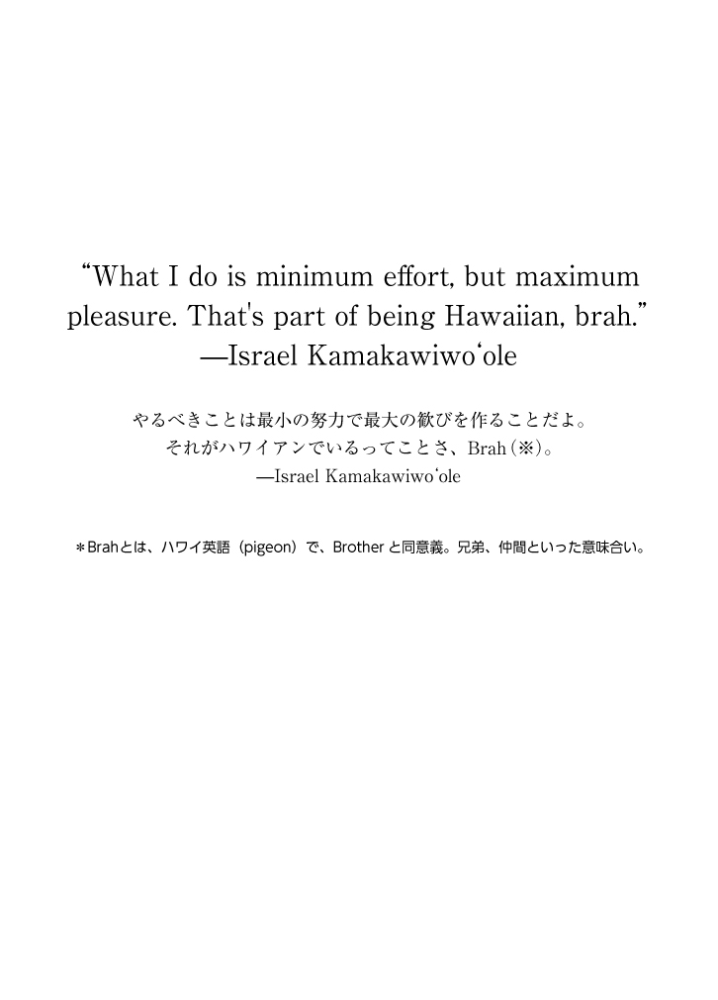
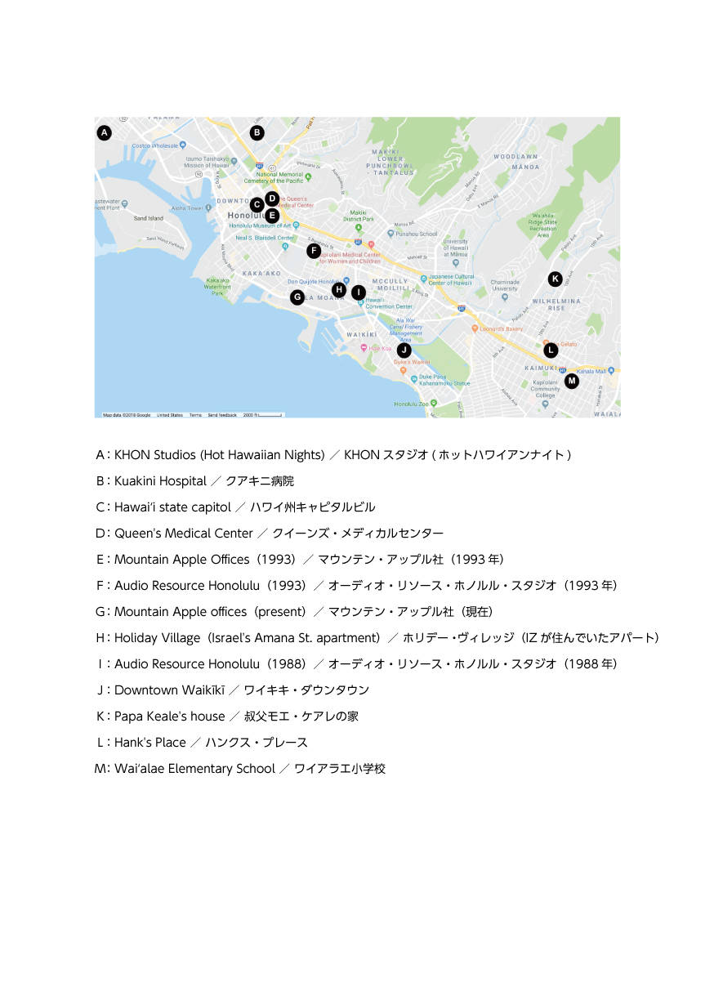
ミ
ラン・ベルトーサは疲れ切っていた。１年前にシカゴからレコーディング・エンジニアとしてハワイ移住し、自らが運営するオーディオ・リソース・ホノルル・スタジオ（地図I）（※）を軌道に乗せるため必死に働いてきた。
夜中の２時半に公衆電話からスタジオに電話があり、これからレコーディングをしたいんだ、と依頼されても断ることはなかった。公衆電話から聞こえてくる声がバーの騒音にかき消されてほとんど何を言っているのか聞きとれなかったとしてもだ。
「レコーディングをしたい」と言うその男は自らの名前を"イズラエル・カラカラカラカ・・・・"とやたらと長いハワイ語の名前をまくしたてていたが、ミラン・ベルトーサは聞き取れなかった。
それでも、その男のレコーディング依頼を引き受けた。どんな演奏でも、それが酔っ払いながら演奏されたものだったとしても、自分の手にかかれば唯一無二の作品に仕上がる自信があったからだ。
結果、1988年ミラン・ベルトーサの仕事の多くはこの男のレコーディングに費やされることになった。日中、通常のレコーディングをこなし、夜中はバーでナンパした女の子を引き連れてスタジオにやって来るハワイアンのレコーディングに追われていた。
当時ミラン・ベルトーサは、音楽プロデューサーであるジェームス・アルシノー（※）が作ったガールズグループのレコーディングを日夜行っていた。
ジェームスは、いわゆるセレブなプロデューサーだった。彼が当時進めていたプロジェクトはダンスがメインのガールズグループで、ワイキキのナイトクラブで開催されたウェット・ビキニ・コンテストで入賞した女の子たちで、歌は全く歌えなかった。彼女たちのレコーディングは、単語を一つ一つ録音する方法をとった。"I"と言って録音停止、"Love"と言って録音停止、"You"と言って録音停止、といった具合だ。こうした地獄の作業が週に３日間、1か月間続いていた。
（※）オーディオ・リソース・ホノルル・スタジオ：
現在の住所は1750 Kalākaua Avenue。ケアリイ・レイシェル、エイミー・ハナイアリーなどハワイのミュージシャン、さらには、日本のミュージシャンの作品も手がけている。（現在は地図F）
（※）ジェームス・アルシノー（James Arceneaux）：
音楽プロデューサー、作家。元フットボール選手。１９８０年代にハワイのローカルタレントのプロモーションビジネスを始めたあと、LAに移住。数年後、黒人歌手アニタ・ポインターと同棲を始め、LAを中心に音楽プロデューサーとして活動。数々のミュージシャンのプロデューサー、プロジェクトコーディネーターとして活躍。15年間エディー・マーフィーの不動産管理マネージャーも担当していた。
そんな多忙な日々の中、女の子たちが帰り、片づけをしていたときに受け取った電話がイズラエル・カラカラカラカ・・という長いハワイアンネームの男だった。疲れ切っていたミラン・ベルトーサは、営業時間外でレコーディングするには遅すぎると一回は彼の依頼を断ったが、高音で静かなトーン、背後の騒音の中でも聞きとれるはっきりした口調で「お願いだ」とハワイアンは譲らなかった。そして「今すぐにレコーディングがしたいんだ。アイデアがひらめいている。このアイデアが頭の中から消えてなくなる前に形にしたいんだ。わかるかい？」と男は言った。
ミラン・ベルトーサは溜息をつきながら聞いた。
「今どこにいるんだ？」
「スパーキー（※）だよ。」
スタジオから数ブロック離れた場所だ。まったくなんてこった・・・。
しかし、電話の向こうから途切れ途切れに聞こえてくる声は甘く、フレンドリーで憎めなかった。ミラン・ベルトーサは男に言った。
「30分以内にスタジオに入るように。そして、スタジオに入ってから、レコーディング時間は30分だけ。それでいいかい。」
電話を切り、スタジオ内を片付けながら、駐車場に面している裏口だけは男のために開けておいた。
（※）スパーキー：
当時のホノルル一番の繁華街にあったバー。Sparky'sナイトクラブ（カピオラニ通りのストリップ街近くにあったバー）
スタジオはワイキキの西側、カラカウア通りとカピオラニ通りの角に建つオフィス＆コンドミニウム併合のセンチュリーセンター（※）にあり、朝の4時でも、賑やかだった。ストリップクラブや風俗店に囲まれている場所だが、ハードロックカフェが新しくオープンしたばかりで観光客も訪れるエリアになりつつあった。
（※）センチュリーセンター。
1750 Kalākaua Avenue. ホノルルの真ん中にそびえたつ41階建ての複合ビル。オフィス、テナントと分譲コンドミニウムユニットから成るガラス張りの高層ビル。1978年築。
しばらくすると（電話を切ってからとっくに30分は過ぎていた）車を止める音がした。そして、見たこともない大男が裏口に向かって歩いて来た。手にはウクレレを持っていたが、まるで巨人が小さなウクレレを抱えているようだった。彼がスタジオに入ってくると、床がミシミシと音を立てて揺れた。
その男は、身長６フィート３インチ（192cm）ぐらいで、体重は500パウンド（226kg）を超えていた。特注の巨大なアロハシャツを着ていたが、それは洋服というより巨大なテントのようだった。そしてやはり特注の巨大なゴム草履（スリッパー）を 履いていた。典型的なローカルスタイルだ。長い黒髪は大きく後ろで広がり、大きな頬の上に印象的な深い眼差し、精気ある表情をしていた。
イズラエル・カラカラカラカ・・・はミラン・ベルトーサの手を包み込むように握手をして言った。
「Hi,bruddah」
スタジオにはミラン・ベルトーサしか残っていなかった。まずは、イズラエルと名乗るこの大男が座れるイスを探さなくてはならなかった。スタジオにある備品はどれもチープなものばかりで、イズラエルのような200kgを超える大男に耐えられるような頑丈なイスはなかった。唯一ドラマー用のスツールがあったが、それも小さく、大男にフィットするとは到底思えなかった。イズラエルが辛抱強く待っている間、ミラン・ベルトーサはスタジオがテナントとして借りているビルの20階に住んでいる共同経営者に電話をしたが「早く家に帰って寝ろ」と言われて相手にされなかった。仕方なく、ビルの警備に連絡をすると、スチール製のイスを貸してくれた。イズラエルはそのイスに居心地良さそうに座り、足をしっかりと床につけ、深い呼吸を繰り返していた。
ミラン・ベルトーサはイズラエルの前にマイクを何本か用意し、コントロール・ルームで24チャンネルレコーダーに2インチのテープをセットして言った。
「いつ始めてもいいよ」
イズラエルは声を出した。
「オッケイ。この曲はギャビーに捧げる1曲だ」
巨大な腕の中にある小さなウクレレを奏で始め、高音域のファルセットで、非常に長い「ウゥー 」というメロディー から歌い始め、"Somewhere over the rainbow...."と続いた。
その日の夜明け近くにイズラエル・カラカラカラカ・・・のレコーディングは終了した。ミラン・ベルトーサは録音したカセットを彼に渡した。コピーを手元に残していたミラン・ベルトーサは、その後の数年間、気に入った女性を口説き落とす時に、この曲を使っていたそうだ。
後にこの曲が、ハワイアン音楽の歴史において最も人気のある1曲になること、「Over the Rainbow」と「What a Wonderful World」のメドレーが最も人気あるハワイアン音楽アルバムに選ばれることなど、この時のミラン・ベルトーサには知る由もなかった。
「イズラエル・カマカヴィヴォオレ」
重度の肥満病で、麻薬中毒者。ソフトな声を持つシンガー。誰も正しく発音できないハワイアンネームを持つ男。
このレコーディングから10年も経たずに、イズラエルはハワイアン・ヒーローとなり、そしてこの世を去った。
彼自身、当時ギャビー・パヒヌイに捧げるといって歌ったこの曲がアメリカ本土とハワイを繋ぎ、ハワイがアメリカの一部であることを再認識させるきっかけとなるとは思いもしなかったであろう。
ミラン・ベルトーサは、この日のことを振り返る。
朝の4時、疲れ切った身体で、コントロール室に響くイズラエルの甘い声を聴きながら、思っていた。
「この男は音楽を知っている」
それだけは確信することが出来た。
歌詞は時々ひっかかり、ウクレレのコードも頻繁に間違えて弾いていた。フレーズをやりくりするテクニックも身に着けていなかった。しかし、この男は、深い部分で「歌うこと」を知っていた。
「これだ！これなんだ！これこそ、オレが生涯かけて取り組んでいきたいと思っていた音楽なんだ！」
ミラン・ベルトーサはその思いに自信があった。
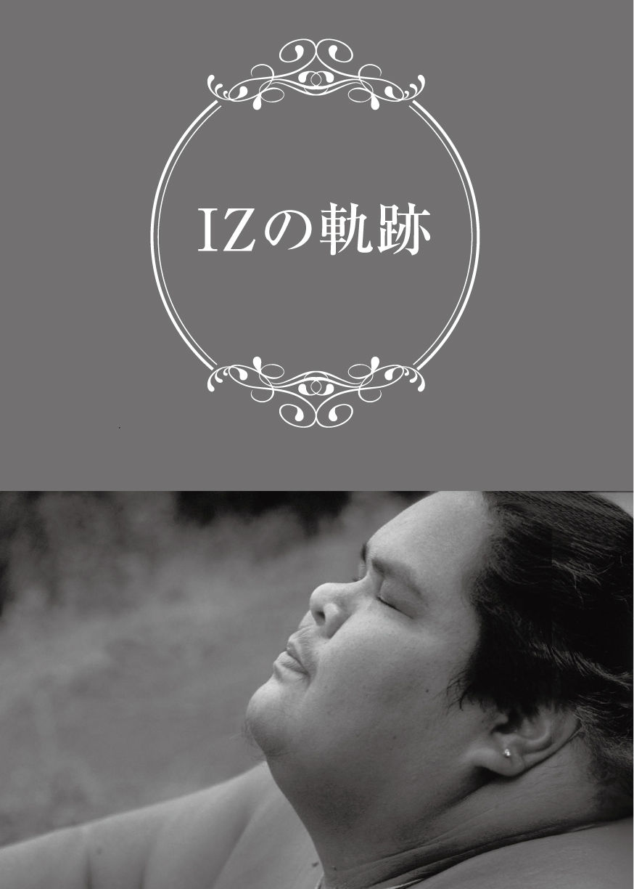
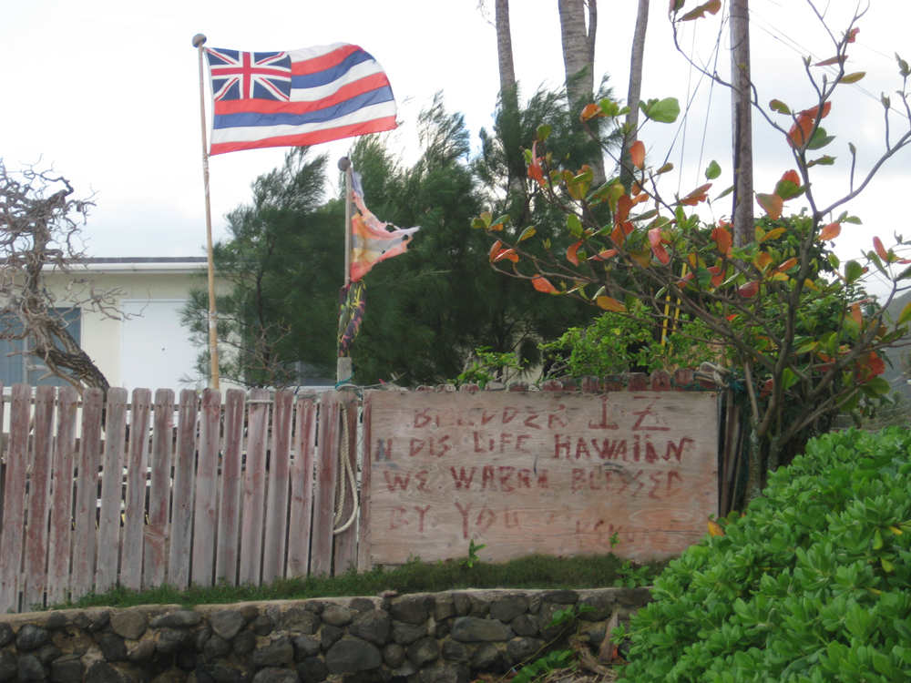
*オアフ島ウエストコースト、ワイアナエ市内の民家に作られたIZを讃えるボード
1997
年6月26日、IZは息を引き取った。その時、彼の体重は1,000ポンド（453kg）を超えていた。その年の5月には、ナ・ホク・ハノハノ賞で年間エンターテイナー賞、年間最優秀アルバム賞を受賞したが、彼は自らの授賞式をホノルルにあるクイーンズ・メディカルセンター（地図D）の病室で見ていた。
腎臓疾患、呼吸疾患などを患い、生きるためには体重が増え過ぎて体内のあらゆるシステムが機能しなくなり亡くなった。IZの死後、州政府ビルには州旗が半旗としてかかげられ、1万人の人々がハワイ州キャピタルビル（地図C）に集まり彼の死を悼んだ。
彼の遺灰は小さい頃育った、島のウエストコースト（※）に運ばれ、海にまかれた。その時、大型トラックドライバー達も葬列に参加しホーンを鳴らし続け、何時間もの間、島全体が交通渋滞となった。
（※）島のウエストコースト：マクアビーチ。
彼はハワイで最も人気があり、愛されたシンガーだった。その人気は彼の歌だけではなく、彼自身の生き様による所も大きかった。20代は無謀なドラッグ漬けの青年時代を過ごしたIZが、後に積極的に政治に関心を寄せる様になり、ハワイアンとしての誇りを歌に反映させ、ネイティブ・ハワイアンの主権に関する問題を提言し権利を主張した。
また、彼の大きな身体は、深い文化的な繋がりに関連づけられていたともいえる。何百年もの間、ネイティブ・ハワイアンの王族、酋長らのスピリチュアルなパワーの大きさは肉体の大きさに比例すると捉えられており、その考えは今でも健在である。医学的には肥満ということになるのだが...。実際ネイティブ・ハワイアンの肥満率は米国全体の平均より60%も高いデータが出ている。
限りなく純血に近いネイティブ・ハワイアンとして生まれたIZがハワイアンの伝統に対する責任を感じ葛藤を続けた。たとえそれが多くの人に理解されないとわかっていても、ハワイ語で歌いメッセージを発信してきた彼の生き様は、ネイティブ・ハワイアンにとって英雄的な存在だった。
アルバム「Facing Future」はIZの活動を代表するアルバムだが、このアルバムが制作された当時のIZはどん底の状態だった。1993年、IZは生活保護で生活をしていた。17年間活動してきたトラディショナル・ハワイアン・バンド、マカハ・サンズ・オブ・ニイハウ（Mākaha Sons of Ni 'ihau）を脱退したばかりで、仕事・プライベートの両方で目標を見失っていた。
当時、ハワイにおけるIZの評価は良いものだけではなかった。「憎めないけれど、信用できない間抜け」「能力はあるが肥満疾患を抱え期待できない」「約束の時間通りに現れたことがない」「スタジオに姿を見せるのかどうかさえ分からない」など不平不満のほうが多かった。
ドラッグからは抜け出していたようだったが、食欲はコントロールすることができなかった。心臓発作を起こし、クイーンズ・メディカルセンターの特注ベッドで入院している時でさえも、友達に頼みチョコレートバーのトュインキー（スナック菓子）（※）を箱ごとこっそり差し入れしてもらっていたほどだった。
（※）トュインキー（スナック菓子）：
クリーム状のフィリングの入ったスポンジケーキ。
言葉巧みにガッチリとチャンスをつかみ取ることで有名な敏腕プロデューサー、ジョン・デ・メロによって企画された「Facing Future」は、トラディショナル・ハワイアン・フォークソング、ジャワイアン、ハワイアン・レゲエをほどよく融和させるために、慎重に抜け目なく細部にわたって計算されたアルバムだ。
このアルバムは1993年、山の上に建つジョン・デ・メロのユニークな音楽スタジオ（※）で録音された曲と、それよりさらに5年前ミラン・ベルトーサのオーディオ・リソース・ホノルル・スタジオで早朝録音された曲が収録されている。
（※）山の上に建つジョン・デ・メロのユニークな音楽スタジオ：
オアフ島南西部、ワイアナエ山脈のパレフアにあるジョン・デ・メロの自宅兼スタジオ。（現在は所有していない）
「Facing Future」は発売直後から、ハワイでベストセラーアルバムとなり、IZのキャリアはよみがえった。またたく間に彼はハワイのヒーローとなった。
島の人々に今でも愛されている曲は、アルバムの1曲目と最後に収録されている「Hawai'i'78」で、島の伝統文化が失われていくことを嘆く哀歌だ。多くのハワイアンにとって、聞くたびに鳥肌がたつ曲といわれている。
ウクレレ、シンセサイザー、ドラムに合わせて「ハワイの王や王女たちが、今のハワイを見たらどんな風に思うだろうか？」と失われたハワイ文化を表現している。
アルバムリリースの４年後にIZはこの世を去るが「Facing Future」はハワイに住む人々、特にネイティブ・ハワイアン達を象徴するアルバムといわれ、IZを代表する傑作アルバムとなり、さらに極めて貴重なハワイアン文化芸術作品としても扱われた。現在もアルバムの曲はあらゆるメディアで頻繁に流され、ハワイでは一家に一枚の必需品といわれるほど、誰もがこのアルバムを持っている。
一方、アメリカ本土での「Facing Future」の存在はハワイでの高い評価とは異なっていた。2000年におもちゃ販売店「eToys」のオンラインショップ広告で使われ、それをきっかけにIZの音楽は広まっていった。
「ディナーテーブルの上でアスパラガスを積み重ねている息子を見ている母親。アスパラガスの代わりにそろそろeToysでおもちゃの建設キットを買わなくちゃね」というCMのBGMとしてIZの曲が使われていた。その曲に対する人々の反応は非常に早く、eToysでは誰が歌っている曲なのかを知りたくてオンラインショップを訪問した人のために、専用のページを作ったほどだった。
それをきっかけに2001年、AOL（アメリカンオンライン）（※）のトップページにIZが表示され多くの人が目することになる。当時米国では、AOLが最も人気のインターネットサービスプロバイダーだったのだ。当初AOLは一日1時間だけIZが表示されるトップページを見せていたが、その時間帯にアクセスが殺到してページ表示が遅くなったため、最終的に一日中IZが表示されることになった。
（※）AOL（アメリカンオンライン）：
アメリカの大手インターネットサービス会社が提供するインターネット接続サービス・ポータルサイト。
さらに2002年には、NBCで放映されていた人気テレビドラマ「ER緊急救命室」でマーク・グリーン役を演じたアンソニー・エドワーズがIZの"Somewhere Over the Rainbow"と"What a Wonderful World"のカバーを歌った。曲が流れた回はマーク・グリーンが癌を患い、子供の頃に育ったハワイで最期を迎えるという内容で、番組の中で最も高視聴率を記録したエピソードのひとつだった。
こうしてIZの「Facing Future」はアメリカ本土のCDショップでも本格的に売られるようになるが、他のアルバムと比べ、とても風変りなアルバムとして受け止められていたようだ。巨大なハワイアンが上半身肌でカメラに背を向けているアルバム・ジャケット。背中のぜい肉があらわになったその姿はお世辞にも美しいといえるものではなく、その容姿と歌声には大きなギャップがあった。ひどく滑稽な見た目に相反する繊細な音楽。
一体この男は誰なんだ？ 人々は興味を示し始める。そして1997年に他界したハワイのスターであることがアメリカ本土でも知られるようになった。「スター？ この男が？」
アメリカ本土の人々にとってアルバムの歌詞は意味不明な曲が多かった。メロディーは優しくシンプルだが、ほとんどの曲をIZはハワイ語で歌っていたからだ。しかも、アルバムにはハワイ語の英語訳は書かれていなかった。しかし一方で、ジョン・デンバー（※）のカントリー・ロードが、安っぽいレゲエ・バージョンでコピーされ収録されていた。さらに、アルバムの最初と最後ではシンセサイザーとドラムに合わせ、ひどいハワイ訛りの英語で仰々しい叙事詩を語っている。アメリカ本土で多くの人々が初めて買ったハワイアンCDは、ミリオンセールスを記録するほどヒットしたが、多くの人たちは"Over the Rainbow"だけを別なメディアにダビングし、その他の曲には全く興味を示すことはなかった。しかし、このアルバムからIZのハワイアン文化に対する深い愛情を理解することはできたようだ。ハリウッドではハワイアン文化イコールIZとして人々に認知されるようになり、その後、ハワイでロケがおこなわれ、公開された映画「50回目のファースト・キス」（2004年）「スネーク・フライト」（2006年）「寝取られ男のラブ♂バカンス」（2008年）ではIZの曲が使用されるようになった。
（※）ジョン・デンバー（John Denver)：
1970年代のフォークソング界において中心的な役割を果たしたシンガー・ソング・ライター。悲しみのジェット・プレーン（Leaving on a Jet Plane）、カントリー・ロード（Take Me Home, Country Road）などがヒットした。
おかしな名前を持つ巨大なハワイアンの男によって歌われているアルバム「Facing Future」は、本人が亡くなった後に人気を博した珍しいアルバムとして、アメリカ本土の人々に知れ渡った。このアルバムがミリオンセールスになり、プラチナレコードに認定されるようになったのはアメリカ本土のセールスによるものだったが、それはアルバムがリリースされてから15年、IZの死後10年以上経過してからの大ヒットだった。そのことによりこのアルバムは、2つの異なる価値を持つアルバムとなった。アルバムに対するハワイの評価とアメリカ本土の人々の評価だ。
ハワイの人たちが評価しているアルバムが象徴しているハワイアン文化とは、アメリカ本土の人々にとって一体何だったのだろうか？ ネイティブ・ハワイアンの権利について何も知らない、アロハスピリットのことなど興味もないのに、このCDを買い求めた人々。このアルバムの楽曲をBGMに使い、人気テレビ番組アメリカン・アイドルでめちゃくちゃなハワイ語訛りでIZの"Wonderful World"を物まねする出場者たち。ハワイでハオレと呼ばれる白人たちがアルバムを聞き、アロハシャツを身につけ数年に１度ホノルルを観光で訪れ、なんちゃってローカルを装っている。そのような現象に対して不快感を持っていたハワイアンたちはどれだけいたのだろうか？
「Facing Future」は最高のセールスをあげたアルバムだったが、音楽的には欠点だらけの作品で、IZの早すぎる死、アメリカ本土で大人気となった一曲、楽曲ライセンスのノウハウといったそれらの奇跡的な要因が重なり永遠の最高傑作として作り上げられたアルバムだったのではないだろうか。アルバムに収録された曲は、感情に訴えかける繊細さを持っていたが同時に滑稽なアルバムでもあり、このアルバムはハワイ文化がアメリカ本土の人々にとって珍しいものであることを明らかにした。アルバム中の何曲かは聞くに堪えないような薄っぺらな曲であったにもかかわらず、人々はハワイ文化の複雑な解釈をしっかりと感じ取っていた。これもこのアルバムの大きな魅力のひとつだろう。偉大なる芸術はどこにでも存在する可能性があることを証明したアルバムでもあった。ドラッグ漬けで山の上に建つ吹きっさらしの家で夜な夜なパーティーしていたような巨大な男ですら、ウクレレ一本で奇跡を起こすことができたのだ。
ハ
ワイに住む日系人をサポートするために設立された組織Japanese Benevolent Society of Honolulu（日本人慈善会）が1917年にホノルルダウンタウンから１マイルほどマカイ（海側）に入ったLiliha近くのKuakini通り沿いにクアキニ病院（地図B）を設立した。日本の大正天皇と皇后から建設資金の一部を寄付され建てられたものだ。日系人のために作られた病院ではあったが、近くに住むローカルたちにも利用されていた。
1959年5月、ハワイアンの王族にその名が由来するエヴェンジェリン・ケアレ・カマカヴィヴォオレが来院し、夫ヘンリー・カェイアォハ・ナニヴァとの間に第３子となるイズラエル・カアノイ・カマカヴィヴォオレを出産した。
100％ネイティブ・ハワイアンらしいがっしりとした身体の父は、生まれてきたイズラエルを見て「ちっちゃいな」と皮肉っぽくウィンクしながら言った。イズラエルが誕生した1959年、ハワイは大きな変化を迎えていた。アメリカ全体の歴史が大きく動いた時で１月にアラスカが49番目の州となり、イズラエルが生まれた３か月後にはハワイもアメリカ合衆国50番目の州となった。
イズラエルは幼少時代をホノルルの東に位置するカイムキで過ごした。両親はおもに夜、働いていた。父はパールハーバーにある海軍基地でゴミ収集車の運転手をし、母は稼ぐためにできることなら何でもやった。イズラエルは家とパロロ（※）渓谷近くにある叔父モエ・ケアレ（通称パパ）（※）の家（地図Ｋ）を行き来していた。両親に代わって、叔父が世話をしていたが、イズラエルを甘やかし、食べたいものは何でも与えていた。ワイアラエ小学校（地図M）に通っていた頃には、朝はワイアラエ通り（※）にあるオカズ屋でハッシュドコーンビーフをまず食べて、学校が終わると今度は9thアベニュー・ベーカリー（※）のパン、ウールワース（※）のスシ、ココヘッドアベニュー沿いにあるクラックシード・ストア（※）の乾燥レモンやリヒムイ（※）、ジッピーズのチリと......育ちざかりのローカルボーイはとにかくよく食べた。
（※）パロロ：
ホノルル郊外の住宅地 カイムキの西に位置する。
（※）モエ・ケアレ（Moe Keale）：
モエ・ケアレ（1993年-2002年）イズラエルの叔父で、大きな影響を与えたミュージシャン。1971年"サンズ・オブ・ハワイ"のメンバーとしてデビュー。俳優としてHawaii5-Oにも出演していた。ピュアなネイティブ・ハワイアンの家系で1993年、ニイハウ島生まれ。
（※）ワイアラエ通り：
古くからの商業地区で、住宅街のカイムキには、ワイアラエ通りを中心にレストランなどが数多く立ち並ぶ。
（※）9thアベニュー・ベーカリー：
1934年創業のベーカリー。
（※）ウールワース（Woolworths）：
アメリカの大規模スーパーチェーン。1997年に全面閉鎖し118年の歴史に幕を下ろした。ハワイではワイキキ、アラモアナなどに店舗があった。
（※）クラックシード・ストア：
ココヘッドアベニューにあるキャンディストア。
（※）リヒムイ：
中国産の乾燥した梅干に塩と砂糖、中国版リコリス（甘草）の粉がかかったもの。
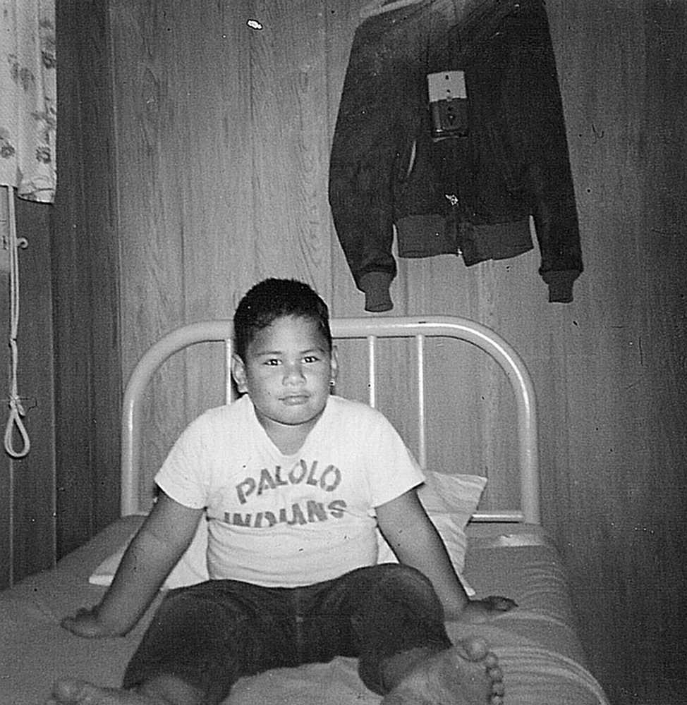
※幼少時代のイズラエル
イズラエルは8年生（中2）になると学校をサボって、ワイキキ行きのバスに乗り繁華街（地図J）に出かけるようになった。大きな身体で不良っぽかったため、街でよくケンカをし「何見てんだよ、何かおかしいかよ！？」「バンッ！」（相手をパンチする音）といった具合だったと、後に本人が語っている。
スクールバスでもしょっちゅうケンカをしていたので、乗せてもらえないことが多かった。「家に帰るまでに（ケンカするならバスを降りろ！と言われ）スクールバスを2回、3回と乗り継がなきゃならなかったんだ。」
兄のスキッピー、姉のリディアは2人とも母の教えを守るいわゆる良い子供達だったが、イズラエルだけが違っていた。12歳にして自らの人生を自ら切り開くライフスタイルを確立しつつあったが、問題児でもあった。かつてのクラスメートによると「ハナウマ湾まで課外授業に行った時、落とし穴を作り同級生を落とす、といったイタズラはイズラエルにとっては朝飯前のことだった」「寛大な言い方をすれば"彼はガキだったんだよ"」と叔父であるモエ・ケアレは言う。学校では下級生に自分の教科書などを持たせたり、叔父の家では便器の中にトイレットペーパーを押し込んで詰まらせたりしていた。それでも叔父はイズラエルに対してとにかく甘く、いたずらに対しても優しく注意する程度だった。
彼が両親と住んでいたカイムキと叔父モエ・ケアレが暮らすパロロはハワイアン、日本人、中国人、プエルトリコ人、フィリピン人、ポルトガル人、白人が住む多民族エリアだった。
イズラエルは学校の先生に「自分たちの民族に関する歴史を教えてくれないのはなぜだ？」と文句を言ったこともあった。彼のライフスタイルはハワイアン以外の子供達とは明らかに違っていた。多様な民族文化の中で育つローカルでありながら、すでにハワイアンとして生きる意識を持っていたのかもしれない。オアフ島西側のマカハ（※）という小さな町に住む父方の家族をよく訪ねたり、ネイティブ・ハワイアンだけが暮らすニイハウ島（※）で夏休みを過ごしたりしていた。ニイハウ島は島に住む住民およそ160人全員がネイティブ・ハワイアンで多くはパニオロ（カウボーイ）だ。地球上で最もハワイアンな場所で、世界で唯一ハワイ語を主言語とする島でもある。ハワイ諸島で流暢なハワイ語を話す人々にとってもニイハウに住むネイティブ・ハワイアンのハワイ語を理解できないことが多い。
（※）マカハ：
オアフ島西のワイアナエ海岸の先、バスの終点にある小さな町。Mākahaはハワイ語で未開の、殺伐としたという意味。ネイティブ・ハワイアンの比率が高い。
（※）ニイハウ島：
カウアイ島から南西27kｍに位置するロビンソン一家が所有する島で、許可がないと島には上陸できない。今でもネイティブ・ハワイアン達がハワイ語を使い生活している。ニイハウ・シェルと呼ばれる希少な貝で作られたシェルレイが有名。
母方の祖父と、叔父モエ・ケアレは毎夏、子供たちをニイハウ島に連れて行き、ハワイ語そして古代ハワイから継承される歌を学ばせ、俗的な社会からかけ離れた本当のハワイ文化の中での生活を体験させていた。しかしイズラエルは何もない田舎に閉じ込められることに嫌気がさし、ニイハウ島の放牧地に夜中、爆竹を投げ入れ、驚いた牛たちが暴れ出す騒ぎになり、島のパニオロたちが一晩中、牛をなだめる大事件を起こしたと姉のリディアは話す。「その罰として彼は教会に行って１時間pule（祈り）を捧げなければならなかったのよ」
ニイハウ島での古代ハワイアンたちとの関わりが、後に深くハワイ文化を考えるきっかけになったのは確かであろう。しかし、当時、孤立したニイハウ島での夏休みはイズラエルにとって退屈以外の何物でもなくホノルルの雑踏に早く戻りたがっていた。ニイハウ島で歌われていた古典的なハワイアン・ソングも嫌いではなかったが、何より町で演奏されている今どきの音楽により魅力を感じていた。
家族によれば、イズラエルは６歳からウクレレを自然に弾き始めた。両親、兄のスキッピー、叔父モエ・ケアレやその他の親戚などが集まるといつもウクレレの音と歌声で溢れていた。そこでは昔の賛美歌がよく歌われていた。
イズラエルの同級生は、彼が学校の校庭にあるバニヤンツリーの下に座りながらウクレレを弾いている姿を覚えている。朝その姿を見て、同級生たちは教室に行ったが、授業が終わって下校時になってもイズラエルはそこで音楽を奏でていたそうだ。
イズラエル11才、兄スキッピー16才の時、2人はワイキキでサンセットクルージングを開催しているヨットのひとつアレ・アレ・カイでライブをすることになった。毎晩２人はハパ・ハオレソング（※）を歌った。ハパ・ハオレソングは、ハワイアン・ミュージックを英語で歌う曲のことだ。トロピカルドリンクを飲みながら楽しむ白人観光客には、これがとてもウケた。イズラエルが一晩でもらえるチップは10ドルで、後に彼は「どんな曲でも演奏したよ」と語っている。
（※）ハパ・ハオレソング(Hapa Haole Song)：
多くはアメリカ人がハワイをイメージして作った曲。歌詞は英語、あるいは一部ハワイ語で歌われる。ハリウッド映画の影響で世界中に広まった。ハワイ語でhapaは半分、haoleは白人の意味。
1971年、イズラエルの叔父モエ・ケアレはハワイアン・ミュージック界のレジェンド、エディ・カマエ（※）から、当時最も人気があったバンド、"サンズ・オブ・ハワイ"（※）への参加を求められる。
（※）エディ・カマエ（Eddie Kamae）：
1927-2016。ホノルル生まれ。ハワイ音楽界のビッグ・レジェンド。近代ウクレレ奏法の父といわれ、ウクレレの神様ハーブ・オータを今に導いた。1963年にギャビー・パヒヌイの才能を開花させるべく"サンズ・オブ・ハワイ"を結成。約70年間ハワイ音楽を牽引した。彼の作曲した「E Ku'u Morning Dew」は、ハワイのスタンダード音楽として知られている。2016年亡くなる。
（※）サンズ・オブ・ハワイ（The Sons of Hawai'i）：
1963年にエディ・カマエが結成したバンド。オリジナルメンバーは、ギャビー・パヒヌイ、ジョー・マーシャル、デイビッド・ロジャースの4人で当時最高のメンバーが集結した。70年に叔父モエ・ケアレが参加。ギャビーがソロになり、75年にデニス・カマカヒが加わり第二期がスタートした。ハワイアン・ミュージック史に燦然と輝く唯一無二のバンド。
その年、イズラエルの両親はワイキキのスチームボート・ナイトクラブ（※）で働き始めた。ハワイアン・ミュージックが流行し始め、ナイトクラブでもハワイアン・ミュージックのライブを連日開催するようになる。スチームボートは後にハワイアン・ミュージックの復興を代表する有名クラブとなる。エディ・カマエはオアフ島以外のネイバーアイランドでも頻繁に演奏し、ハワイアン・ミュージックの復興に力を貸した一人だった。叔父モエ・ケアレは完璧なウクレレ演奏とこの世のものとは思えぬ美しい歌声を持っていて、エディ・カマエが他の島に行っている間、残った"サンズ・オブ・ハワイ"メンバーでスチームボート・ナイトクラブのライブを担当していた。70年代に入るとハワイでは多くのミュージシャンが活発に演奏活動を始め、ハワイアン・ミュージックにスポットライトが当たった。ハワイ語、ハワイ・ミュージック、フラが復活してきたのだ。この時代はハワイアン復興（※）と呼ばれた。
（※）スチームボート・ナイトクラブ：
カラカウア通りにあったナイトクラブ
（※）ハワイアン復興：
1970年代に起こったネイティブ・ハワイアンのアイデンティティ（存在意義）を復興するための運動で、文化復興、土地回復運動なども含まれ「ハワイアン・ミュージックの復興」や、「ハワイアン・ミュージック・ムーブヴメント」もその一部
学校が終わるとイズラエルと兄のスキッピーはバスに乗ってスチームボートへ向かう。そしてステージ横に座った。入口では父が入場案内を担当し、母はマネージャーとして働いていた。そして叔父のモエ・ケアレが時折ステージに上がり歌を唄った。
イズラエルは普通のティーンエージャーとは異なる生活を送っていた。ハワイアン・ミュージック業界の有名人、エディ・カマエやギャビー・パヒヌイ（※）がイズラエルをステージに呼ぶと、ぽっちゃりしたティーンエージャーは小さなウクレレでバンドと一緒に演奏した。演奏の後にチップを20ドル、30ドルもらうこともあった。
（※）ギャビー・パヒヌイ（Gabby Pahinui）：
1921-1980。70年代にハワイアン・ミュージックを変え、新たに生み出した「近代ハワイ音楽の父」。現在でも多くのミュージャンから信奉されているレジェンドで、スラック・キー・ギター、スチール・ギターの名手。ライ・クーダが絶賛し、アルバム制作に参加したことで世界的名声を得た。
ホノルルはハワイアン・ミュージック・ムーヴメントの拠点になっていった。サンズ・オブ・ハワイ、サンディー・マノア（※）、オロマナ（※）らが2つの方向性でハワイアン・ポップミュージックを世の中に流していた。ひとつは過去のハワイアン・ソングをハワイ語で歌うことによるトラディショナル・ミュージックの復興。そしてもうひとつは、ハワイアンのアイデンティティや経験してきた苦境苦悩をmele kū'ē（抗議の歌）にして残していく、未来に向けた音楽の創造だった。イズラエルとスキッピーはこうした音楽ムーヴメントの真っただ中でハワイの音楽シーンを体得していたのだ。
（※）サンディー・マノア（The Sunday Manoa）：
スラック・キー・ギタリスト、ピーター・ムーンがサンズ・オブ・ハワイに強く影響を受けて1967年ギャビーの息子シリル・パヒヌイとアルバート・カリマをメンバーに結成。デビュー・アルバムではパラニ・ヴォーンがゲストで参加。69年にはピーターとロバート、ローランドのカジメロ兄弟にメンバーが替わり、リリースしたアルバム"GUAVA JAM"が大ヒットした。
（※）オロマナ（Olomana）：
1976年にデビューしたジェリー・サントスとロバート・ビューモントの二人組アイランド・フォーク・デュオ。ハワイアンとコンテンポラリー・ミュージックを融合したサウンドが人気となった。2枚のアルバムを発表後ロバート・ビューモントは急死したが、ジェリー・サントスがメンバーを変えオロマナは現代も活動を続けている。
1973年、スチームボート・ナイトクラブが閉店した。家族はカマカヴィヴォオレ家の親戚たちが暮らす島の西側に引っ越すことになった。ホノルルを離れることにイズラエルは大きなショックを受けた。
「引っ越すことを知らされた時のイズラエルの顔はひどかったよ。まるでご臨終直前のような真っ青な顔をしてたんだから」と叔父モエ・ケアレは語っている。
1973
年冬、イズラエルの姉リディアが「ねぇ、私達の家に遊びに来ない？」と、いとこのメル・アミナを誘った。「ワォ！でも結構遠いじゃん？」とメル・アミナは答えた。メルにとって、リディアとイズラエルがかつて住んでいたカイムキは全く別世界で、実際に車で1時間以上もドライブしなくてはならなかったからだ。
「あ～私達、引っ越ししたのよ。2週間くらい前からマカハにいるの」とリディアが答えると、メル・アミナはマカハ・ビーチにサーフィンをしに行く予定だったので立ち寄る、と答えた。マカハ・ビーチを過ぎてマカウ・ストリートを海側に曲がって、直角に折れ曲がる道の角に彼らの家はあった。大きなバニヤンツリーの下にある白い家だ。「すぐに分かるわよ！」とリディアはメル・アミナに伝えた。メル・アミナが着いた時、大きな身体なのに"タイニー（小さい）"というニックネームで呼ばれていたリディアとイズラエルの父がポーチのベンチに座って休んでいた。
「イズラエルはいる？」メル・アミナが聞いた。「あー、彼ならまだ街だよ」イズラエルの父は肩をすくめながら言った。
イズラエルはパロロに住む叔父モエ・ケアレとできる限り多くの時間を過ごしていた。ハワイ語で"マカハ（Mākaha）"は、"未開の、殺伐とした"という意味を持つ。オアフ島西のワイアナエ海岸の先、バスの終点、当時イズラエル一家が引っ越したマカハはまさに未開拓の荒涼とした場所だった。
1778年諸外国との交流が始まると、60年間でネイティブ・ハワイアンの90％が減少した。ハワイアンとしての政治的勢力は弱くなったが、マカハが在るワイアナエ地区だけは、ハワイ文化が力強く根付いている地域だった。
1893年、白人たちから成る連立政権によって無血クーデター革命（※）が起こり、実質上ハワイ王国は滅亡した。米国大使がホノルルに海軍を派遣し、ハワイ王国最後の女王リリウオカラニに王位を放棄するよう威圧、圧力をかけ始めた。同時にパイナップルで有名なドールの創始者、サンフォード・ドールが、ハワイ臨時政府を立ち上げハワイ共和国の最初で最後の大統領として、1898年ハワイがアメリカ合衆国領に併合されるまでの間、ハワイを統治していた。
（※）無血クーデター革命：
1893年1月17日、リリウオカラニ女王が米国との不平等条約を撤廃する動きをみせると、これに強く反発したアメリカ人農場主らがアメリカ海兵隊の支援を得てクーデターを起こし、王政を打倒。アメリカ人（白人）による「臨時政府」を樹立。女王はイオラニ宮殿に軟禁された。
1921年、議会制定法でワイアナエ海岸の一部をハワイアン居住区（ホームステッド）とすることが議決され、ネイティブ・ハワイアンは州政府から1ドルで土地を借り受けた。今も、オアフ西側一帯は島の中でもネイティブ・ハワイアンが最も集中して居住する地域になっている。美しい海岸線沿いは、ホームレスのテントで埋め尽くされている。職を失い、住む場所を追われたハワイアンの多くがワイアナエ海岸でアルコール依存、麻薬中毒、失業状態に苦しんでおり、島の中で最も貧困に直面していた。
1973年、イズラエルがこの地域に引っ越してきた時、ネイティブ・ハワイアンの人権とハワイアン文化に対する誇り、敬意は全く尊重されておらず、地域一帯の経済はお先真っ暗の状態だった。ハワイアン文化が消えていくのは時間の問題だった。
しかし、マカハ地域はハワイアンにとって活力に満ちている場所だった。お互いに助け合い、ビーチで集い、アウトサイダー（白人）たちをななめ目線で見つめ生きていた。イズラエルがマカハに引っ越してきた時、彼はハワイアンとして生きていくことの別な側面を見ることになる。街に暮らしていた時よりも暮らしは苦悩に満ちていた。しかし古代ハワイから変わらぬ人々の生き方、母なる大地をこよなく愛しそれを歌に込める想い、何よりもイズラエルが大好きだったハワイアン本来の音楽がこの場所ではライフスタイルとして、生活に溶け込んでいた。
それでも引っ越してきた当初はシティボーイとして育ってきたイズラエルにとって居心地の良い場所ではなかった。「高校でのイズラエルはkolohe(問題児）以外の何者でもなかったわよ」とスカイラーク・ロゼッティ（※）は語っている。イズラエルの大きな身体と体重のことをからかう同級生と常に激しい口論を繰り返していた。そしてある日ついに我慢できなくなったイズラエルは、2階のlanai(ベランダ）からケンカ相手を吊るしてしまったのだ。
（※）スカイラーク・ロゼッティ(Skylark Rossetti)：
ジャクリン・スカイラーク・ロゼッティは、KCCNラジオのDJ。「ホノルルのひばり（Skylark）」と親しまれた。多くのミュージシャンを発掘し世に送り出した。IZもその一人で長年親交があった。ハワイのグラミー賞、ナ・ホク・ハノハノ賞の共同創設者。
結局、叔父モエ・ケアレが学校に呼び出され、イズラエルをなだめることになる。その当時のイズラエルの体重は350ポンド（158kg）を超えていた。高校でフットボールをしていた兄のスキッピーと対照的にイズラエルはスポーツを一切していなかった。（ちなみに、スキッピーも高校卒業と同時に運動しなくなり、あっという間に当時のイズラエルと同じく150kgになってしまった）。
ポリネシア文化において、大きな身体は権力やパワーの源として見られることは文化的概念としてハワイアンにとって周知のことだったが、イズラエルは身体が大きいことで頻繁にイジメに合っていた。さらにイズラエルの巨体は車の運転にも困難をきたしていた。いとこのメル・アミナがイズラエルに運転を教えようとしていたが、お腹にハンドルがつっかかってハンドルが制御不能になってしまったこともあった。
しばらくはワイアナエ高校におとなしく通っていたが、校内でじっと教室に座っているということはなかった。メル・アミナと2人で、バンドの先生から盗んできた楽器をトイレでこっそり演奏するのが大好きだった。メル・アミナはギター、イズラエルはウクレレだった。2人は授業の多くをサボるようになっていた。しかし学校が男女共学になり、女生徒達が授業をサボる男子生徒の取り締まりを始めるようになると、2人は停学処分を受けることになってしまう。それ以降、イズラエルはあまり学校に行かなくなってしまった。「週に1～2回、朝学校にいるのを見かけるけど、授業に出ている姿は見たことがないよ。」とかつての同級生デル・ビーズリー（※）は言う。「朝学校にウクレレを持って登校してきて終了だよ。その後すぐに学校を抜けだして8時か9時にはもうビーチにいたね」
海が大好きで、母親はイズラエルのことを水牛と呼んでいた。泳ぎも得意だったイズラエルにとって、ビーチが彼の学校であり、行くべき場所だった。
（※）デル・ビーズリー(Del Beazley)：
ヴォーカリスト、ギター、ウクレレプレーヤー。作曲やアレンジにも多彩な才能を持ち数々の名曲を作ってきた。1989年ナ・ホク・ハノハノ新人賞を皮切りに5度の受賞歴を持つ。
1974年、春のある日、イズラエルはいつものように学校をさぼり、マカハ・ビーチのピクニックテーブルに腰かけ、ウクレレを弾いていた。そこにローカルの男が現れ、イズラエルに音楽の話を始めた。その男は地元のリーワード・コミュニティカレッジに通う大学生でイズラエル同様、授業をさぼってビーチに来ていたのだ。ジェリー・ココ（※）と名乗るその学生とイズラエルは、サンズ・オブ・ハワイ、サンディー・マノアなどハワイアン音楽の話題であっという間に意気投合した。
（※）ジェリー・ココ(Jerry Koko)：
ジェローム・カレオラニ・ココ。（1955-）
「マカハ・サンズ・オブ・ニイハウ」初期メンバーだったが1978年に一時脱退、1982年に弟のジョンを連れて復帰。IZ独立後もジョン、ムーン・カウアカヒと「マカハ・サンズ」として活動。2012年ジョンが亡くなり、14年ムーン・カウアカヒもミュージシャンを引退したが、2016年にダニエル・ホーと「マカハ・サンズ・メモワール」をリリース。
ジェリー・ココにはムーン・カウアカヒ（※）という名の友達がいて、その友人もハワイアン・ミュージックが大好きなんだという。「ジェリーが家に来て一緒に演奏しないかと誘ってくれたんだ。もちろんOKだ、と僕は答えたよ」と後にイズラエル自身がその時の出会いについて語っている。
イズラエル、兄のスキッピー、陽気なジェリー・ココ、そして真面目なムーン・カウアカヒ4人によるハワイ・スタイルのバックヤード・ジャムセッションが始まった。イズラエルのいとこ、メル・アミナも時々様子を見に来ていた。その他にもワイアナエ海岸エリアに住む男達が入れ替わりやってきてはジャムセッションを楽しんでいた。お気に入りのバンドのお気に入りのハワイアン・ソング、イズラエルの祖父が牧師を務めるワイアナエにある教会の讃美歌、兄弟が夏休みを過ごしていたニイハウ島の歌など思いつく限り演奏は続いた。そして、ついに観客の前で演奏する日が彼らにやって来る。そのきっかけを作ったのは兄のスキッピーだった。スキッピーのことを、叔父モエ・ケアレはこう語る「真面目で、カリスマ性があって、スピリチュアル。生まれ持ってのリーダーだよ」
（※）ムーン・カウアカヒ(Moon Kauakahi)：
ルイス・ムーン・カウアカヒ。ジェリー・ココの同級生で「マカハ・サンズ・オブ・ニイハウ」のオリジナルメンバー。1976年の結成から「マカハ・サンズ・オブ・ニイハウ」「マカハ・サンズ」として活動。「マカハ・サンズ」のリーダー。2014年に音楽活動をリタイアまで一貫してグループを守り抜いた。
スキッピーはハワイアン復興運動に深く入り込み、自らの中に眠るハワイアン文化、それをハワイアン・ミュージックとして世の中に届けることにすでに興味を持ち始めていた。イズラエルと違って、自分なりにマカハで生きていく道を確立し始めていたのだ。
最初のライブはメイデーの日（5月1日）、隣町にあるナナクリ高校で開催されるイベントでの演奏だった。バンド名は4人全員が"サンズ・オブ・マカハ"を気に入っていたが、既に同名で活動するグループがあったため却下された。ある日リハーサル中に突然スキッピーが「マカハ・サンズ・オブ・ニイハウ！これだ！」とバンド名を叫んだ。カマカヴィヴォオレ兄弟たちが持つ、最もハワイアンな島ニイハウとの関係と、島の西側マカハに住む男たちをわかりやすく表現するバンド名だった。
バンドの活動はクチコミで広まり、マカハの至る所で演奏するようになる。ベビールアウ（※）、誕生日パーティー、夜通し開催されるビーチパーティーなどなど、時には1週間に三晩、ワイアナエ海岸の異なるパーティーでライブを行うこともあった。イズラエルとスキッピーは頻繁に兄弟ケンカを繰り返しながらも、精力的に活動していた。
（※）ベビールアウ：
赤ちゃんの1歳の誕生日のお祝い
ステージ上ではイズラエルが冗談混じりにライブを仕切るMC、陽気なボーカルとして中央に陣取り、他のメンバーが彼の甘い歌声を巧みな演奏でサポートし人気を博していた。しかし一旦ステージを降りると、イズラエルはスキッピーの演奏をコテンパンにけなした。「スキッピーは至って真面目な男、イズラエルは成り行きまかせの男だね。」とムーン・カウアカヒは語っている。「イズラエルがステージを無断でサボった時、スキッピーは観客に対してそんなイズラエルをお茶目なボーカルとして笑い飛ばしつつも、オフステージではその怒りを露
わにし、イズラエルにぶつけていたよ」
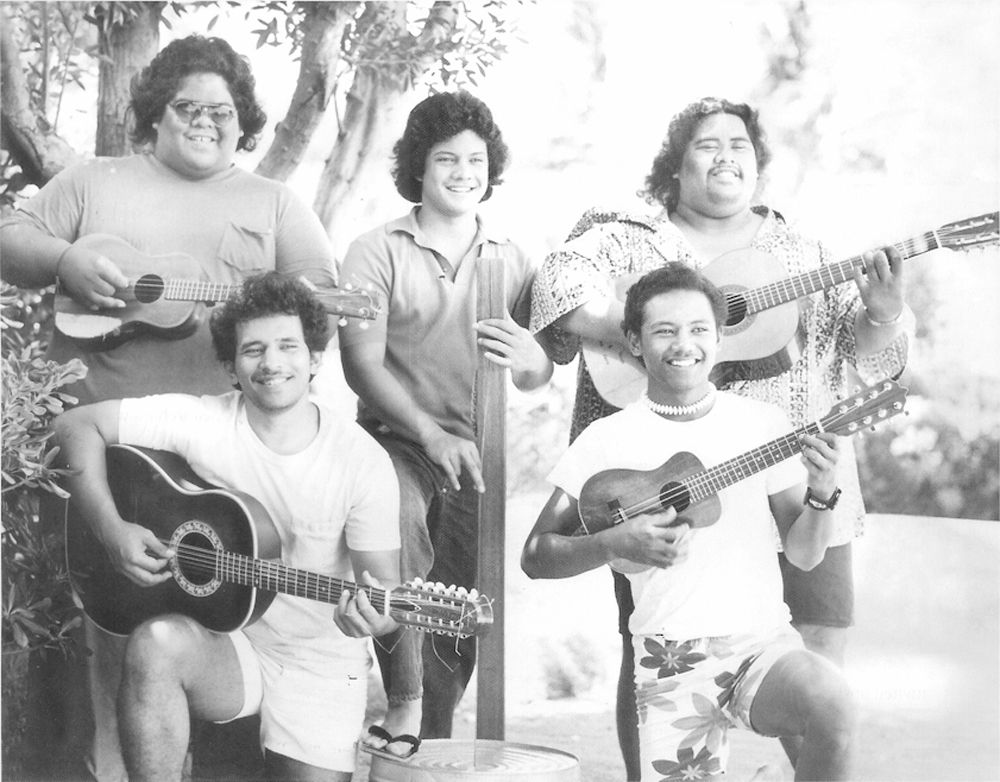
*1976年頃のマカハ・サンズ・オブ・ニイハウ。左上からイズラエル、サム・グレー、兄のスキッピー、左下からジェリー・ココ、ムーン・カウアカヒ（撮影：スカイラーク・ロゼッティ）
1975年、バンドとして正式なコンサートのオファーが来る。イズラエルとスキッピーの叔父フランシス・カマカヴィヴォオレがコーチを務めるフットボールチーム"マカハ・アリイ"のジュニアクラスでチームの運営資金を集めるためのイベントが企画され、そこで正式に「ザ・マカハ・サンズ・オブ・ニイハウ」はコンサートを開くことになった。
場所はマカハ・シェラトン・ホテル（※）。メル・アミナの記憶では、その時に初めてバンドとしてのポスターも作られた。
（※）マカハ・シェラトン・ホテル：
シェラトン・マカハリゾート。 1999年にクローズ。
コンサートではスキッピー、イズラエル、ムーン・カウアカヒ、メル・アミナ、そしてベースにサム・グレー（※）が加わった。彼らが演奏していると、ギャビー・パヒヌイも駆けつけ、ステージで一緒に演奏。スチームボート時代の仲間を祝ってくれた。メル・アミナは登場したギャビーを見てイズラエルとスキッピーに「ギャビー・パヒヌイと知り合いなのか？！」と驚きを隠せず聞いたという。「そうなんだ。だってアンクル・モエ・ケアレはギャビーと一緒にバンドで演奏してたから」と答える２人にメル・アミナは畏敬の念を抱いた。この当時のメル・アミナはどちらかというとグランド・ファンク・レイルロード、ディープ・パープル、イーグルスなどのクラシック・ロックに傾倒していて、ハワイアン・ミュージックはオマケで演奏する程度だった。音楽キャリアを増やしたいと思いつつもどうしてよいか分からずにいた。昼は会社で働き、週末はサーフィンを楽しむ日々。時々キーボードでハードロックを演奏したりしていた。しかし、初のコンサートでハワイアン・ミュージックの伝説といわれていたギャビーが、一緒にステージで演奏したのだ。このことがメル・アミナを大きく変えることとなった。「これがずっと夢見ていたことだったんだ。夢見て1年もたたないうちに実現するなんて？！どうなってんだ！」というのが当時のメル・アミナの気持ちだった。
（※）サム・グレー(Sam Gray)：
「マカハ・サンズ・オブ・ニイハウ」オリジナルメンバー。1978年にジェリー・ココと共にグループを離れる。
コンサートの最後でイズラエルは冗談で「みんな！この後は僕の家で続きをやるよ！」と言ったところ、観客のほとんどがそれを真に受け、ひっそりとしたマカウ通りには車のヘッドライドの行列ができ、イズラエルの家の前は車でいっぱいになってしまった。イズラエルの母は、コンサートで疲れて眠りにつこうとしている息子を起こし「あんたが招待したんでしょう？自分で責任もって皆を楽しませてやんなさい！」と言ったそうだ。
このコンサートがきっかけとなり、KCCNラジオ局の人気DJで"ホノルル・スカイラーク（ホノルルのひばり）"と呼ばれていたジャクリン・ロゼッティの推薦を受けワイキキに近いカパフルにあったアップタウン・ヨーコ（※）というクラブでマカハ・サンズ・オブ・ニイハウのライブが行われた。「白いパンツに白いシャツ、そして赤いカーネーションのレイ、という当時のワイキキ界隈で行われているコンサートお決まりの衣装を彼らは着ていなかったのよ」スカイラーク・ロゼッティは当時のことを思い出す。「彼らは"彼らであること"を頑なに表現していたわ。"これが俺たちのスタイルだ、マカハの片田舎の男たちだ、好きな洋服を着て、好きなように歌う"っていう彼らのスタイルをね」
カパフルの町にマカハの息吹が届けられたのだ。
（※）アップタウン・ヨーコ（Yoko's Nite Club ＆ Bar）:
「マカハ・サンズ・オブ・ニイハウ」が演奏活動をはじめた小さなナイト・クラブ。625 Kapahulu Ave. Honolulu （現在は存在していない）
彼らの考え方、音楽は観客を刺激した。アップタウン・ヨーコのプロデューサー、ビル・ムラタ（※）は彼らのコンサートを見てポキ・レコードと契約をさせた。1976年4月12日、マカハ・サンズ・オブ・ニイハウは、スキッピー、イズラエル、ムーン・カウアカヒ、ジェリー・ココそしてサム・グレーの５人組バンドとしてファーストアルバムのレコーティングにとりかかった。そのアルバム「No Kristo」（※）はホノルル、ヤングストリートにあるサウンズ・オブ・ハワイ・レコーディングスタジオを使ってわずか1日で収録された。
（※）ビル・ムラタ(Bill Murata)：
1923-1983．数多くのミュージシャンを世に送り出した、ハワイを代表するレコードプロデューサー。1974年にトロピカル・ミュージック社を創設。手がけたアーティストにはマカハ・サンズ・オブ・ニイハウ、ジェノア・ケアヴェ、オータサン、フイ・オハナなど多数。
（※）No Kristo:
1976年リリースされた「マカハ・サンズ・オブ・ニイハウ」のファーストアルバム。プロデューサーはビル・ムラタ。このアルバムで彼らの音楽性、スタイルはすでに確立されていた。このアルバム単独ではCD化されていない。アルバムNa Mele Henoheno, helu'ekahiに一式が収められている。
マカハ・サンズ・オブ・ニイハウはハワイアン・ミュージックを演奏する人気グループとしてあっという間に評価され、オアフ島全域で演奏をするようになる。スキッピーの大きなシェビーバンが移動車として使われ、スライド式のドアが外れるまで活躍した。オアフ島以外のネイバーアイランドでもツアーコンサートを開催するようになった。彼らはシンプルなハーモニー、優れたテクニックを持つウクレレとギターというスタイルを貫いた。そして何よりも彼らが持つハワイアンとしての誇りがファンを魅了し、影響を与えていった。ザ・サンズ・オブ・ハワイの亜流といわれないようスチール・ギターを加え、ハワイ語で歌うオリジナルソングも作った。しかし、バンドメンバーは誰もハワイ語を話すことができなかったので、ハワイ語の歌詞を作ることは彼らにとって大きなチャレンジだった。ムーン・カウアカヒは「もちろんハワイ語で歌は歌っていたけど、きちんと勉強をしたのはバンド活動をスタートさせた、だいぶ後からだよ」と言っている。
そして1978年には、かつてイズラエルのホームグラウンドだった場所、カイムキのワイアラエ・アベニューと12thアベニューの角にあるハンクス・プレース（地図L）（※）でハウスバンドとして演奏をするようになる。この年は、ハワイ語が英語と共にハワイの公用語として認められた年だった。ハワイ語で歌うということは、彼らにとってハワイアンとしての誇りを表現し、宣言することでもあった。
（※）ハンクス・プレース（Hank's Place）：
Kahauanu Lake Trioによって演奏された"Ka Lei Lehua"の作者、Hank McKeagueが経営していた。「マカハ・サンズ・オブ・ニイハウ」のアルバム「Live at Hank's Place」は1978年にこのハンクス・プレースで録音された。
マカハ・サンズ・オブ・ニイハウは英語とハワイ語の両方で歌い続けた。歌詞の内容にはハワイアンの統治権に関する問題など政治的なテーマも含まれていた。「Kaho'olawe」は、かつて米軍によって爆撃演習場として使われていた島について歌った曲だ。「Wiamānalo Blues」は、過剰な土地開発を訴えた内容だった。「Hawai'i '78」は彼らの代表曲だが、かつてのハワイ王室の人達が、「今日のネイティブ・ハワイアンを見たらどれほど悲しむだろう」と悲しい気持ちを綴っている。オアフ島西海岸をルーツに、最もハワイアンな島ニイハウをバンド名にいれることで、彼らの音楽の中にハワイアンとしての思想を喚起させるオリジナリティーが加味された。マカハはハワイアン人口が多くネイティブ・ハワイアンの人権復興活動を行うメンバーたちの拠点になっていた。つまりネイティブ・ハワイアンと米国政府の間に生じている葛藤や矛盾がぶつかり合う場所でもあった。
第２次世界大戦中、米軍はマクア渓谷のほとんどを、爆撃演習ならびに実弾軍事演習場として使っていた。マクア渓谷はマカハの町から５マイル北に位置しておりマクアビーチにつながっていた。この渓谷は数多くのハワイアン文化遺産であるHeiau(神殿）や墓地などが埋まっている場所。40年経った今でも、この渓谷は米軍の管理下にあり立ち入りを禁止され、爆弾演習も定期的に行われている。マクアビーチの近くには、非常に美しいハワイアンプロテスタント墓地があり、墓石の多くが1800年代に置かれたものだ。墓地と共に建っていた教会は、1943年に米軍の爆撃を受け跡形もない。米軍よって、ハワイアンとクリスチャンの聖なる場所はあっという間に破壊されてしまった。米軍管理によるアメリカ政府の明らかな植民地的行動が、1970年代から続く争いをさらに根深いものとし、マクア渓谷はハワイアンの人権保護活動家たちのシンボルになっていった。
スキッピーもこの地域の保護活動に積極的に参加し、「マクアビーチは太平洋の真ん中に孤独に存在し、片手には米国の主権を、片手にはハワイの主権を手にしている」とビーチでレポーターに訴えていた。その時イズラエルもスキッピーの横にいたが、インタビューの間ほとんど言葉を発することはなかった。イズラエルは政治的な問題についてはオフステージのリーダーであるスキッピーにすべて任せていた。イズラエルの興味は音楽を奏でること、ビーチでボーッとすること、そして葉っぱ（マリファナ）を吸うことだけだった。もちろん海に対する強いつながりを感じていたのはイズラエルもスキッピーも同じだったし、多くのワイアナエ海岸沿いに暮らす住民たちにとっても共通する想いだった。
彼らはビーチに長い間住んでいたこともある。自らが望んだこともあれば、経済的状況で他に選択肢がない場合もあった。「１か月くらいは定期的にビーチで寝泊まりしていたね」ムーン・カウアカヒは言う。「１週間か２週間マクアビーチに行こうぜ、という話になる。それが１か月になり２カ月になり......という具合さ」ハイウェイと海の間のビーチが彼らの家だった。今も昔もそれは変わってない。小さなテント村。夜は友人や家族とキャンプファイアしながら、５番目のアルバムのためのバンドリハーサルもしていた。1979年にリリースされたアルバム「Mākaha sons of Ni'ihau」のカバー写真は、マクアビーチで撮影された。楽器を手に持ち、イズラエルは上半身裸で赤いスウェットパンツをはいている。
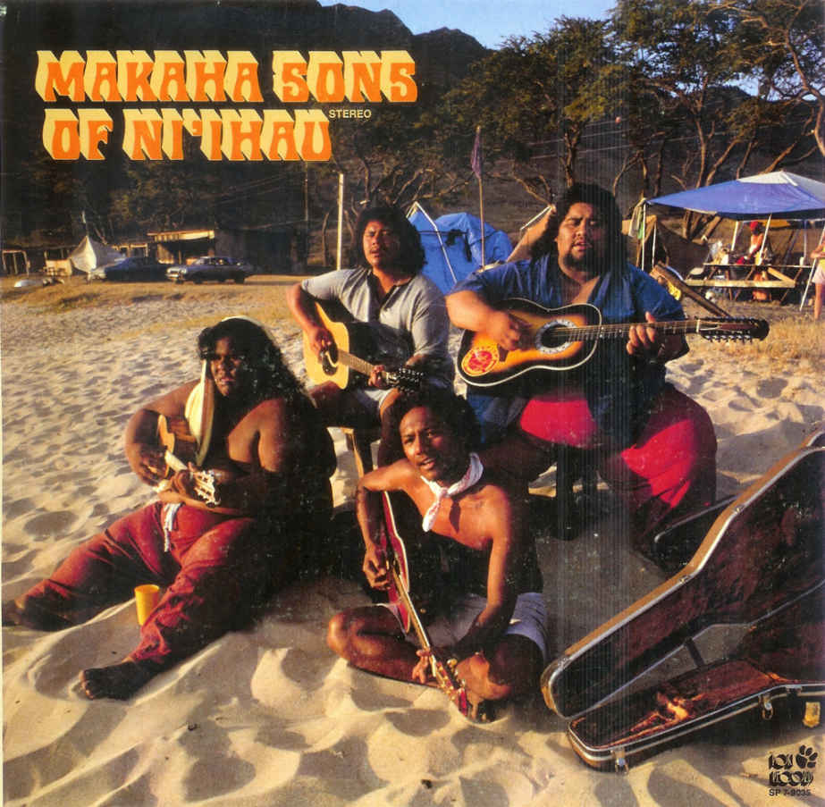
*1979年リリースのアルバム・ジャケット （マクアビーチで撮影）
スキッピーとイズラエルはこのころかなりの巨体だった。バンドが成功し、人気が出ると２人の争いも増えていった。それは兄弟ゲンカという枠を超えていた。しかしイズラエルはスキッピーの悩みの種でいることすら喜んでいるような、Happy Go Lucky（極めて楽天的）なハワイアンだった。スキッピーはイズラエルがリハーサルに来ないことや、ライブに遅れてくることもわかっていた。「スキッピーは仕事を全うしていたよ。ビジネスマンとしてね。でもイズラエルはいつだってハワイアンタイムのままだった」とツアーやライブをサポートしていた友人、デル・ビーズリーは言う。
リハーサルさえも早めに現場入りしていたスキッピーとは対照的に、イズラエルは時計すら持っていなかった。スキッピーはルーズなイズラエルに対してただ腹を立てるだけではなく、いい加減な生き方がイズラエルの持つ音楽の才能を停滞させてしまっていることを心配していた。いとこのメル・アミナは言う「スキッピーは本当によくイズラエルと言い争っていたよ。イズラエルに"俺たちが歌を歌い、演奏を完璧に仕上げるのにどれだけの時間をかけていると思っているんだ！？それなのにお前ときたら、ひょっこり現れてあっという間に完璧だ！"って言っていたな」
複雑なコードでウクレレを弾きながら４パートのハーモニーで歌うことは、イズラエルにとって朝飯前だった。なぜ自分以外のメンバーがそんな簡単なことで苦労していることが理解できなかった。「スキッピーによく言っていたよ。"ただやればいいんだよ～"ってね（笑）。そしてスキッピーは"ただやればいいっていうのがどれほど難しいことなのかあいつは全く分かっていない"と言っていた」
イズラエルの美しい甘い歌声、それは叔父モエ・ケアレの遺伝子からくるものだ。その歌声があってこそのバンドであったから、スキッピーは弟の才能が羨ましかったのかもしれない。当時スキッピーの妻（現在はメル・アミナの妻）は「スキッピーはいつも、"なんでイズラエルは努力もしないであんなに弾けるんだ！"って言ってたわ。"口を開いて声を出せばもう出来上がっている。俺はどれだけ練習しても彼の歌声に到底追いつかない"って」
スキッピーにとっては難しかったすべてのことをイズラエルはこともなげに達成し、形にしていく。作曲もそうだった。イズラエルは当時スターだったにもかかわらず、ワイアナエ高校を卒業するためにあと３つのクラス（数学、社会、英語）を修了しなくてはならず、そのため高校の事務局に、特別授業を受けさせてもらえるようにかけあった。その結果、英語の単位取得のために英語の曲を作曲しなくてはならなくなった。そこでイズラエルが作曲したのは、古代ギリシャの頌歌を真似てマリファナを吸う歓びを表現した歌だった。
"pakalōlō"パカロロ～
という唄い出しから始まる歌は、
"Woke up early this mornin', smoked a roach
朝早く起きて昨晩の残りのマリファナを吸う～
from the night before," and whose chorus goes：
という歌詞が続き、コーラス部分は、
It was oh so sweet
オ～なんて甘いんだ
It was heavenly
なんて気持ちがいいんだ
If you're ever down on the Leeward side,
風下に行ってごらん
Pakaōlō will tickle your feet
パカロロが足元をくすぐってくれるぜ～
という内容だった。
*pakalōlō（パカロロ）：
ハワイ語でマリファナのこと。
1978年、マカハ・サンズ・オブ・ニイハウはアルバム「Ke Alaula」をリリースし、人気のアルバムになった。しかし、アルバムが仕上がった時、レコード会社は「私達が期待していた音楽とはちょっと違う」とイズラエルに言った。イズラエルは「具体的にどんな曲がいいのか指定しなかったじゃないか！」と反発した。エージェントは反発するイズラエルに対して楽曲ロイヤリティを50％しか支払わないと言った。それを聞いたイズラエルは「クソくらえ！」と反論した。
生まれつきの天才は、時にその才能を真剣に受け止めようとしない。少しでも野心を持っていたら、あるいは、少しでも己の天才的な能力を真面目に捉えていたら、彼は目指すゴールにもっと早く到達したかもしれない。
スキッピーはイズラエルのアルコール依存やマリファナ常用などを心配していた。1981年、イズラエルはワイキキで白人とケンカして留置場にいれられている。その時の経緯はこうだ。白人の男がベビーカーを押しながらイズラエルの運転するバンの前を横切ったが、バンに轢かれそうになりイズラエルと口論が始まった。その結果、カッとなったイズラエルは男の顔を殴ってしまったのだ。イズラエルは処罰として、オアフ・コミュニティ・リハビリセンターで一定期間を過ごした。しかしリハビリ・センターから出たあと、すぐにパーティー、マリファナ、覚せい剤漬けの生活に戻っていった。
時期を同じくしてムーン・カウアカヒがイズラエルの姉リディアと結婚することになった。スキッピー同様、イズラエルとは真逆の落ち着いた性格の彼女は、2人の悪化している関係をクールダウンさせるためにバンド活動を一時中断したらどうだ、とスキッピー、イズラエルに勧めた。彼らはリディアの助言を受け入れ、数か月間バンド活動を休止したがマクアにあるオヒキロロ牧場（※）で開催された先住民族ネイティブ・ハワイアンとネイティブ・アメリカン音楽と文化に関するフェスティバル、Our Celebration of Hawai'iイベントで彼らは活動を再開した。
（※）オヒキロロ牧場：
バンドとして最後の演奏を行った場所。現在も乗馬ツアーなどを提供するアドベンチャーパークとして営業している。
1982年9月、イズラエルはパールハーバー出身のハワイアン、マーレーン・クウプア・アーローと結婚することになり兄のスキッピーは結婚式の準備に追われた。その場所は、スキッピーとイズラエルがバンドとして結果最後となってしまう演奏を行ったオヒキロロ牧場だった。その結婚式にスキッピーは出席しなかった。マーレーンはスキッピーとイズラエル共通の友達で小さい頃からお互いを知っていた。イズラエルは高校でマーレーンに再会した時、自宅のリビングルームの壁にでかでかとマーレーンの家の電話番号を真っ赤なマジックで書いた。イズラエルが処罰を受けていたリハビリ・センターから戻ってきて最初に連絡した相手、それがマーレーンだったのだ。
メル・アミナによれば９月の終わりスキッピーはバンドを去ることを書いた手紙をマカハ・サンズ・オブ・ニイハウのメンバー何人かに向けて書いており、そのコピーはメル・アミナにも届けられた。そして、メル・アミナが手紙のコピーを受け取ったその日、1982年10月１日、スキッピーは心臓発作でこの世を去った。28歳という若さだった。
オヒキロロ牧場の演奏がイズラエルとスキッピー兄弟最後の共演となった。
1993
年にイズラエル・カマカヴィヴォオレの体重は700パウンド（318kg）を超え、ホノルルにあるクイーンズ・メディカルセンターでチェックを受けていた。その年、９回目だった。病院には彼のために"超巨大男のためのベッド"が常備されていた。イズラエルはベッドに寝そべってテレビを見ながら、DJ気取りでテレビの様子を実況中継し、看護婦に話しかけたり、マカハ・サンズを去るための方法を考えていたりした。
スキッピーの遺灰が1982年、マクアビーチにまかれて以来、マカハ・サンズ・オブ・ニイハウはムーン・カウアカヒがリーダーとなり活動していた。スキッピーの死後、初めてのアルバム「Puana Hou Me Ke Aloha」が1984年リリースされ、ナ・ホク・ハノハノ賞で初めて２つの賞を受賞した。それ以後、マカハ・サンズ・オブ・ニイハウはバンドとしてハワイにおいて最も重要で人気のあるハワイアン・ミュージック・バンドとなった。イズラエルは甘い歌声でセンターを務めバンドの顔として活躍していた。
ステージ上で冗談をいい、ちょっとした騒動を起こしたりもしたが、スキッピー亡き後、オフステージでは兄の意思を引き継ぎネイティブ・ハワイアンの人権にも興味を示すようになっていた。それはその後のライブ活動にも反映され、曲の合間に冗談で観客を笑わせる以外に、ハワイアンとしての誇りを強調することもあった。コンサートではカホオラヴェ島、マクア渓谷などのネイティブ・ハワイアン問題もサポートしていた。
ステージを降りたイズラエルの生活は自身の結婚とスキッピーの死があった以外、何ら変わっていなかった。結婚し、パールハーバー近くのソルトレイクに移り住んでからの７年間、イズラエルの週末がパターン化していたと妻のマーレーンは言う。マーレーンが娘のヴェヘを連れて仕事から帰宅すると入れ替わりでイズラエルは夜の街へ出かけ、朝の５時までパーティーをしているといった具合だった。マーレーンが起床する時間にイズラエルは酒、ドラッグ、ジャンクフードをお腹に溜めて帰宅しそのままベッドにもぐりこむ。この７年間はある意味、イズラエルにとって人生で初めてやるべきスケジュールが決まっていた時期でもあった。相変わらず時計は持っていなかったが、家族が帰宅したら自分の出かける時間、太陽が昇り始めたら帰宅する時間、それ以外はお腹が空いた時が何かを食べる時、そんな具合に時計なしでも彼なりのスケジュール管理ができていた。
週末は特に忙しかった。しかしマカハ・サンズの仕事が入っていても、体調が悪くステージをキャンセルしなくてはならない時が多くなってきた。イズラエルの世話はマーレーンの仕事だった。「この頃は本当に大変だったわ。だって、私自身もパーティーによく行っていたし、ハチャメチャな生活が楽しいってことは分かるもの。でもね、誰かが分別を持って責任ある行動をとってそんな人たちを面倒見て行かなきゃいけないのよ」そうは言ってもマーレーンは仕事と子育てに加えてイズラエルの世話で疲労困憊していた。母親の家に１か月、長い時で３か月の間娘のヴェヘを連れて帰り実質イズラエルと別居していた時期もあった。
*イズラエルの妻、マーレーン（マウンテン・アップル社にて）
後にイズラエルはホノルル750 Amana Streetにあるホリデー・ヴィレッジ（地図H）という円形タワーの３階に部屋を借りる。週末イズラエルの遊び場所となっているスパーキーズやその他のナイトクラブがすぐ近くだった。そして、タワーにはプールもあった。
イズラエルにとって水の中ほど自分の体重を軽く感じられる場所はなかったため大いに利用した。「私が彼の世話をするのを当然だと思っていたのでしょうね」マーレーンは言う。彼女は平均的な身体をした女性で、ハワイアンの基準からは小さい方だ。イズラエルと一緒に写っている写真の中の彼女はとっても小さく見えた。「イズラエルは私がいつも彼のそばにいて何かあれば世話をすることを当然のように捉えていた。でも、実際には私の方が彼からたくさんのことを学んだわ。私自身、好き勝手な生き方をしてきたし父に何不自由なく育てられてきた我がままお嬢様だったから。でも、イズラエルの妻となってからは私が彼のためにすべてをしなくちゃならなかった。彼の健康維持のために、すべきことすべてをやる必要があったの。何度も本気で家を出ることを考えたわよ」
イズラエルのドラッグ依存は1988年にピークを迎えた。"Somewhere Over the Rainbow" や "What a Wonderful World"といった名曲のレコーディング時ですら、彼はドラッグでハイになった状態だったのかもしれない。「イズラエルの行動は特に変っていたというわけではなかったけれど、200kgを超えた大男が朝の４時半にギンギンに目が冴えた状態で、スタジオに入ってきてレコーディングするなんて考えられるかい？僕は当時29歳だったけど、朝の４時半なんて眠くて眠くてたまらなかったよ。イズラエルはむしろその逆だったからね」とレコーディングスタジオのミラン・ベルトーサは言う。
1989年には心臓発作を起こした。イズラエルはドラッグを少しの間止めていたが、食欲は相変わらず旺盛だった。友人たちは入院するイズラエルにトゥインキーやチャーシューなどを差し入れしていた。結果、彼の体重はさらに増えていった。
そして、1991年になると、再びドラッグに手を出しはじめる。減量プログラムを試みるも失敗を繰り返し、体調は最悪だった。常に酸欠状態で、バンドのメンバーとしてツアーに同行することも困難になっていた。バンドはアメリカ本土、タヒチ、日本など海外ツアーも行い、その人気はさらに高まっていたにもかかわらずイズラエルは参加できない場合が多かった。そしてそれはマカハ・サンズ・オブ・ニイハウ最大の問題になりつつあった。イズラエルもこの頃からバンドを辞めることを考えるようになった。
しかし、音楽の才能は健在だった。1986年にリリースされたアルバム「Ho'ōla」では、ムーン・カウアカヒのアイデアでクロスビー・スティルス・ナッシュ＆ヤングの"Wasted on the Way"をカバーしている。当時、ハワイアンスタイルのレゲエ、ジャワイアンと呼ばれる新しい音楽ジャンルがブームになっていて、イズラエルもその世界観に共鳴していた。そしてマカハ・サンズ・オブ・ニイハウもジャワイアンテイストを取り入れようとしていた。コンサートでは、開演前ステージ上が暗転している中でイズラエルはステージ中央に立ち、ステージ脇にいるムーン・カウアカヒを横目で見ながらウクレレで即興レゲエを演奏することがあった。そんな時ムーン・カウアカヒは、冗談まじりに手を振り「まったく～」という仕草をしていたという。
イズラエルとマカハ・サンズ・オブ・ニイハウとの間に音楽に対する価値観の違いがあったわけではなかったが、ムーン・カウアカヒの勧めもあって1991年イズラエルはソロアルバム「Ka 'Ano'i」をリリースした。このアルバムはマカハ・サンズのアコースティック・スタイルを踏襲したアルバムで、ナ・ホク・ハノハノ賞受賞も果たした。
ではイズラエルがマカハ・サンズを辞めたいと思った理由は何だったのか？
それはずばり「お金」だった。
17年間で11枚のアルバムをリリース、マカハ・サンズ・オブ・ニイハウとして膨大な数のライブをしていたにもかかわらず、イズラエルは生活保護を受け多くの借金を抱えていた。
イズラエルが心臓発作を起こした後、夫婦の関係は落ち着きを取り戻しつつあった。「多分、私たち２人とも、時間と共に大人になっただけよ。口論するのも疲れてきたのね」
２人は別居していたが、マーレーンは毎週イズラエルの家を訪ね身の回りの世話をしていた。音楽の天才も、自らの命があと数年で終わることなど予測できなかった。しかし、この頃イズラエルは妻と子供に自分の亡き後、何かしら残していくことを考え始めていたようだった。
イズラエルにとって、マカハ・サンズ・オブ・ニイハウで活動を続けていくことは、心身ともに限界を迎えていた。
1993年春、クイーンズ・メディカルセンターのベッドでイズラエルはワイキキ・シェルで間もなく始まるマカハ・サンズ・オブ・ニイハウ主催のアニュアル・メモリアルデー・コンサート"Mākaha Bash"のことで怒っていた。マカハ・サンズのエージェント、マウント・カリヒプロダクションズは島の音楽業界で敏腕プロデューサーとして有名なカタ・マドュリ（※）が運営していた。マドュリと共に一時仕事をしていたマイク・マルドューン（※）は言う。「とにかく彼はあらゆる人脈、あらゆるネタを持っていた。マネージメント、プロデュース、ブッキングすべてを担当していたし、僕が出会った人の中でダントツの人脈を持っていた。ハワイの各島を一緒に旅しても出会う人皆と知り合いなんだ。ホテルの従業員ですらね。だから、いつも滞在ホテルの部屋はアップグレードされていたよ」
しかし、イズラエルは、今回のMākaha Bashコンサートのギャラが極めて低く設定されていると憤慨していた。マドュリが彼らに提示した金額は2000ドル。これはイベントの収益から見ると不当に低く、利益のほとんどはプロダクションの儲けになっていた。その当時マドュリは地元新聞のインタビューなどに取り上げられ、業界に新しい旋風を巻き起こす注目プロデューサーとして紹介されていた。
（※）カタ・マドュリ（Kata Maduli）：
音楽プロデューサー、プロモーター。ベーシストとしてもレコーディングに参加。
（※）マイク・マルドューン（Mike Maldoon）：
カリフォルニア出身のドラマー、パーカッショニスト。1990年代からハワイで活動を始める。IZをはじめナ・レオ、ハワイアン・スタイル・バンド、セシリオ＆カポノ、テレサ・ブライトなどの多くの作品に参加。
病院の部屋でイズラエルは数年前、友人から紹介されたある男の名刺を取り出した。カイムキの学校で１学年下だった男で、20代の頃に何度かナイトクラブで顔を合わせた程度の付き合いだったロバート・フェリーノ。職業、弁護士。イズラエルは迷いなくフェリーノに電話をかけて、事情を説明した。カタ・マドュリと契約を解消し、マカハ・サンズ・オブ・ニイハウから脱退したいことを話した。
話を聞いたフェリーノは興味を持った。ハワイで最も人気あるバンドのメイン・ボーカルが生活保護を受けて生計を立てているなんてことがあり得るのだろうか？バンドを管理しているエージェントが不当な扱いをしているか、能力を低く見られているかのどちらかだ。
フェリーノはすぐにイズラエルがいるクイーンズ・メディカルセンターに行き、長い時間をかけて事情を聴いた。そして、現在置かれている困難な状況から救い出すと約束した。さらに新しいエージェントやプロデューサーを紹介し、経済状況の立て直しプランも考えてくれることになった。それだけでも、驚きに値する展開だったが彼はこれらすべてを「無償」でやると言ったのだった。単刀直入にイズラエルに言った。まずはできる限り早く、多くの楽曲のレコーディングを始めること。そして、録音した楽曲のマスターテープを必ずイズラエルが保管しておくこと。そうすれば、リスクなくプロデューサー、販売プロモーター、投資家を募ることができる。フェリーノは、地元のレコード会社マウンテン・アップル社のカリスマ経営者、ジョン・デ・メロに電話をかけた。マウンテン・アップル社はジョンの父、ジャック・デ・メロの代から受け継がれてきた会社で、ハワイアン・ミュージックを専門に扱うレコード会社のひとつだった。父の時代にはポリネシア音楽やトラディショナルハワイアン・ミュージックとオーケストラのコンピレーションアルバムなどを手掛けていた。２代目ジョンは、よりハワイアン・ミュージックに特化し、注目のハワイアンデュオ、ザ・ブラザーズ・カジメロやその他の人気ミュージシャンを手掛けていた。
フェリーノがジョン・デ・メロに電話をかけイズラエルの状況を説明し協力を要請すると、「良い話だ」と協力に同意した。ジョン・デ・メロはイズラエルのことをもちろん知っていた。
ジョン・デ・メロはイズラエルのような才能ある天才的なミュージシャンと一緒に仕事ができたら良い、と常に思っていたという。当然ながら会社にとってメリットが大きいと考えたからだ。しかし、フェリーノから電話をもらった時、まずフェリーノがどんな男なのかを理解していなかった。そして、なぜ弁護士と名乗る男がイズラエルの代理人として電話をかけてきているのかもわからなかった。契約違反訴訟といった話には全く興味がなく、まずはイズラエル本人に確かめたいことが沢山あった。
当時イズラエルの評判は決して良いものではなく、コンサートやレコーディングを無断でキャンセルすることは業界で周知されていた。マカハ・サンズ・オブ・ニイハウはイズラエル抜きでコンサートをすることが多くなり、そのことがイズラエルの悪評に拍車をかけた。イズラエル不在の3人でアルバムレコーディングもしていた。20年に及ぶキャリアの中で起きたイズラエルのルーズな一面はハワイアン・ミュージック業界では有名な話だったが、その噂が本当なのかは分からないものが多かった。
例えば、ビッグアイランドの小学校で反ドラッグツアー中、覚せい剤所持で捕まってツアーから追い出されたとか、有名な歌手ジミー・バフェット（※）と偶然コンサート会場のトイレで出会い、ジミーがイズラエルの巨体をバカにして笑ったことに怒り、彼のコンサート開演直前にステージ上の電源をすべて切ってしまい、さらにはイズラエルがジミー・バフェットを殴り飛ばしたともいわれていた。
（※）ジミー・バフェット(Jimmy Buffett)：
1946～. 1960年代後半カントリー・ミュージシャンとして音楽キャリアをスタートさせ、30枚以上のアルバムをリリース。マルチな才能を発揮し、作曲家、作家、映画監督、実業家としても有名。「チーズバーガー・イン・パラダイス」などの飲食店を全米展開。オアフ島ワイキキにもジミー・バフェット レストラン＆バーがあったが2016年に閉店。
イズラエルはジョン・デ・メロと手を組むことになったが、それでイズラエルが自由を獲得できたかジョン・デ・メロには知る由もなかった。ニュースで、マカハ・サンズの関係をぶち壊してマウンテン・アップル社に移籍したろくでもない大男などと記事を書かれたりしていたからだ。イズラエルはこうしたデマ報道に対して、ラジオ局などに電話をかけ「バンドとは円満に契約を解除し、メモリアルデーのMākaha Bashにも出演しない」と改めて状況を説明した。
その間、ロバート・フェリーノはカタ・マドゥリのマカハ・サンズに対するロイヤリティ支払に対する訴訟をおこし、同時に"マカハ・サンズ・オブ・ニイハウ"のバンド名使用に関する起訴も進めていた。フェリーノは「イズラエルが継続していたすべての人間関係を円滑に解消するために法的な処理を実行したんだ」と述べている。「それまでの人生で絡まってしまった糸を１本１本ほどく作業を行ったまでだよ。彼を自由にするためにね。皆がマカハ・サンズからの脱退に対して僕に非難を浴びせた。それは否定しないよ（笑）。僕は彼の右腕になって動いていたからね。そのために様々なしがらみをバサリと切っていったわけだから」
Mākaha Bashの１週間前、イズラエルは地元新聞のインタビューに答えている。「マカハ・サンズ・オブ・ニイハウのメンバーが希望するならば彼らと活動を続けていきたいとは思う。でも彼らはカタ・マドュリの元を離れてボクと一緒に活動したいと思っているのかな？」
メモリアルデーの日Mākaha Bashはイズラエル抜きで行われた。その日、イズラエルは病院にいた。イズラエルの幼馴染でマカハ・サンズのツアーの世話をしていたデル・ビーズリーもMākaha Bashで演奏をしていたが、デル・ビーズリーによれば「ステージはお世辞にも出来の良い内容ではなかった」と言っている。同日、ジョン・デ・メロはロバート・フェリーノに電話をして、イズラエルの件で詳しい話を聞きたいと申し出た。
病院での様子をジョン・デ・メロはこう語った。「イズラエルが入院している時は国の大きなイベントが病院で開催されているように騒々しかったよ。病室にはたくさんの人が出入りして、何人かは彼に食べ物の差し入れをしていた。イズラエルは、ウクレレを弾いて歌を歌っていたよ」
ミーティングは病室で行われ、ジョン・デ・メロは、フェリーノ以外の訪問者をすべて病室の外に追い出し、イズラエルと３人で静かに話を始めた。イズラエルはリラックスした感じで、ベッドで背中を壁にもたれかけていた。
細見で光沢のあるシャツを身にまとったポルトガル系のジョン・デ・メロはフェリーノが想像していた人物像からはかけ離れていた。「アロハシャツを着た大きなポルトガル人かと思っていたのに、実際のジョン・デ・メロは細くてまるでエルフ（映画「ホビット」にでてくる妖精）の様だったよ！」とジョン・デ・メロの印象を語っている。
ミーティングは最初から最後までイズラエルが主導する形で話がすすめられた。フェリーノ自身はジョン・デ・メロに声をかけたことが正しかったのか、彼はイズラエルを救える存在になりうるのか判断をしかねていた。しかし、イズラエルはすでに決心していたようだった。「自分のアルバムを作りたいんだ。あなたと一緒にね」とジョン・デ・メロに伝えた。ジョン・デ・メロはマカハ・サンズ・オブ・ニイハウとの関係についてイズラエルに質問した。イズラエルはキッパリとこう言った。「ムーンやその他のマカハ・サンズ・オブ・ニイハウのメンバーはカタ・マドュリから離れることはできないよ。だから僕が彼らから去らねばならなかったんだ」
イズラエルとジョン・デ・メロは数時間に及び色々な話をした。途中で病室を訪問する人々が待ちきれなくてドアをノックしても、それらすべてを断わりミーティングは続けられた。そして最後にジョン・デ・メロが発言した。「リスクは伴うよ。でも我々と手を組むことによって、君は取り分を平等にシェアすることが保証される」
ジョン・デ・メロはミーティング後、すぐ近くにあるマウンテン・アップル社のオフィスに戻り、社長であるリー・バーンスタインに声をかけた。「ちょっといいかい？」「何？」溜息と共に彼女は返事をした。ジョンがイズラエルとのミーティングに出かけていることを知っていたため、"何かある"とすぐに思ったのだった。ジョンは会社の創始者だ。業界でどんな悪評が流れているミュージシャンだったとしても、創始者である彼が「手を組む」と言えばやるしかない。実際に、現場を仕切って尻拭いするのは自分なのに......と半ば諦めモードでジョン・デ・メロの話を聞いた。
「イズラエルをソロ・シンガーとして契約しアルバム作りを開始するよ」リーは、イズラエルがどんな曲を歌うのかジョン・デ・メロに聞いた。「それはわからない。まずは彼をスタジオに連れて行く。そして、何が飛び出てくるか見てみようじゃないか」
それからの数週間、ジョン・デ・メロはクイーンズ・メディカルセンターにいるイズラエルを毎晩のように訪ねた。どんな歌をレコーディングするか、どんなプロセスで行うか、新しいアルバムについて綿密な打ち合わせをした。イズラエルは、打合せに協力的な日もがあるかと思えば、気分が乗らずに全く発言しない日もあった。
「スタジオにいる時は演奏と歌を同時に行うのかい？」
「時々はね」
「バンドと一緒に演奏するのかい？」
「時々ね」
「自分のボーカルをオーバータブ（多重録音）するかい？」
「時々は......」こんな調子だった。結局ジョン・デ・メロはイズラエルに無地のノートを手渡し、そこに歌える曲、頭に思い描かれる曲、何でもいいから書いていくように指示をした。そのノートに書かれた曲が「Facing Future」、さらにはマウンテン・アップル社で発売するその後のイズラエルのアルバムに起用されることになる。
イズラエルはボー・ディドリーの "I Saw Her Standing There" やジョン・デンバーの "Take Me Home Country Road" などをノートに書いていた。「その調子だ！」ジョン・デ・メロはイズラエルを元気づけ、ノートへの書き出しを続けさせた。「どんな曲でもいいよ。ハワイアンに限らず。そしてそれらすべての曲をハワイアンスタイルにしたっていいんだよ」ジョン・デ・メロはイズラエルに伝えた。
一方ロバート・フェリーノはイズラエルがどんな形でもマスターテープを自身で管理することを勧め、アルバムリリースも彼のレコード・レーベルで発売すべきだと主張した。マウンテン・アップル社のリー・バーンスタイン社長の意見とは異なったが、結局ジョン・デ・メロとイズラエルはビッグ・ボーイ・レコードを立ち上げる。表面上はイズラエルによって運営されているレコード会社で、レーベル名のビッグ・ボーイは友人であるローランド・カジメロ（※）のペットの名前からつけた。「ジョンと私はこの件に関して、真っ向から話をすることはありませんでしたよ」バーンスタイン社長は言う。「もしイズラエルが自分のレーベルを立ち上げることになったとしても、結局それを運営するのは私たちだということを知っていましたから」そして、実際バーンスタインが言う通りの展開になり、ビッグ・ボーイはマウンテン・アップル社の系列子会社として運営された。今日ではよく使われる方法である。ビッグ・ボーイ・レコードはイズラエルのアルバム「だけ」をリリースする会社として存在した。
（※）ローランド・カジメロ(Roland Cazimelo)：
ピーター・ムーン、兄ロバートと伝説のバンド、サンディー・マノアに参加。解散後、ザ・ブラザーズ・カジメロとして、30年以上にわたりコンテンポラリー・ハワイアン・ミュージックの第一線で活躍。2017年7月死去。70年代～90年代多くのミュージシャンと共演。コンテンポラリー・ハワイアンの重要人物。
ハワイアンによって経営されている会社という誇りをイズラエルに実感してもらうために、ビッグ・ボーイ・レコードの封筒やレターヘッドなどにはアマナ・ストリートにある彼の住所が書かれていた。ロバート・フェリーノはレコーディングの度に会計上のやりとりが、ビッグ・ボーイ・レコードとマウンテン・アップル社の間で必要になるため会計スタッフの雇用を急いだ。このころのビジネススタイルは、多くが古典的で、ジョンとイズラエルも握手ひとつで契約合意をしたに過ぎなかった。
病室にいるイズラエルを訪問し、様々な良い条件を提示してエージェント契約を結ぼうとする企業もたくさんいた。「新しい車を買おう、５～６枚のアルバムを出そう、だから我々のことを信頼して欲しい、でもあの弁護士はどうも信用できないね」そんなことを言われるとイズラエルは決まって「いや、ロバートは信頼に値する人物だよ」と言った。イズラエルの心情にも変化が訪れていた。それまでのイズラエルは、友達、友達の友達、ハワイアンであるから、という理由で彼らのすべてを信用していた。しかし、フェリーノはそのどれにも当てはまらない人物だったがすべて信用していた。
「時々イズラエルが、唐突に電話してきて"今から会えるかな"と言うんだ」フェリーノは当時の記憶を思い出す。「彼はね、誰に対しても優しいんだよ。病室を訪れてくれた人を追い出したり出来ない。いつもニコニコしてね。でも、僕が入っていくとその雰囲気が変わるんだ。本来のイズラエルに戻るっていうか...」20年近く経った今でもフェリーノの中では当時のこうしたイズラエルとの時間が、微笑ましい思い出になっている。
イズラエルに、帳簿からブッキング（予定）管理までを行うマネージャーが必要だと考えたフェリーノは、義理の母、オードリー・バラネーに依頼する。レコーディング費用を支援してくれる後援者、投資家も探した。そうすれば、マウンテン・アップル社がレコーディングに費用を投じる必要がなくなり、その結果マスターテープに関する権利もなくなるからだった。フェリーノはローカル・ハワイアンのためのサポート団体ハワイアン・アフェアの取締役メンバー、オズワルド・ステンダーに連絡をとった。連絡を受けたステンダーは、友人ドウェイン・スティーリーに連絡をした。大手建設会社グレース・パシフィックのオーナーでカンザス州出身のハオレ（白人）だが、ハワイアン文化に惚れ込みハワイ語を流暢に話した。2人はそれぞれ2万5千ドルずつ、イズラエルのソロアルバム制作に投資した。この時に投資された2万5千ドルは数年で２人に全額返還され、さらには投資に対するプロフィットまで渡されたが、このプロフィットを２人はイズラエルの娘ヴェヘのための基金として残し受け取らなかった。
ロバート・フェリーノとジョン・デ・メロ。
イズラエルは２人の新しいパートナーでありメンターを見つけた。ある意味、彼ら２人は兄、スキッピーの代わりだったのかもしれない。フェリーノはスキッピーのビジネスに対する真面目な哲学を継承し、ジョン・デ・メロはスキッピーの芸術的な直感力を肩代わりしているようだった。2人とスキッピーの異なる点は、彼らとイズラエルの間には、スキッピーとの間に生じていた兄弟の確執やライバル感情からくる諍いがなかったことだろう。
友達でも家族でもBruddahでもなかった２人との再スタートは、カタ・マドュリの「皆と知り合いで皆のことを手玉にとってビジネスを勧める友だち的スタイル」だけでなく、その他のハワイアン・ミュージック業界の人々と真っ向から対抗する形となった。
「実際ジョン・デ・メロに対する良くない噂も音楽業界の人々から聞いていたよ。自分なりの方法論を押し通して金を奪っていくやつだってね」フェリーノは続けた。「訴訟弁護人として思ったのは、もしこうした噂が反対勢力からの声だったとしたら、むしろそれは、良いサインだなと思ったんだ」
イズラエル本人は彼ら２人の手の中にも外にもいなかった。フェリーノはイズラエルに健康管理プラン、会計士、歯医者をアレンジした。そして、多額に膨らんでいた滞納入院費も肩代わりしてくれた。フェリーノはかつてクイーンズ・メディカルセンターの役員にもなっていた裁判官の元で働いていたことがあり、融通を利かしたと思われる。イズラエルがモロカイ島でスペシャルコンサートを開催した後、3万5千ドルにも及ぶクイーンズ・メディカルセンターに支払うべき入院費は清算されていた。
ジョン・デ・メロとの関係もイズラエルにとって非常に居心地の良い、信頼に値する関係だった。イズラエルの長いハワイアンネームを「IZ」と短く命名したのも彼だった。特に本土からくる観客たちにとって、発音しにくい長い名前はあまり好ましくなかったし、単語の中に〔'〕（ハワイ語独特のオキナ）が入っているのも分かりにくかった。イズラエル、という名前はハワイでも珍しい名前だった。
「ハワイ語において複雑なものをハオレ達はすべて無視する傾向にあったのよ」リーは言う。「イズラエル、という名前もクレズマー音楽（※）と混同してしまいがちだったの」そこでジョン・デ・メロとリーが考え付いたのが、IZ（イズ）だった。「実際、彼のことをIZって呼んでいた人もいたし。でも、皆が呼ぶニックネーム、というほどではなかったけれど」
いずれにしてもジョンは病院にいるイズラエルにIZという名前に変更する提案をした。
（※）クレズマー音楽：
東欧系ユダヤ人の伝統音楽で、結婚式などでクレズモリムというバンドによって演奏される。
「アーティスト名をハワイアン以外の人々が覚えやすい名前に変更したいんだ。世界で活躍していくことを前提にね。ということで、IZはどうだろう？」「いいんじゃない？」即決で名前は決まった。アルバムリリース後、ＴシャツやバンパーステッカーなどすべてIZというアーティスト名で表示され、レコード店でもIZステッカーが窓いっぱいに貼られていた。ジョンはIZという文字にハワイの国旗を追加し、イズラエルの右腕に刻まれたタトゥーの家系譜紋様、そしてイズラエルがいつも身に付けていたフィッシュフックも追加した。こうしてリー・バーンスタイン達はIZのブランディングを徹底的に行った。
イズラエル自身は自分がブランディングされることはあまり気にしていないようだった。IZという名前は気に入った、それだけでイズラエルにとっては十分だったのだろう。ひとつだけイズラエルがジョン・デ・メロに出した条件は、IZという名前と一緒にフルネームのIsrael Kamakawiwo'oleをどこかに明記して欲しい、ということだけだった。自分の死期が近づいている時でも、IZはファンにサインを頼まれると喜んで引き受けたが、どんな時も決してIZというサインは書かず、フルネーム"Israel Kamakawiwo'ole"でサインをしていた。
その頃メル・アミナはまだワイアナエに住んでいて、いとこであるイズラエルとも久しく会っていなかった。もちろん新聞などでイズラエルとマカハ・サンズの不和については知っていた。
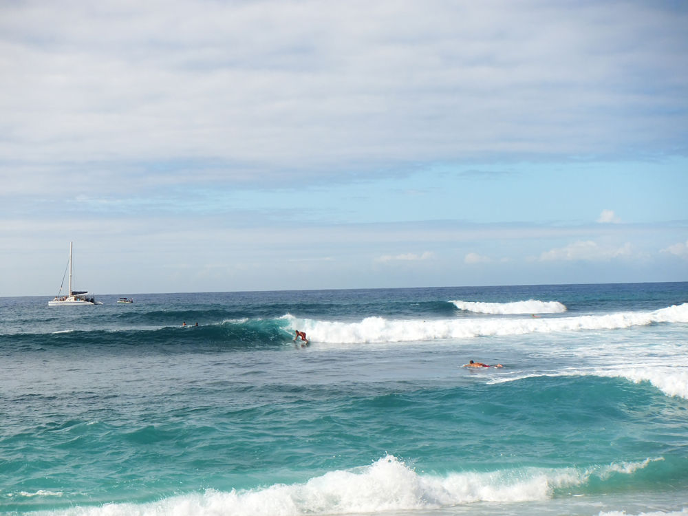
*現在のマカハ・ビーチ。サーフィンのメッカ。
6月22日、イズラエルはメル・アミナに電話した。メル・アミナはその日のことをよく覚えていた。２人は最初何気ない世間話や思い出話などをしていたが、イズラエルが本題を切り出した。
「新しいグループをスタートさせるんだ」
「おぉ！ 良かったな、Bruddah！ 良いことって言っていいんだよな？」
「たぶんね」
「グループには他に誰がいるんだい？」
「あー、まだ誰もいないんだ......」
「そうなんだ......。誰か探しているの？」
「うーん、今、とりあえず必要なのはベース・プレーヤーなんだ......」
「へぇ......」メル・アミナはベースを演奏する。
「あっ、そうだよ！ 一緒に演奏できるじゃん！」とイズラエル。
あたかも、そのアイデアはたった今、偶然にひらめいたんだ！ということを強調するかのように大声で言った。
「明日、練習に来れるかい？」
「うん、まぁいいけど、家はどこ？」
「あ～家ね......笑。クイーンズの３階にいるよ」
「なに？ なんていうビル？」
「クイーンズ・メディカルセンターだよ。２時にそこで会おう」
翌日、メル・アミナはギターを抱えてクイーンズ・メディカルセンターのエレベータに乗り３階に向かった。エレベータのドアが閉まりかけたその時、ギターケースを抱える男が閉まりかけのドアの隙間にケースを入れて、乗ってきた。エレベータに乗ってきたその男は、ローランド・カジメロ。ハワイアン・ミュージック業界において最も成功を収めているミュージシャン、ザ・ブラザーズ・カジメロの弟だ。
「どうやら向かう部屋は同じようだね」とローランドは言った。「３階に着いたら、とにかく騒々しい部屋を探せばいいのさ」
思惑通り、イズラエルの部屋の外は家族、友人、著名な音楽プロモーター達でごった返していた。人ごみをすり抜け、部屋のドアをノックした。イズラエルが部屋の中にいる訪問客たちを全員外に出したのを確認して、メル・アミナは聞いた。
「一体何事だい？ あの人たちは一体なんでここにいるんだ？」
「みんな、僕のアルバムを出したがっているのさ」と誇らしげに言った。「彼らのオファーったらすごいんだぜ。アルバムを１枚作るだけで、家と車を提供してくれるって言うんだから！」
イズラエルはメル・アミナに、ビッグ・ボーイ・レコードとジョン・デ・メロの事を伝えた。メル・アミナはそれを聞いてひどく感動した。
「つまり、すべて自分のものにできるってことだよな？おれたち、今まで何ひとつ自分のものを手にしたことなんてなかったのに、すべてを自分のものにできるなんて、すごい！」
早速３人は曲を練習した。イズラエルはベッドの上でウクレレ、ローランド・カジメロはリードギター、メル・アミナは古いアコースティックギターでベースライン。練習を終えるとイズラエルは２人に明日の予定を伝えた。「３時に指定の場所で会おう」そう言って教えられたのは、倉庫街の住所だった。
翌日、メル・アミナが指定された場所に行くとテレビの撮影班がスタンバイしていた。ローカルテレビ局KHONが彼らの番組「ホット・ハワイアン・ナイト（地図A）」（※）内のスタジオコンサートシリーズでイズラエルに演奏して欲しいとオファーされていたため、イズラエルとジョン・デ・メロは退院後すぐにKHONのスタジオに向かったのだ。ホット・ハワイアン・ナイトはイズラエルにとって、マカハ・サンズから脱退後、ソロとしてメディアで演奏する初めての機会となった。イズラエルは友人やファン50人を前にしてステージに登場した。大きな白いＴシャツを着ていたが、首回りはハサミで切られていた。彼のトレードマークでもあるフィッシュフックのネックレスにダボダボのブラックパンツ、そしてゴム草履。彼の長い髪は後ろでひとつに束ねられていた。
（※）ホット・ハワイアン・ナイト（Hot Hawaiian Nights）：
1993年、1995年に放映されたKHNL／K5のテレビ番組。現在はDVDで販売されている。
イズラエルはリラックスしていて楽しそうだった。笑顔をたやさずジョン・デ・メロと話をしていた。演奏した8曲の内、４曲はハワイ語で歌うトラディショナル・スタンダードナンバーで、この曲が後に「Facing Future」に収録される曲となる。アップビートの "Ka Huila Wai"、"Pānini Pua Kea"、そして"Ka Pua U'i"と、バラード曲"Kaulana Kawaihae"。
すでにハワイでスターとなっていたローランド・カジメロは足を組んで座り、優しくギターを奏でていた。メル・アミナはアロハシャツとブラックパンツという服装で、イズラエルとローランド・カジメロという大御所２人にかこまれ、緊張しているように見えた。番組は大成功で幕を閉じた。イズラエルの口から改めてマカハ・サンズ・オブ・ニイハウから脱退した経緯についても説明され、経済的な行き詰まりとマネージメントによる不和もファンに理解されたようだった。
イ
ズラエルは新たなバンドのメンバーを探していた。１か月前Mākaha Bashで演奏していたドラマー、マイク・マルドューンはステージを終えた後、会場のセキュリティ担当でイズラエルの仲間でもあるパケ・カマに声をかけられた。マイク・マルドューンはカリフォルニア州出身だが、ハワイに暮し、セシリオ＆カポノなど様々なミュージシャンのバックで演奏を行っていた。パケは、イズラエルがバンドメンバーを探しているのを知っていたのでマイク・マルドューンに声を掛けたのだった。
さらにギター担当のローランド・カジメロが夏の間、自分のプロジェクトのリハーサルで多忙を極めていたため、イズラエルはギタープレーヤーも探さなくてはならなかった。ローランドはアナル・アイナという友人を紹介してくれた。しかしメル・アミナは不安だった。アナルを知らなかったし、技術を持っているギタリストなのかどうかもわからなかったからだ。メル・アミナは電話でイズラエルに提案した。「僕がギターを担当しようか。お互いのことをよくわかっているし」。イズラエルは「いいね。じゃあアナルがベースを演奏できるかどうか確認してみよう」と言った。５分後、イズラエルは再びメル・アミナに電話した。「オーケー、もう大丈夫だよ。アナルが自分のベースを持ってくるから。メル・アミナはギターを持ってきて」すべてまるく収まった。
イズラエルはジャワイアンソングをアルバムに加えたいと考え、1990年にリリースされた初めてのソロアルバム「Ka 'Ano'i」の時に参加してくれたゲイロード・ホロマリア（ローカルプロデューサーでありキーボード奏者）（※）に声をかけた。ゲイロード・ホロマリアのスタジオにはシンセサイザー、アップルコンピューターのフルセットが完備されていて、
現代的な音楽を作るにはぴったりのスタジオだった。
（※）ゲイロード・ホロマリア(Gaylord Holomalia)：
カラパナのキーボード奏者。1986年にオリジナルメンバーのカーク・トンプソンに替わり加入し現在も活動中。早くからMacを使ったDTMを駆使し、ハワイで多くのミュージシャンのレコーディングに参加している。
バンドは夏の間イズラエルが暮らすホリデー・ヴィレッジ・アパート（※）に集まり、リハを行った。曲はかつてイズラエルとメル・アミナがホット・ハワイアン・ナイトで演奏したハワイアン・トラディショナル・スタンダードやイズラエルの持つ膨大なレパートリーの中からピックアップし練習した。イズラエルは、デル・ビーズリーが書いたマウイ神の伝説に関する曲もいくつかアルバムにいれたかった。デル・ビーズリーはその曲のデモテープを録音したカセットテープを提供してくれた。メンバー達はリハーサルを繰り返し、そしてその音源にゲイロード・ホロマリアが、シンセサイザーによるアレンジを加えた。ゲイロードはイズラエルがカバーしたジョン・デンバーの曲のアレンジも担当した。
（※）ホリデー・ヴィレッジ・アパート：
「Alone in IZ World」のジャケットに使われているプールの写真は、そこで撮影された。
ジョン・デ・メロはアルバム制作のために使うスタジオのアレンジで忙しく動いていた。最終的に、1084ヤングストリートにある古いスタジオ「Sounds of Hawai'i」を選んだ。このスタジオは、1960年代伝説のミュージシャンでありコンポーザー、ハーブ・オノ（※）によって創設され、歴史に残るアルバムの多くがこのスタジオでレコーディングされていた。イズラエルも17年前、マカハ・サンズ・オブ・ニイハウのファーストアルバムをこのスタジオで収録していた。時を経てもこのスタジオは美しく、ハワイアン・ミュージックの歴史がぎっしり詰まった場所だった。スタジオ創設者のハーブ・オノと息子はすでに他界していたが、スタジオはオーディオ・リソース・ホノルルが買収し運営を続けていた。
（※）ハーブ・オノ(Herb Ono)：
1084ヤング・ストリートにあった音楽スタジオ「Sounds of Hawai'i」のオーナーであり、エンジニア。数々の名盤を生み出した伝説的なスタジオ。マッキー・フェアリー、カントリー・コンフォートなどが使用していた。
ジョン・デ・メロがこの場所をレコーディングスタジオとして決定した最大の理由、それは、イズラエルが暮らすホリデー・ヴィレッジ・アパートとこのスタジオが目と鼻の先だったことだ。車で５分もかからない距離にあることは、イズラエルにとっても最高の環境になるはずだった。さらに、ジョン・デ・メロはここで働くオーディオ・リソース・ホノルルのエンジニア、シカゴ出身のミラン・ベルトーサと名乗る男の存在も気に入っていた。
フェリーノはマカハ・サンズ・オブ・ニイハウ、カタ・マドュリと彼らの弁護士ライル・ホソダ相手にまだ訴訟を続けており、バンド名使用に関する訴訟は泥沼化していた。イズラエルは以前こう言っていた。「マカハ・サンズ・オブ・ニイハウの名前を使用できるのは、フルメンバー4人がそろった時だけだ。つまりもう二度と使えないってことだよ」
7月の終わり、フェリーノはイズラエルとムーン・カウアカヒが直接会って話をする機会を設けることにした。フェリーノは言う。「ムーンはイズラエルがバンドを去ることに傷ついていた。そしてイズラエルはムーンが自分についてきてくれなかったことに傷ついていた」会合の場には、弁護士ホソダとムーン・カウアカヒ、そして何故か米軍警備隊の司令官をムーンは引き連れてきた。フェリーノはその時の様子を鮮明に覚えている。「ムーンがイズラエルのアパートに到着した。目からは涙がぼろぼろとこぼれていた。だから、私は席を外したんだ。ムーンとイズラエル２人で何を話したかは分からない。でもその時点でもう問題は解決していたんだ」
マカハ・サンズは現在ムーン・カウアカヒ、ジョン、ジェリー・ココの３人構成で、"ニイハウ"をバンド名から削除し、マカハ・サンズとして活動を続けている。バンド名の問題は解決した。フェリーノはカタ・マドュリと報酬、ロイヤリティの問題について訴訟を続けた。
レコーディングの日は近づいてきていたが、イズラエルの予測不可能な健康状態や頻繁な入退院でスタジオの予約は困難を極めていた。結局、ジョン・デ・メロは8月から9月のほとんどを予約し、イズラエルがレコーディングできる日にいつでもすぐに使用できる状態にするしかなかった。"イズラエルの体調はどんな状態なのか？"、"レコーディングする気分になっているのか？"、イズラエルの気持ちと体調、両方がそろってレコーディングに挑める日がいつなのかは誰にも分からなかった。メル・アミナとアナル・アイナは基本的に電話で呼び出された時にすぐにスタジオに向かえるようにスタンバイをしていた。
ジョン・デ・メロは、毎朝７時半頃自宅からベレタニア通り沿いにあるマウンテン・アップル社の事務所（地図E）に出勤していた。午前中は雑務や打合せを行い、午後はイズラエルのアレンジや調整にかかりっきりだった。ホリデー・ヴィレッジにいるイズラエルを訪ね、イズラエルのコンディションをチェックする。もし彼の気分がいいようだったらそのままスタジオにつれていく。その日にならないと予定を組めない日が続いた。マウンテン・アップル社のエンジニア、ディーン・ホーフナグル（※）は当時を振り返る。「イズラエルをアパートからスタジオに連れてくるのは簡単なんだ。でも、アパートを出る時はレコーディングする気分満々だったのに、たった数分、スタジオに着くまでの間にそのモチベーションが萎えてしまうこともあった。スタジオでは常に準備万端の状態を維持していたよ。スタジオの駐車場にイズラエルが乗ったバンが到着した段階でスタジオ内の録音テープをONにするんだ」これは、ジョン・デ・メロのアイデアだったようだ。彼はその他にも細かい指示を出していた。90分のDAT（デジタル・オーディオ・テープ）１本を丸々１曲の収録に費やすこと。これは曲の前後などに即興で演奏したり、ジョークを言ったりするイズラエルのすべてを記録に残しておくためだった。
（※）ディーン・ホーフナグル（Dean Hoofnagle）：
マウンテン・アップル社のスタジオに勤めるサウンド・エンジニア。ザ・ブラザーズ・カジメロをはじめマウンテン・アップル社所属ミュージシャンのレコーディングに携わった。
ジョン・デ・メロは言う。「古びたスタジオのドアを開けてイズラエルがスタジオに入ると、彼の巨体を支えるためのイス、ウクレレ用マイク、ボーカル用マイクが既に完璧に整っている状態にしていたんだ」
イズラエルが一旦スタジオ内の巨大イスに座ったら、イズラエル自身のペースで収録は行われた。４時間の時もあったし、もっと続けることもあった。そのすべては、DATテープに記録されていた。
イズラエルの調子が良い時、ジョン・デ・メロは演奏が終わってもスタジオで、イズラエルと色々なことを語り合った。彼自身の人生や昔の思い出などだ。ある日、メル・アミナがイズラエルに１通の手紙を渡した。それは、兄のスキッピーが、亡くなる直前に書いた手紙だった。その日のレコーディング終了後、イズラエルは彼の家族やスキッピーの死に関するとても個人的な話をジョン・デ・メロに語った。テープには40分ほどの話がすべて録音されていた。イズラエル本人はそんな独り言のような話のことはすぐに忘れてしまっていたようだったが、ジョン・デ・メロはその時の録音テープを、すぐ編集しはじめた。
スタジオ「Sounds of Hawai'i」にはたくさんのヴィンテージマイクが置いてあり、中にはNeve社の古いミキサーなどもあった。ミラン・ベルトーサはコントロール室に座っていた。メル・アミナとアナル・アイナがレコーディング・ルームで演奏している。メル・アミナがアコースティックギター、アナル・アイナはメルに借りたエレキベースを使っていた。そしてイズラエルは向かい側にあるプライベート・レコーディングルームに座っていた。時々ジョン・デ・メロ自身がイズラエルと一緒に座っていることもあった。彼は、自分がイズラエルから１歩か２歩距離を置いて座っていると、彼の集中力がより高まり演奏のクオリティが上ると信じていたようだ。確かにそれは効果的だったが、他のメンバーはそんなジョン・デ・メロの行動を風変りだと思っていた。
リー・バーンスタインがレコーディング中の記憶を振り返る。「スタジオに入っていってコントロール室にいるミラン・ベルトーサにまず聞くのよ、"ジョンはどこ？"ってね。するとミランは顔を上げもせずに、"イズラエルと一緒ですよ"って答えるわけ」コントロール室から眺める限り、そこにはイズラエルしかいない。リーは２歩ほど横にずれてイズラエルの後方をのぞくと、そこにはイズラエルの巨体に完全に隠れて見えなくなっているジョン・デ・メロの姿があったのだ。リーは笑いながら「ジョンの身体はイズラエルの太ももくらいしかなかったわよ（笑）」と言う。
ジョン・デ・メロは振り返る。「僕たちのアルバムに対するアプローチはシンプルなハワイアン・ミュージックをやること、非常にシンプルだったよ。もちろんイズラエルは多才で、ジャワイアン、４パートハーモニー、何でもやったし何でもできた。そしてイズラエルは常にバンドのセンターにいたいと思っていた。最初、僕たちはイズラエルの新しいアルバムに対するコンセプトを確立できないでいたんだ。イズラエルの新しいキャリアをどんなスタイルで世間に広めていくべきなのか試行錯誤した。だからレコーディングで色々なチャレンジを試みたよ。例えるなら、少しずつ種を蒔いて、どの花が一番きれいなのかを見定める作業だったように思う」
レコーディングは常に順調だったわけではない。「不調な時は本当にイズラエルのボーカルは醜かったよ。イズラエル自身が自分のパフォーマンスに満足しない時も多かったしね」ミラン・ベルトーサは言う。彼は1988年、イズラエルがオーディオ・リソース・ホノルル・スタジオで歌った"Somewhere Over the Rainbow"と"What a Wonderful World"のテープを見ながら言った。このテープに収められた音が本来のイズラエルの実力だと確信していたミラン・ベルトーサは、ある日ジョン・デ・メロにその話をする。
ミラン「イズラエルはもっと素晴らしい歌声を発揮できるよ」
ジョン・デ・メロ「今のままでも充分イケてるだろう？」
ミラン「いや、もっと全然良いパフォーマンスができるんだ。こっちに来て。聞かせるから」
５年前にレコーディングしたテープが音質を維持しているかどうか不安は残ったがとにかく当時のイズラエルの声を聞かせた。それを聞いたジョン・デ・メロは即座にミラン・ベルトーサが言わんとしていることを理解した。
５年前にレコーディングした時、イズラエルはマカハ・サンズ・オブ・ニイハウと契約していた。つまり、この音源はイズラエル自身の所有にならないのでは？ミラン・ベルトーサはジョンに、彼自身このテープに対するロイヤリティなどの報酬は一切いらないと伝えた上で「僕が認識する限り、このテープはイズラエル自身に所属しているものだと思う」と言った。しかし、一方で版権に関するイザコザに巻き込まれる可能性もゼロではなく、自分がそこに関与したいとも思っていなかった。
ジョン・デ・メロは事情を理解した上で当時の音を改めて聞いた。メドレー、そしてハパ・ハオレのスタンダード曲である"White Sandy Beach of Hawai'i"はマカハ・サンズ時代に収録された曲だ。これらの曲をアルバムに入れることを即決した。「版権の合法性？ そんなのクソくらえ！」
8月の終わり、バンドは５曲の収録を終えた。すべて誰もが知っている曲だ。"Ka Huila Wai"、"Ka Pua U'i"、"Pānini Pua Kea"、"Henehene Kou 'Aka"、そして"Hawai'i '78"。9月上旬、それ以外の曲をレコーディングしはじめた。"Pili Me Ka'u Manu"、"'Ama'ama"、"Lā'Elima" 、"Kaulana Kawaihae"、"Kūhiō Bay"。ゲイロード・ホロマリアはジャワイアンソング２曲、"Māui Hawaiian Sup'pa Man"と"Take Me Home Country Road"のアレンジを終えてジョンに納品した。
マイク・マルドューンが１日かけて"Ka Huila Wai"と"Henehene Kou 'Aka"、２曲のパーカッション・パートをレコーディングした。これで「Facing Future」の基本的な収録がすべて完了した。
アルバム収録中のイズラエルはそれまでにないくらい一生懸命で熱心だったと友人たちは記憶している。自分の置かれた状況を完璧に理解していた。リハビリ中だと世間で噂が流れる中、家族をサポートしていかねばならぬ自分の立場などあらゆる状況を理解した上で、彼は彼ができるすべての労力をアルバム制作につぎ込んでいた。デル・ビーズリーは「その時のイズラエルの固い決意、確固たる意思は今まで見たことがなかったものだったよ。彼をそうさせた原動力の様なものがあったのかもしれないけれど、結局のところ、彼本来の能力が改めて開花したってことだったんだと思うよ！やっともとに戻った感じさ（笑）」と語る。
それでも物事は完璧に進まない。イズラエルのボーカルはまだまだリハビリとブラッシュアップが必要なレベルだった。少し休息を与え、英気を養ってもらう目的で、ジョン・デ・メロはワイアナエの山の上、パレフアの自宅にイズラエルを招待した。ジョン・デ・メロとマウンテン・アップル社のエンジニア、ディーン・ホーフナグルの２人で作ったホームスタジオがリビングルームに設置されていた。ジョン・デ・メロはヤングストリートのスタジオで収録が行われていない時には、ここでアルバムの構想を練っていた。このスタジオやリビングから美しい景色を見れば "イズラエルの何かが刺激されるかもしれない" そう考えていた。アルバム・ジャケットの撮影をしてもいいし、もしイズラエルの気分がのれば、何曲かここでレコーディングしても良いと思っていた。
イズラエルも、そのアイデアに賛成し９月の終わり、妻のマーレーン、娘のヴェヘとホノルルからジョン・デ・メロの自宅にやってきた。H1フリーウェイを西に向かい、ワイアナエ出口から海岸沿いを北に向かって、マカキロの田舎町を通り抜けて、標高2000フィートの場所に位置するパレフアストリートに入ると、山に沿って作られたジグザグの道になる。その通りの奥にジョン・デ・メロの自宅はあった。パールハーバーからダイアモンドヘッドまでオアフの南海岸が一望できる。天気の良い日にはビッグアイランドの山々も見え、日本の木版画みたいに雲の中から山の頂きが覗き、地平線に浮いているような美しい景色を拝むことができる。
ジョン・デ・メロの自宅は音楽エンジニアのために作られた基地のようだった。山の中にある古い家に最新鋭設備を揃えたスタジオが備えられていた。この家は1940年代にＲ・アレックス・アンダーソンという"Lovely Hula Hands"や"Mele Kalikimaka"などのハパ・ハオレソングの作曲家によって建てられたもので、敷地内には彼が当時オークションなどで購入したアンティークの枕木などもあったが、ジョン・デ・メロ購入後、改装されていた。
ディーン・ホーフナグルがマウンテン・アップル社に入社した時の仕事は、ジョン・デ・メロの自宅にスタジオ機材を設置して使えるようにすることだった。ホノルルから車で１時間半の距離で標高も高いパレフアは天気も不安定だった。強い風、湿気を伴う霧、時折襲ってくる豪雨。ディーンは「最新機材をベストな状態に維持するため、室内の気温を一定に保つことが必要だったけれど、それすら至難の業だったよ」と言う。
ジョン・デ・メロはシンセサイザー、コンピューターなどに傾倒していて、新しい機材を見つけてきてはそれらを自宅に持ち帰り、既存の機器につなげてみたり、設置する場所を拡張したりしていた。リビングルームの端にはコントロール・ルームがあった。床はすべてコアウッドで、その床にジョン・デ・メロは座り、暖炉で身体を温めながら、リビングの中央にウクレレを持ち腰かけているイズラエルを眺めていた。
ジョン・デ・メロはラボの研究者みたいに白いコートを羽織るのが好きで、それを着ていると、まるでしかめっ面の教授、あるいは小さな鬼みたいだった。イズラエルはそんな彼の姿を見て（スターウォーズの）"YODA"と呼んでいた。
一般的なスタジオと違い、ガラス張りで隔離されたコントロール・ルームを除き、歌うスペースを含め、すべてはリビングルームの中だった。「だから多くの場合、プロデューサーなどが来て何か秘密の電話（女との電話）をしたい時などはコントロール・ルームにこもるしかなかったんだ（笑）。ジョン・デ・メロは開放的な環境でアーティストと親しい関係を築くことにフォーカスしていたし、それが彼の好きなスタイルだった。広々としたリビングの好きな場所でアーティストが自由に過ごせる、そこで歌うこともできる、レコーディングもその状態でする。そんな環境だった」とスタジオについてディーンは語っている。
一方コントロール・ルームは広大なスペースできれいに機材が配置されていた。２台のアップルコンピューターの内１台は常にフォトショップ編集ができる状態になっており、もう１台はパフォーマーと呼ばれるソフトウェアがインストールされ、オーディオ編集専用マシンとして動いていた。ミキサー台には小さなレールが敷かれており、その上にキーボードが設置されていた。必要な時にはキーボードを滑らせて自分の前に移動し、音を出し確認作業をする。必要ない時には、レールの上を滑らせて邪魔にならない位置に戻しておくことができる当時にしては、斬新で機能的なツールだった。
ジョン・デ・メロにとってここはミキシングや編集などを完璧にこなすことが可能な場所だった。1988年ヤング・ストリートのスタジオでミラン・ベルトーサが収録したテープもここで編集された。
"Hawai'i '78"はイズラエルとバンドが収録したシンプルな音から、奥深い仕上がりへと変化を遂げた。ジョン・デ・メロは何度もアレンジをやり直し、調整を繰り返した。キーボードでストリングに変化をつけたり、シンセサイザーによるドラム音やベース音を加えたりしていった。
スキッピーからの手紙を読んだ後に語ったイズラエルの40分に渡る語りを凝縮させ、さらに効果的に伝わるように編集し、短いながらもイズラエルの悲しみや苦悩が表現されるように編集をした。
こうした一連の編集作業の詳細をジョン・デ・メロはイズラエルには伝えていなかったし、曲をジョン・デ・メロ本人がアレンジしていることも伝えていなかった。だから、イズラエルと家族がジョン・デ・メロの家に初めてやってきた日、楽しい夕食を食べた後、寝室に行こうとするイズラエルを引きとめて、彼自身が編集した曲を聞かせることにした。夜中の１時だった。
山からの風が部屋の中に入るようにドアを開け、２人は暖炉の前に座っていた。そしてジョン・デ・メロは編集して出来上がった" Hawai'i '78"を大音量で再生した。曲が終わった時、イズラエルの顔を見た。もしイズラエルがそれを気に入らなかったら、いつでも元の状態に戻せることを伝えようと思っていたからだ。イズラエルは大きなイスに深く座り目をつむり巨大な身体は震えていた。
その姿を見たジョン・デ・メロはイズラエルが脳卒中を起こしているのではないかと思い、どうやってこの山奥から彼を町の病院まで運べるか考え、焦りを覚えた。しかし目を開けジョン・デ・メロを見たイズラエルの目からは涙があふれていた。「これは僕が録音したものかい？このアルバムを僕自身が手掛けたのかい？本当かい？信じられないよ！素晴らしいね！」と言った。
この日の朝、イズラエル、マーレーン、ジョン・デ・メロの３人は裏庭でアルバムのカバー写真を撮影していた。上半身裸のイズラエルが地平線を向いて立っている姿。マーレーンは言う。「最初、彼がシャツを脱いで上半身裸になった時、"ワォ！"って思ったわ。だって、今まで彼は一度も人前でシャツを脱ぐなんてことしなかったから。だから聞いたの、"本当にシャツを脱ぐの？"ってね。そしたら彼は言ったのよ。"いいんだよ、マー（※）。ジョンしかいないから"って」彼女がイズラエルの髪の毛をとかしている写真もこの時に撮影された。
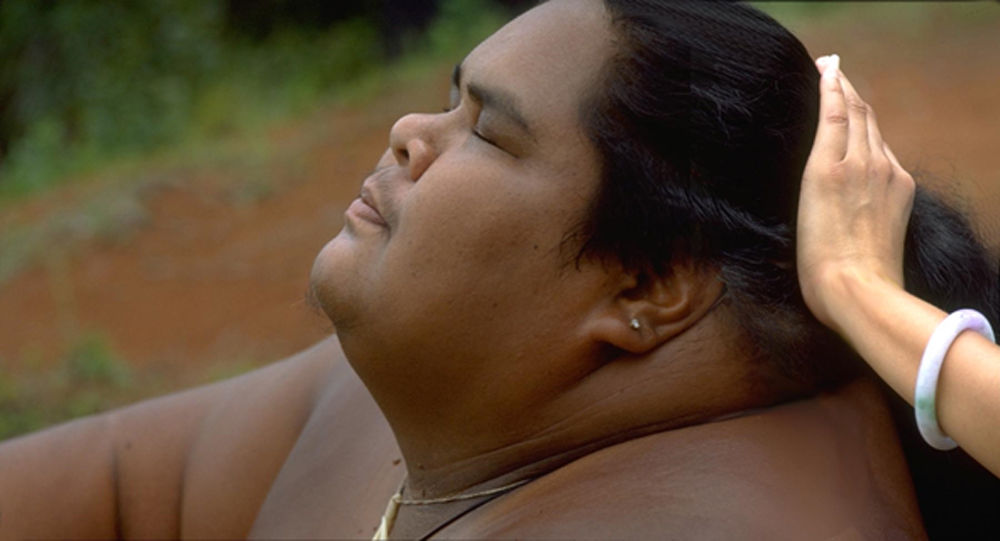
*マーレーンがイズラエルの髪を束ねていた（1993年、ジョン・デ・メロの自宅にて）
（※）マー：
マーレーンの略称。イズラエルは妻マーレーンのことをいつもこう呼んでいた。
「あなたはイズラエルに決してNOと言わない唯一の人ね」マーレーンはジョン・デ・メロにそう語った。しかしそれは100％真実ではなかった。イズラエルの周りには彼にNOと言わない人はたくさんいた。NOと言えない人もいた。彼の700パウンドを超える巨体がそうさせていたかもしれない。ジョン・デ・メロがイズラエルとのレコーディングや編集で決してNOと言わずに喜んで対応していたことは事実だ。ジョン・デ・メロがイズラエルに対してNOと言わなかった理由が他の人とは違うということがイズラエルにも伝わっていたのだろう。
9月の終わりにかけてイズラエルはよく眠りよく食べた。娘のヴェヘともよく遊び、キャンプファイアを楽しみ、冗談を言い合いながら歌を歌った。ジョン・デ・メロの自宅スタジオでどの程度作業が進んでいるのかは誰にも分からなかった。いくつかのボーカルとウクレレパートは完成していた。ある日、デル・ビーズリーとローランド・カジメロがやってきた。デル・ビーズリーが"Māui Hawaiian Sup'pa Man"、"Nothing special, Just fills and thrills here and there"にちょっとしたギターのアレンジを追加収録し、ローランドはアナル・アイナが担当したベースのほとんどを収録し直した。アナルがスタジオで演奏したベースはあまり音質やテイストが良くなかったし、ジョン・デ・メロがアナル・アイナのエレクトリック・ベースよりもローランドのアコースティック・ベースの方を気に入っていたというのがその理由だった。アナル・アイナのベース演奏パートはアルバムの何曲かにそのまま使われているが、ライナーノーツに名前はのっていない。
ジョン・デ・メロの自宅でのセッションは、結果的にイズラエルのファンとアルバム「Facing Future」に神話という現実を導き出した。700パウンドを超える巨大なハワイアンと100パウンドの小鬼ジョン・デ・メロが、高い霧に覆われた山の中でハワイアン・ミュージックの歴史を根底から覆すことになるアルバムの収録をしていたという事実は感動的ですらあった。
ジョン・デ・メロは疑いようもなく、イズラエル伝説の第一幕を開いた人物だった。彼自身はヤングストリートのスタジオで「Facing Future」が収録されていたということをめったに語らなかった。そのことについて質問された時だけ、素材のほとんどはヤングストリートのスタジオで収録された、と語る程度だった。
ジョン・デ・メロの家に滞在していた期間は、イズラエルにとって充電でき、癒された時間だったのであろう。子供時代をワイアナエの山の中で過ごしていた彼にとって、ジョンの自宅は子供時代に戻れる環境でもあった。だからこそ彼の本能的な才能がそこで蘇ったのだ。裏庭で撮影されたアルバムカバー写真、イズラエルの後ろ姿は、何よりも彼自身が未来に向かっている姿（Facing the Future）だった。
秋になり、イズラエルの弁護士ロバート・フェリーノはカタ・マドュリへの訴訟を取り下げる決断をした。ムーン・カウアカヒの弁護人であるライル・ホソダが、カタ・マドュリは遅かれ早かれ調書を取られる立場になっていただろうと教えてくれたのだ。「彼らはあなた達が思っているような多額の報酬を一切得ていなかった」フェリーノ自身もその事実を確認した。横領の事実は一切なかったどころか、カタ・マドュリの手元に入ってくる報酬そのものが元々恐ろしく低額だったのだ。フェリーノはイズラエルに、カタ・マドュリの管理に落ち度はなかった。彼のビジネスのやり方に問題があったことを伝えた。
「イズラエルは本当にマカハ・サンズ・オブ・ニイハウを離れたくなかったんだよ。カタ・マドュリの管理下から全員一緒に離れることが確信できていたら、ずっと４人メンバーのまま活動していたよ」とロバートは振り返る。
ではなぜ、イズラエル以外のメンバーは当時カタ・マドュリのプロダクションから脱退しようとしなかったのか？フェリーノはズバリと言った。「バカだったからじゃないの？」
この一件以来、ムーン・カウアカヒとカタ・マドュリの関係は薄れていき、ムーン・カウアカヒ、ジョン、ジェローム・ココの３人で活動していたマカハ・サンズはマウント・カリヒ・プロダクションから離れることになった。
「俺たちは何が起きているのか当時は全く知らなかった。ずいぶん後になって、色々なところで事の真相を知ったんだ」とムーン・カウアカヒは語った。
今となっては、当時のイズラエルの行動を感謝しているようだった。大切な友人の一人で、妻の弟がバンドを去ったことは、それがイズラエルなりの問題提議だったことを今は理解している。ムーン・カウアカヒは、当時カタ・マドュリの経営やマネージメントの稚拙さに対して直接言及することはなかったが、関係が途切れたことで心底安心しているようだった。
カタ・マドュリは現在でもハワイアン・ミュージック業界で活躍するひとりだが、この一件は彼の人脈や仕事をするアーティスト達との関係に影響を及ぼしたであろうことは容易に想像できる。必ずしも、彼と関わったすべてのミュージシャンが同じ想いをしていたわけではない。イズラエルのドラマー、マイク・マルドューンはカタ・マドュリと仕事をしてきた中で一度もトラブルはなく、きちんと正規の報酬が支払われていたと言っている。ゲイロード・ホロマリアもカタ・マドュリと仕事をしたことがある一人だが、仕事以外で彼と話をすることはないそうだ。ゲイロードは極めてハワイアンらしい表現でカタ・マドュリのことを語っている「彼のやってることのいくつかに共感できないんだよね。もちろん俺たちは未だに友達同士だけどさ。それでも、彼のビジネスのやり方のいくつかにはどうしても共感できないんだよ。ただ、共感できない、ってだけなんだよね。もっと笑っちゃうのが、彼は俺の結婚式でベストマンだったのさ！（笑）」
ア
ルバム「Facing Future」は編集、マスタリング作業が施されあと１か月で完成するという状況だった。
「発売日はもうすぐだ！イズラエルはアルバムリリースを非常に期待しているんだから！」とジョン・デ・メロは関係者たちに激を飛ばしていた。レコーディングは1993年9月に終了しており、CDリリースは11月を予定していた。ヤングストリートのスタジオではミラン・ベルトーサがジョン・デ・メロのマックで編集された楽曲を聞き、音源に含まれる小さなノイズや雑音を丁寧に取り除く作業を毎晩遅くまで行っていた。ジョン・デ・メロはイズラエルが家族のことを思い出しながら語っている" Hawai'i '78"のリミックスバージョンを手掛けていた。ロバート・フェリーノはジョン・デ・メロに" Hawai'i '78"のフルソングバージョンも追加すべきだと伝えた。芸術的な美学に基づいたものではなく、戦略としてそうすべきだとフェリーノは考えた。「この曲はイズラエルとスキッピーを象徴する曲だから、イズラエルが歌ったマスターを収録すべきだと思ったんだよ」「この曲から"イズラエルに"しっかりとお金が入るようにしたかったんだ。以前のプロダクションにこの曲を通じてお金が入ることだけは何としても避けたかった」
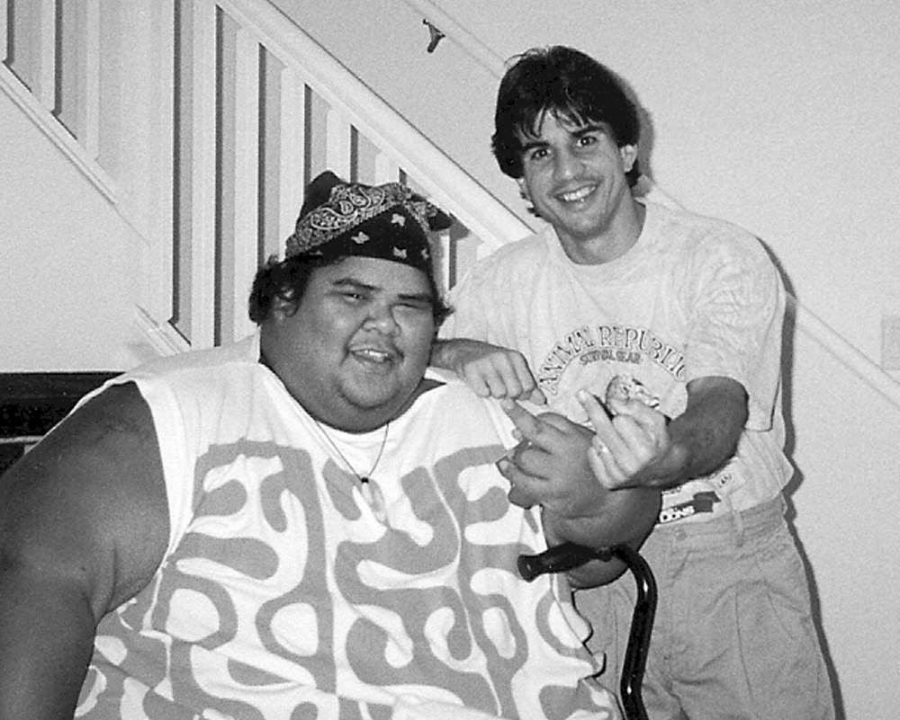
*1993年、イズラエルと（弁護士の）ロバート・フェリーノ
イズラエル自身は"Somewhere Over the Rainbow"をアルバムに含めることについてはどちらでも良いようだったが、ジョン・デ・メロとミラン・ベルトーサはこの曲が気に入っていてどうしてもアルバムに収めたかったため、収録の最後にこっそりと追加していた。代わりにイズラエルのお気に入りでもあった、ゲイロード・ホロマリアが担当した２曲のジャワイアンソングは却下された。（後に復活してアルバムに入る）。確かにこの２曲が入ることでアルバム全体が活気にあふれ、若い世代のリスナーには受けるであろうことはジョン・デ・メロも認めていた。しかし「アルバム全体をウクレレとボーカルだけのシンプルなものにすることできっとスゴイことが起こる、そう思ったんだ。そうと決まるまでには色々な試行錯誤を繰り返し、どんな形でこのアルバムを世に出していくのかについて、最後の最後まで葛藤していたよ」とジョン・デ・メロは語る。
最終的にアルバムはすべての人にとって少しずつ共感できるエッセンスを織り込む形で落ち着いた。マカハ・サンズ・オブ・ニイハウのファンたちには彼らがハワイアン・スピリッツのある楽曲と美しいハワイ語のハーモニー。若い世代にはハワイアンポップ、つまり２曲のジャワイアン。年配の人には"Lā'Elima"などのバラード曲。そしてアメリカ本土の人々に聞いてもらうことも予め視野にいれていたため、イズラエルのボーカルのみの英語の曲を入れた。さらにはローカルミュージックのファンでイズラエルに興味がある人やイズラエルの人生そのものに興味がある人に向けて、"Hawai'i '78 Introduction"を冒頭に追加した。
そうして出来上がったアルバムは11月、公式リリースを前に、ローカルラジオ局に提供された。KCCNではアルバムカバー写真について「エキサイティングだ！」とコメントし、KINEでは"Hawai'i '78 Introduction"を流す前に「Bruddah IZを取り巻く様々な論争や噂はあるけれど、この曲はそれらすべてを解決してくれるだろう。同時に彼の人生で何が起きていたのか、なぜ彼が存在しているのか、それがいかに重要なことであるのかを理解できると思う」と、感動的なコメントを発した。
曲はシンプルなウクレレで始まる。そしてハワイアンチャントが遠くに聞こえる。その音はまるでハワイがハワイ王国であった時代からよみがえってきているかのようだった。そこにイズラエルの甘く優しい声で、キング・カメハメハ３世の有名な州のモットーがチャンティングされる。
"Ua mau ke ea o ka'āina i ka pono o Hawai'i"
土地の生命（主権）は正義によって永続する
台詞のような歌詞に続いて、「ハワイ王国の王や女王たちが守ってきた聖なるハワイの大地が、今となってはハイウェイとコンドミニウムで埋め尽くされた土地に変化してしまった姿をかつての王たちが見たらどう思うだろうか？」とリスナーに問いかけている。イズラエルの甘く切ない声は家族や両親、祖先とのつながりを思い起こさせた。そして、イズラエルの人生を語るトークが続く。
「I feel free, you know? I was just confined.
My mom was born on Ni'ihau, my dad was born here.
My dad was, uh . . . he worked for the Navy.
Down at PWC, Public Works. Down Pearl Harbor. Oh, he was tight, eh？
My Papa was tight. My Papa died when I was 10, I think.
I was 10 years old. But every once in a while, he come back,you know.
Just a couple of weeks ago, I was sleeping at my place.
And my mother and Aunty Mina came.」
「自由な気分なんだ。わかるかい？今までは自分を縛り付けていただけだったってことが分かったんだ。
ママはニイハウ生まれ、パパはここで生まれた。そしてパパは、、、、海軍に勤務してたよ。いわゆる公務員ってやつさ。死に物狂いで働いてたよ。激務の毎日だった。僕が10歳の時、パパは天国に行ってしまった。たぶん10歳だったと思う。そう、、10歳。
忙しい中、パパはたまに家に帰ってきたんだ。ほんの少しの間だけね。
ちょうど数週間前、家で寝てたらママとアンティーミーナが訪ねてきたのさ。」
そしてコーラスが始まる。かつてハワイ王国だったハワイの歌。
歌詞が終わると、イズラエルがファンや友人に語りかける。
ここでは、兄のスキッピーのことを語っている。
11年前に突然この世を去ってしまった可哀相なスキッピー。
「He loved music, brah. He had a massive heart attack.
The weight and just depression. He was real depressed.
I was on the same course he was going, and he knew that, too.
That's why he came back. He came . . . he did come back and told me,
"Hey, cuz, don't be scared. There's people here for help you."
It's kinda like telling me that if he had them he would still be here.
I still believe that if he had called me he would be alive.
Because he died of a broken heart, brah.」
「音楽を愛していたよ。重度の心臓発作だった。肥満で、うつ病だった。絶望してた、全てに。僕も彼と同じ道を歩んでいたのさ。兄もそれを知ってたよ。だから、戻ってきたんだ。戻ってきて、僕にこう言ったんだ。恐れるんじゃないよ。お前のことを手助けする人々がここにいるから彼を手助けする人がもしいたら、まだ生きていたかもしれない、そういわれている気がしたよ。だって、彼は、心が傷ついて死んじゃったんだから。」
イズラエルの言葉が終わると同時にコーラスが始まり、ドラム、そしてイズラエルの声。
音が静かになり冒頭のチャンティングがエコーとなり、ドラムの音が遠くに聞こえている。
そして最後は静寂で終わる。
２つのラジオ局では、曲が終わったと同時に電話が鳴り始める。イズラエルのファンたちにとって、この曲はイズラエルの復活を告げる最高の１曲だった。マカハ・サンズ・オブ・ニイハウ時代に聞きなれたメロディーだったが、新たにイズラエル自身の語りやアレンジが加わることによってイズラエルのオリジナル曲に生まれ変わっていたからだ。イズラエルの口から語られる言葉は、ローカル達が日常の笑顔の裏で抱えている苦悩や悲しみでもあった。それはまるで神からの啓示にも聞こえた。
ハワイアンにとって大切な曲が生まれた瞬間で、その後、伝説の男として語り継がれることになる歴史がはじまった日だった。偶然にしては出来過ぎているが、1993年はハワイ王国の最後の女王リリウオカラニ政権の崩壊から100年目の年だった。ハワイアンとしてイズラエルが個人の背景、人生、歴史を語った内容は、まるで100年前ハワイ王国が崩壊した歴史とオーバーラップする内容だった。
マウンテン・アップル社はラジオ・リスナーからの反響で成功を確信しつつ、アルバムリリースの準備を進めた。ジョン・デ・メロはイズラエルを"90年代のセックスシンボル"と呼びながらアルバムカバーのポスターをハワイ中に配布して回った。アルバムはホノルルの新聞でも紹介され、ショービジネス・コラムニスト、ウェイン・ハラダは「"Hawai'i '78 Introduction"はイズラエル自身の過去、そして家族との絆を紐解く曲だ」とコメントし、このアルバムがイズラエルの新しいキャリアを踏み出すきっかけとなるであろうと述べている。
アルバム完成時にイズラエルは次のように語っている。「このアルバムを通じてボクが学んだことをひとつ挙げるとすれば、音楽は"ビジネス"だってこと。ボクは今、すべてを手にした。ボクが音楽を作れば、皆の拍手にこたえることができる。もし音楽を作らなければ、それまでのこと。すべて自分の責任」だと。
アルバム制作に2万5千ドルずつ投資したオズワルド・ステンダーとドウェイン・スティーリーは、オアフ・カントリー・クラブでアルバムリリースの祝賀会を企画した。それを受けて、ジョン・デ・メロは２人の名前をライナーノーツに記載したいと伝えると、本名ではなく"オズの魔法使いとスチール男"と記載して欲しいと返事があった。
1993年11月の終わりに「Facing Future」はリリースされた。ホノルル・スター・ブルテンの音楽評論家ジョン・バーガー（※）はアルバムについて"ケタ外れに優れた"アルバムであるとコメントし、この年の最も記憶に残るハワイアンアルバムのひとつであろうと述べた。イズラエルの心配をよそに、アルバムは大ヒットだった。当時のラジオ局KCCNの人気DJ、ビリーV（※）の愛称で知られるビル・ヴァン・オズドルは"Māui Hawaiian Sup'pa Man"がヒットの火付け役になったことを覚えている。マウイ島のDJ、ボイ・カナエは彼の番組のテーマソングとしてこの曲を早速起用した。とにかく「Facing Future」はリリース直後からあらゆるシーンで話題になった。地元のショップはいち早く"Māui Hawaiian Sup'pa Man"のバンパーステッカーやＴシャツを発売し、ストアやスワップミートなどで販売し始めた。
（※）ジョン・バーガー(John Berger)：
ハワイを代表する音楽評論家。ホノルル・スター・ブルテン新聞（現在のスター・アドバタイザー新聞）に音楽、演劇批評を書き続ける。1979年にハワイ音楽の権威、ジョージ.Ｓ.カナヘレ博士が編纂した、ハワイ音楽の百科事典と言われる「Hawaiian Music And Musicians」の改訂版を2012年、博士に依頼され担当した。
（※）ビリーV（Bill Van Osdol）：
1966年ハワイのハワイ島生まれ。KCCNで、Honolulu Skylarkとニュースを担当。KORL AM650、KCCN1420AM、Kraster96FMを経て1990年KCCN FM100でプログラムディレクターを担当し、朝のパーソナリティになる。1996年7月、Hawaiian 105 KINEの朝の番組を持ち、1996年9月にHawaiian News Now Sunriseを担当。
イズラエル自身もオアフ島全域でプロモーション活動を精力的に行った。マウンテン・アップル社のリー・バーンスタインとシェリー・コスチーナの２人がイズラエルをあらゆる場所に連れて行き、CDプロモーションを行い、ラジオ局にも足を運び、番組に出演した。イズラエル自身は、「電話出演でもいいじゃないの？」と言っていたが、リーは、彼自身がラジオ局に足を運びDJたちと直接会って、生の声を視聴者に届けることが大事なことだと知っていた。「彼をきちんと指示された場所に連れて行くことが私達の任務だったの」とリー。「もうそれは、ひとつの大きなイベントだったわよ。誰かが彼の家にいって、ちゃんと着替えて準備をしているかどうか確認する。別な誰かが彼を指定場所に車で連れて行く。さらに別な誰かが車からスタジオまで案内する。イズラエルは当時、50ｍごとに立ち止まってイスに座って5分休憩しなくてはならないような体調だったから。例えば朝の７時にラジオ局集合、なんていう時には本当に朝早くから準備をしなくてはならなかったのよ」
「私達の行動もかなり大胆だったわ。規定の駐車スペースに駐車するなんてこと考えもしなかったし、止められるところ、どこへでも車を止めていたわ。警察の車ですら、イズラエルが車から降りる現場に居合わせた時には、車の流れを一時的に止めてイズラエルを通してくれたこともあったのよ。やっと建物の中に入ったと思ってもそこからが大変。まずエレベータの守衛と10分くらいイズラエルは立ち話をするわけ。その人がどこの高校に通っていたとか、おじいちゃんはどこ出身だとか、そんなたわいもない話。"さぁ、行くわよ。お互いのおばあちゃんが知り合いだってことはもう分かったから！"って何度言ってせかしたことか！（笑）」
"Take Me Home Country Road"が"Māui Hawaiian Sup'pa Man "に続いて大ヒットし、アルバムの最後に収録された"Hawai'i '78"は夜遅い時間によく流れていた。トラディショナルハワイアンのラジオ局では"Ka Huila Wai"がヘビーローテーションでかかっていた。" Lā'Elima"は年配者のお気に入りバラードになり"Henehene Kou'Aka"は、ライブでの代表曲になった。
「見
て、マー！ 僕は輝いているよ！ 輝いているよ！」
これがIZがこの世を去る直前に行った最期の言葉だった。
1997年６月、クイーンズ・メディカルセンターの巨大ベッドで糖尿病、腎不全、呼吸器不全と戦っていたIZは意識の喪失、回復を繰り返していた。太陽の光が窓越しにIZの身体を照らすと、彼の肌はキラリと輝いた。体重はすでに1000パウンド（435kg）を超えていた。「普通の体重計では測ることができませんでした」彼の主治医バーナード・チュン医師は言う。「地下にある特注の体重計まで連れて行くか、フィッシュマーケットから巨大魚用のスケールを借りてきたりもしていました」
「Facing Future」リリース後、IZはどれだけ体重が減ったかを皆に自慢していた。そしてもっと減量できると豪語し「せめてジョン・デ・メロのポルシェに乗れるくらいまで痩せないとな～！」と冗談を言っていた。しかし減量は失敗に終わる。以前にも増して食欲旺盛になり、再びドラッグに手を出してしまったのだ。結果として、体重は元に戻るどころか、さらに増加してしまった。「人々は彼のためなら何でもする、っていう雰囲気だったよ。デリバリーをしていないレストランですらIZの身体によくないと分かっていながらも、好きなメニューを何でも配達してくれる有様だった。結果、IZは入退院を何度も繰り返すことになった」とロバート・フェリーノは語った。
減量コーチのデビッド・タサカは言う。「彼にとっては休暇みたいなものだったのでしょう。24時間体制でルームサービス、メイドサービスを受け、自由に友人たちが出入りできる環境なんて病院以外にはないですから」。フェリーノは「病院は彼のリゾートだったんだよ。普通の人がリゾートといえばＪＷマリオット・イヒラニリゾートかもしれないけど、IZにとっては数週間病院に行くことがバケーションなんだ。そこにずっと居られるわけじゃない。遅かれ早かれ病院のドクターや看護士に追い出されてしまうのだから」
ある時、新たなアルバムリリースに間に合わせるためIZのオーバーダブ用のボーカルが必要だった。ジョン・デ・メロとエンジニアのディーン・ホーフナグルがこっそり音響機器一式を医療機器一式のように持ち込み、病室でレコーディングを行ったこともあった。実はこの時すでにIZの体調はかなり悪化しており、意識がない状態が多かった。
ビッグアイランドのヒロからDJスカイラーク・ロゼッティが駆け付けた。部屋には友人や家族も集まっており歌を唄っていた。デル・ビーズリー、メル・アミナ、叔父モエ・ケアレもそこにいた。「イズラエラーニ！」と大声でIZの名前を呼びながら身体をたたくスカイラーク。「声が聞こえないわよ！」するとIZは口を開けてもう一度、みんなのために歌を歌った。
1993年の「Facing Future」リリースから１年、IZはハワイアン・ミュージック界のヒーローになっていた。1995年に「E Ala Ē」、1996年には「N Dis Life」をリリースし、どれもハワイでベストヒットになり、四六時中ラジオから流れていた。ナ・ホク・ハノハノ賞では年間最も人気のあったエンターテイナーのファン投票で1位となり、「N Dis Life」の年間アルバム賞と合わせて受賞した。
コンサートは常に満員。ハワイ州内のネイバーアイランドに出かけてライブを開催していたが、アメリカ本土、海外に行くことは出来る状態ではなかった。最終的にはオアフ島内でのライブも困難な状態になっていった。出かける時には、ボディガードなど何人かの男たちが常にIZと行動を共にしていた。マッサージ師が一緒についていることもあった。雨の日には車輪のついた長い木板が用意され、その上をIZが50ｍ程度歩き、そして用意されたイスで休んでいる間にさらに木板を歩く場所に設置し、雨でぬれた道路を歩かなくてもいいように配慮していた。マーレーンは「みんなが、彼を王様のように扱っていたのよ」と言う。
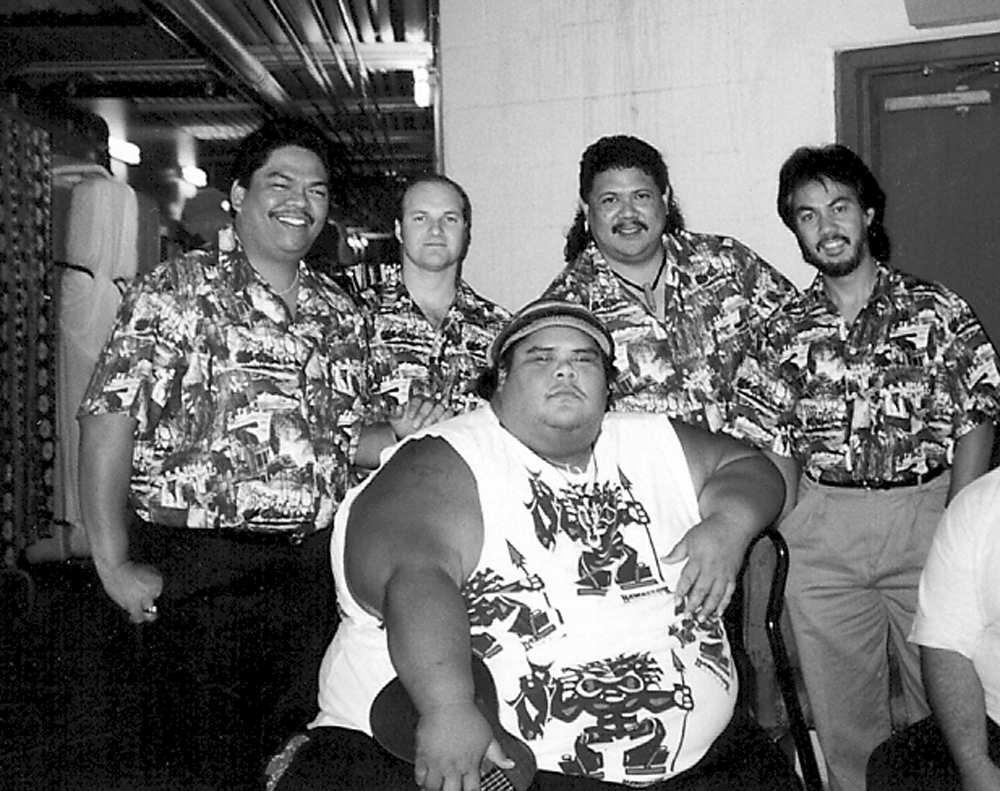
*1994年カウアイ島のコンサートでのIZとバンドメンバー
ほとんどのライブコンサートは"Hawai'i '78"を幕開け１曲目として演奏していた。ゲイロード・ホロマリアのキーボードとマイク・マルドューンのドラムによる演奏がオープニングを飾り、そこにアナウンサーの声が響き渡る。
「イズラエル・IZ・カマカヴィヴォオオオオオオオオオオオオオオオオオオレェェェェェェ～！」
IZはコンサートを盛り上げる術を知っていた。相変わらず冗談ばかり言うおしゃべり好きで、くだらないジョークと共に"no hope in dope"（麻薬の中に希望なし）のメッセージを決まり文句としていた。観客の前での問題発言、問題行動を自ら引き起こす術も心得ていたようだった。あるコンサートでは、"ハワイアン・ミュージック業界のファーストレディ"と呼ばれるカレン・ケアヴェ・ハワイ（※）と一緒にステージに立ったことがあった。折しもカレンは地元のドラッグストアLongsで万引きの疑いで捕まった直後のことだった。（メディアではこの件に関して、カレンは商品を"取り違えた"と報道していた）カレンとIZが美しいデュエットを歌い終わった後、IZはカレンの方を向いて一言、何気ない素ぶりでいたって普通に質問した。
「ところでアンティー（カレン・ケアヴェのこと）、最近Longsに行ってるかい？」
（※）カレン・ケアヴェ・ハワイ（Karen Keawehawai'i）：
歌手、エンターテイナー。クム・フラのトレーシー・ロペスの母としても知られる。名曲「マイ・イエロー・ジンジャー・レイ」はケアヴェ家のファミリー・ソングで父親が彼女のために書いた曲。2017年、来日している。
IZがまだ妻のマーレーン、娘のヴェヘと共にソルトレイクのアパートに住んでいる時も子供が２人いるようだった、とマーレーンは当時を振り返る。ジョン・デ・メロが登場してからは３人の子供の面倒を見ているようだった、と言う。IZは娘のヴェヘの部屋で何時間も２人で遊んでいることがあった。おしゃべりしたり、笑いあったり、親子というより２人の子供が遊んでいるようだった。学校に遅れそうになったり、IZがライブに遅れそうになったり、その両方だったり、マーレーンが大声で呼ぶまで２人は遊んでいたと言う。IZはそんなマーレーンの怒鳴り声を録音して、後でゆっくりその声を聴くことを楽しんでいたそうだ。名声を得て、家族との関係も改善されていく中で、IZの体調だけは悪くなっていった。
1996年には酸素吸入を常に行っていなければならない状態になった。ドラッグは完全に断ち切っていたが、それも、もはや関係なく、ほとんど息ができない状態だった。
1996年５月、ナ・ホク・ハノハノ賞でIZは名実共にハワイのスターとなった。MCが声高々にIZを紹介した。
「ステージにご注目ください！ 鳥だ！ 飛行機だ！ ハワイアンスッパーマンだ！！」
ステージには、スチール製のイスに座って酸素ボンベをイスの後ろに設置し、呼吸チューブを鼻から吸入し、真っ黒なサングラスをかけたIZが座っていた。メル・アミナ、アナル・アイナ、ゲイロード・ホロマリアの３人がIZの両サイドに立っていた。
ショーが始まる前、ゲイロード・ホロマリアとIZはどの歌を歌うか話し合っていた。当初は"Take Me Home Country Road"を予定していたが、ゲイロードがIZに考え直すように頼んだのだった。「 "Kaleohano"（※）をやるべきだよ。この曲は聞く人すべての感情に訴える１曲なんだ。こんな時こそ正しい選曲をしないとダメだろう？」
テレビ局K5が受賞式の模様を中継していた。ステージ上のIZはまるで、大きな山がそこにあるかのようだった。巨体から伸びる腕にはスプーンにしか見えないほど小さなウクレレ。彼の後ろではメル・アミナとアナル・アイナがイントロを優しく奏でている。ゲイロード・ホロマリアのキーボードはスチール・ギターのような音を出していた。IZはレイで飾られたマイクスタンドの前に座り、おもむろに口を開いて語り始めた。口調は柔らかいけれど、そこには確固たるハワイアンとしての誇りを感じることができた。
「みんな元気かい」という台詞から始まったIZのオープニングトークは２分半ほど続いた。ジョン・デ・メロはバックステージでその様子を見ていた。
（※）カレオハノ（Kaleohano）：
ムーン・カウアカヒがミュージシャンでメリー・モナークの音楽スタッフのチーフとしても有名であったピギー・カレオハノのことを歌った曲。IZにとっては思い出深い一曲。1996年IZがこの曲をナ・ホク・ハノハノ賞で歌っていると、マカハ・サンズの三人が登場し、奇跡的な再会を遂げる。会場のケアリイ・レイシェルも涙する感動の一瞬だった。
「すべてのハワイアン、そしてハワイアンの心を持った人たちにこのメッセージを捧げたい。やるべきKuleana（義務）に対してしっかりとその責任を果たしていくこと。ハワイアン文化は今、困難に直面している。子供達は夜７時～11時の遅い時間にまだ街中をブラブラしている。バス停は色んなhana 'ino（トラブル）の発生地だ。保護者、大人たちはそうした状況に責任を持たなくちゃダメだ。Mālama the kuleana for the keiki.（子供達のための責任）をしっかりと認識していて欲しい」
会場は暖かい拍手と喝采に包まれた。IZは続けた。
「そして島で暮らす若者たち、子供達、ティーンエージャーのみんな」と言って、手にしていた青いバンダナを上に挙げた。
「このバンダナは何のためにあると思う？ hanabata（鼻水：日本語の鼻とバターから来ている造語）をかむためのものだろ（※）。自分の経験から言っているんだ。Braddahsみんなに言うよ。batu（覚せい剤）とかcoke（コカイン）とかを買うのはヤメな。誰も買わなくなれば、誰も売らなくなるだろ。ハワイアンはこれからもハワイアンとして生き抜いていかなきゃならないのだから」
（※）このバンダナは何のためにあると思う？hanabata（鼻水）をかむためだろ。：
「バンダナは、手に入れた薬物（ドラッグ）を隠し持つために使うんじゃなくて、hanabata（鼻水）をかむために使え」ということ。
続いてIZはオアフ島アイエアにあるハラワ刑務所にいる重罪囚人たちのことについて語った。
「彼らの人生は、犯した過ちを時間で償う人生なんだ。でも心の中にいつもジーザス（イエス・キリスト）がいれば、また生まれ変われる。いつの日か心の中にあるōpara（ゴミ）はなくなっていく。その時、新しく生まれてきた赤ちゃんみたいに生まれ変われる。よく考えてみるといいよ」
IZ自身もこうした生まれ変わりの人生を何度も経験してきているから、曲と曲の合間にイエス・キリストの話をよくしていた。観客席は彼の話しに魅了されていた。
「お互いを愛すること。Mālama－お互いを労わること。ドラッグはやっちゃダメだ。ドラッグの魅力なんて一時的な見せかけだよ。でも僕たちの存在は永遠だ。先祖、そのまた先祖、いつの時代もずっと絆は繋がってきた。これからも繋がっていく。だからこの曲をすべての人に捧げる。この曲は、義理の兄、ムーン・カウアカヒによって作曲されたんだ。そしてマカハ・サンズ・オブ・ニイハウのメンバー、ジョン、ジェロームと共に歌ってきた曲だ。今までずっとね。そしてこれからも......」
そして演奏された"Kaleohano"はかつてないくらいの美しさと感動だった。IZの心の美しさ以上の何かが表現されていた。会場内にいる誰もが、この瞬間がIZの最期のステージになるであろうことをうっすらと感じていた。彼はこの世に存在するには、もはや巨大すぎた。
曲の後半サビの部分で、観客が歓声を上げ始めた。カメラがステージ全体をとらえた。そこには、ムーン・カウアカヒ、ジェローム、ジェリー・ココのマカハ・サンズのメンバーがいた。メル・アミナとアナル・アイナのマイクを使って、３人は美しいハーモニーでIZの演奏とボーカルに加わった。それはIZが昔から歌ってきたハワイ語での４パートハーモニーだった。
IZは当惑したような表情を一瞬見せたが、歌い続けた。サングラスをかけた彼の顔から、その表情をうかがうことはできなかったが、カメラは観客席を次々に映した。多くの人が涙を流していた。
ゲイロード・ホロマリアは言う。「その場にいた殆どの人がマカハ・サンズの登場は事前に仕組まれたものだと思っていたと思う」
ジェリー・ココは「僕たちはステージに上がる予定はなかったよ。ただ、あの時３人の身体が自然にステージに向いていたんだ。IZの声の中、歌の中から彼が僕ら３人とステージで最期に歌うことを必要としているんじゃないか、直感的にそう感じたんだよ」と振り返る。
曲が終わると4人はお互いに抱き合った。
IZ「愛しているよ、Bruddah」
ムーン「愛しているよ、Bruddah」
IZは手を上げ会場にいる人々に言った。「Love you, Hawai'i」
１年後、IZは病室からナ・ホク・ハノハノ賞授賞式を見ていた。そしてその１か月後、ちょうど午前零時を過ぎて日付が変わった1997年6月26日、彼は帰らぬ人となった。
IZ他界のニュースが発表された時、ハワイ州の反応はすごかった。当時のハワイ州副知事、メイジー・ヒロノは市民からIZの死を追悼する公式な発表や追悼式をやって欲しいとのリクエストをたくさん受け取った。ヒロノ副知事はIZ葬儀の日に、ハワイ州旗を半旗で掲げると発表した。島全体、州全体が悲しみに溢れかえっていた。当時の州知事、ベン・カエタノはダウンタウン、ホノルルにあるハワイ州議事堂内の円形広間でIZの追悼式を行うと発表した。これまで議事堂内で追悼式が行われるのは州政府の選ばれた人に対してのみだったが、特例措置として行われることになった。
ゲイロード・ホロマリアは追悼式が行われる当日、円形広間でオールナイトのメモリアルコンサートを企画した。IZの家族や友人50人ほどが総出で、コアウッドを使った巨大棺を手作りした。追悼式が行われた７月９日、議事堂前には数千人を超える行列ができ、IZのために集まった。
IZの実際の葬儀は追悼式の翌日に行われた。葬儀のために、車やトラックが島の南西部ダウンタウン界隈から２レーンを使ってマクアビーチまで走行した。IZの遺灰はボートの上からマクアビーチ沖に散骨された。兄スキッピーの元妻でメルと再婚したドナ・レイアロハ・アミナが海の中で儀式を行った。ドナは、IZが亡くなった時「これでやっと兄弟が再び一緒になる！でも非常に怪しくて危ないコンビよね～！」と冗談で語っていたという。
遺灰の量は半端なく大量だった。叔父モエ・ケアレは「莫大な量だったよ。こんな大量の遺灰を見たことがなかったよ」と語った。妻のマーレーンが最初に遺灰を手にして海に撒き、娘のヴェヘがそれに続いた。そして家族、友人たちが続き、最後は皆で海に飛び込みIZと最期の海水浴を楽しんだ。
海岸沿いの道を行進していた車やトラックからはホーンが鳴り続け、その音は海の中にいても聞こえてきた。行進する車以外でも、町行く車が一斉にホーンを鳴らし、島全体に響き渡っていた。ローランド・カジメロは島全体のあちこちから聞こえてくるホーンの音がものすごかったと記憶している。「まるでハワイの王が亡くなった時に人々が嘆き悲しむ声のようだった。海から聞くその音は、まるで島全体が嘆き悲しんでいる声のようにも聞こえたよ」
ア
メリカ本土のIZファンは、彼が亡くなった1997年以降に彼の音楽を聞いた人が殆どだろう。1998年に封切られた映画「Meet Joe Black」（邦題：ジョーブラックをよろしく）（※）のエンディング音楽として使われたことでIZを知った人が多いかもしれない。あるいは、eToys.comのTVコマーシャルから流れていた曲でIZの存在を知った人もいるだろう。テレビドラマ「ER」の人気役が死んだ時に流れていた曲だったかもしれない。
（※）邦題：ジョーブラックをよろしく（原題：Meet Joe Black）：
ブラッド・ピッド、アンソニー・ホプキンス主演による1998年のアメリカ映画。1934年の映画『明日なき抱擁（Death Takes a Holiday）』のリメイク。
どこでIZを知ることになったとしても、彼に関する情報はほとんどなかった。人々はIZをグーグルで検索し、巨漢なハワイアンであることを知り、ナップスター（※）で曲を違法ダウンロードしたり、iTunesで正規に購入したりした。もしかしたら、バーンズ＆ノーブル（※）にわざわざ足を運んで、ポルカのCDなどが並んでいる、今までだったら絶対訪れることがないコーナーの、さらに端っこでIZのCDを見つけて買った人がいたかもしれない。
（※）ナップスター：
楽曲をダウンロードするためのアプリ。登場当初はアメリカの大学生の間で大流行し、回線への負担の大きさから利用を禁止する大学が続出し話題となった。全米レコード工業会（RIAA）に著作権つき楽曲データの発見と排除（事実上の運営差し止め）を求め提訴され、2000年7月に敗訴、サービスを停止した。
（※）バーンズ＆ノーブル（Barnes ＆ Noble）：
米国で有名な本屋・CD雑貨店。現在、ハワイではオアフ島アラモアナ・センター、マウイ島ラハイナにある。
米国本土のIZファンは"Somewhere Over the Rainbow / What a Wonderful World"だけ
を好んで聞いていた。曲の美しいメドレーと歌声に魅了され、単なるファンというよりIZの存在そのものに対する賛同者だった人が多い。有名な作家、映画のプロデューサーから一般市民に至るまで多くの人がIZの曲を支持していた。
ポップミュージックが主流の本土において、IZの曲はラジオで流されることはほとんどなかった。にもかかわらず、人々の心に触れるミュージシャンだった。そもそもハワイアン・ミュージックが本土のラジオで流されることは滅多にない。ジョン・デ・メロの会社マウンテン・アップル社にとっても本土でのヒットは重要な意味を持っていた。自らが売り込んでヒットにつながったのではなく、たまたま映画やTVコマーシャルに使われた"偶然によるヒット"だったのだから。ラジオから流れて注目を浴びたのは1996年の一度きりだった。
それはサンタモニカのラジオ局KCRWの朝の番組で"Somewhere Over the Rainbow / What a Wonderful World"が流された時だった。番組の音楽ディレクターでDJ、クリス・ドゥイードュスがこの曲に出会ったのは偶然だった。ニューヨークのリンカーンセンターに住む知人がオズの魔法使いのトリビュートを構成している最中にこの曲を知りクリスに送ってくれたのだった。彼はこの曲を"すごくエキゾチックなのにすごく懐かしい"と表現している。後にインタビューで彼はIZのことをこう語っている。「ハワイからの音楽はたくさん聞いていたけれど、自分がお勧めだと思うものを、たまにリスナーに届けるという程度だったね。残念ながら、ハワイから送られてくるほとんどのサンプルCDはツーリスト向けテイストのものばかりだった。そんな中でIZのCDは"他のミュージシャンと違う純粋さ"が感じられた。曲がギャビー・パヒヌイに捧げられた一曲だったからなのかもしれない」
クリスは番組内でIZの曲をかけ、マウンテン・アップル社の通話無料電話番号を案内したところ、マウンテン・アップル社の電話はしばらく鳴りやまなかったそうだ。「この日はラジオを聞いてCDを買いたいと言う多くの人への対応でてんてこ舞いだった」とジョン・デ・メロは当時を振り返る。クリスの番組は数年前にも、発売前のレアな音楽を紹介して、大ヒットさせたという実績もあったため、リスナーもクリスがオススメするものであれば間違いはない、というイメージを持っていたことも売上に拍車をかけたのだろう。
いずれにしても、ラジオで注目されたケースはアメリカ本土ではこれだけで、あとは広告や映画、ドラマに使われたり、ある時は小説の一部に登場したりする中で浸透し、ヒットしていった。
オースティン・アメリカン・ステイトマン紙のマイケル・コーコランは「コーコランレコードで数百枚のコンピレーションアルバムを出しているけど、たった１枚のIZのアルバムのせいで、その他すべてのアルバムがかすんでしまったよ」とインタビューに答えた。
ワシントンポスト紙のエリザベス・チャンは「このメドレーは私達家族のハッピーソングになりました。１年中、楽しい時も雨の日も、家族が幸せな気分でいられたのです」
他にも「僕の人生の中で何かが足りないといつも思っていた。この曲がその足りない何かを満たしてくれたんだ」など、アメリカ本土ではIZの死後、彼の曲がTVやCM、メディアで取り上げられるようになり、ビッグ・ヒットになった。マウンテン・アップル社のセールスマネージャー、シェリー・コスチーナは「アメリカではラジオから聞くことはなかったわ。テレビや映画がラジオの代わりを果たしていました」と言う。
IZの楽曲の中でも特に"Over the Rainbow / What a wonderful world"はライセンスにおいて顕著な成功を収めていた。広告、映画、テレビ番組など、マウンテン・アップル社にはIZの楽曲80種類がライセンス発行されていた。自動車販売、アパレル、グリーティングカード、銀行、消臭剤、ノルウェーの宝くじやニュージーランドの絵画展、オランダの生命保険会社。ニューヨーク・メッツのホームゲームでは雨除けのシートをはずす作業をしている時ですら彼の音楽がかかっていた。政治的なキャンペーンを除き、マウンテン・アップル社はIZの楽曲ライセンス申請を断ったことはなかった。広告だけではなく数多くのテレビ番組や映画にも使われた。「Party of Five（邦題：サンフランシスコの空の下）」「Providence（邦題：プロビデンス）」「Picket Fences（邦題：ピケット・フェンス ブロック捜査メモ）」「ER（邦題：ER緊急救命室）」「Cold Case（邦題：コールドケース 迷宮事件簿）」「50 First Dates（邦題：50回目のファースト・キス）」「Finding Forrester（邦題：小説家を見つけたら）」「Snakes on a Plane（邦題：スネーク・フライト / 2006年映画）」「Forgetting Sarah Marshall（邦題：寝取られ男のラブ♂バカンス / 2008年）」など一度はどれかを見たことがあるだろう。
映画プロデューサーがIZの音楽を使い、その映画を見た中高年層のマダムがCDを買い、広告プロデューサーはマダムと同じジムでその話を聞き、広告プロデューサーと取引する会社社長は会社の新しいキャンペーンにIZを起用。こんな具合に、数珠玉のようにIZの曲はアメリカ本土で広まっていた。かつてハワイだけで名声を得ていたIZの曲が、その頃にはどこにいても必ず耳にする音楽になっており、アルバム「Facing Future」の売上は200万枚近くになっていた。"Over the Rainbow"シングルトラックも様々な形で販売されて、iTunesストアでは売上トップリストに常にランクインしていた。
マウンテン・アップル社のシェリー・コスチーナはIZのセールスにかかりっきりだった。彼女は、ジョン・デ・メロの父、ジャック・デ・メロがミュージック・オブ・ポリネシアという社名でポリネシア音楽をハワイで販売していた頃から働いており、その後ジョン・デ・メロが会社を継いでマウンテン・アップル社に社名を変更しハワイアン・ミュージックのセールスにビジネスをスライドした時、ジョン・デ・メロがセールスマネージャーに抜擢した古株だ。
*シェリー・コスチーナ（マウンテン・アップル社事務所にて）
「ミュージック・オブ・ポリネシア時代にはポストカードの販売プロモーションを手掛けていたの。その時の経験がCDセールスに大いに役立ったわ。つまり音楽もキーチェーンなどのお土産アイテムと同じに販売していくと売れるっていうこと」
当初からシェリーはマウンテン・アップル社で取り扱うザ・ブラザーズ・カジメロなどのレコード、CDをレコード店だけではなく、ABCストアやホノルル空港の免税店、観光客ご用達のヒロ・ハッティなどで販売する働きかけをしていた。IZの「Facing Future」も然り。しかし、出来上がってきたアルバムカバーを見て一瞬戸惑ったと言う。「なんていうか......大胆だな、と思ったの。多くの人たちはカバー写真に共感できなかったみたい。むしろ気分を害した、という感想が多かったわ。カバー写真に対するクレーム的な電話も多かったし。ローカルの人たちは、あんな風に彼を露出させるべきではない、と文句を言う人も多かった」
シェリーはIZの「Facing Future」をボーダーズ（※）、バーンズ＆ノーブル、タワーレコードなどの大手CDショップで販売できるよう、交渉を始めた。ボーダーズではワールド・ミュージックコーナーで販売するための権利を月2400ドルで契約するなど、着々とプランを実現化していった。
（※）ボーダーズ：
大型ブックストア・チェーンであったが、2011年に経営破綻した。ハワイではワードとパールシティーに店舗があったが2011年閉店した。
その後数年間に渡って、その他のコーナーでも販売できるよう積極的に働きかけをしていった。「私はIZのアルバムをアダルト・コンテンポラリーやイージー・リスニングなど、例えばヨーヨー・マとかスティングとかロッド・スチュワートと同じコーナーで販売したかったの」
IZがアメリカ本土で有名になりCDの売れ行きが伸びてくると、ハワイ州内でもその存在価値が認められるようになり、シェリーが目論んでいたとおり、ワールド・ミュージックコーナー以外の場所でもIZのCDが販売されるようになった。現在でも、IZのCDセールスはIZのプロモーション費用にその多くが費やされている。そのことについて、シェリーは「アマゾンの販売権も買いました。バーンズ＆ノーブルではＥメール広告に6000ドル、ウォルマートの一番目立つ場所には5000ドルを使いました」と具体的に話してくれた。続いて"Over the Rainbow"が広告、TV番組、映画などでの使用が決まると、シェリーは各店舗に電話をかけて、充分な在庫があるかどうかを確認していた。メディアと連動したショップの売上効果は大きかったため、常に在庫を補充するのは重要なことだった。特にIZの音楽が使用された映画がDVDとなって発売された時のCDセールスはすごかった。人気ドラマ「ER緊急救命室」のファイナルエピソードで"Over the Rainbow"が使われた時の反響は最も大きかったと言う。シェリーは「グリーン先生が "Over the Rainbow"の曲が流れる中で死んでいく、それは大ヒットの引き金になりました」と語る。
もちろんマウンテン・アップル社がこれだけの売上セールスを達成することができた裏にはｅコマースとネット音楽配信の成長がちょうど過渡期であったことも理由のひとつだろう。さらに1990年代から2000年代にかけては違法ファイル共有アプリ、ナップスターが全盛期だったため、良くも悪くも人々は音楽を無差別にダウンロードしていた。結果、そこで偶然IZに出会うことも多かったようだ。ナップスターはIZのようなミュージシャンにはある意味重要な場所だった。アメリカ本土で彼は無名だったため、"Over the Rainbow"だけは知っていてもアルバムに入っている他の曲については全く知らず、情報もない状態だった。だから無料で彼のアルバムをダウンロードし聞いた結果、気に入った人はアルバムを買うという行動が見られた。リー・バーンスタインは「ナップスターの違法ダウンロードは、IZのアルバムにとって最強のプロモーションツールでした。ナップスターがこれを聞いたら笑い転げるだろうけど」と教えてくれた。
IZのアルバムリリース後しばらく、ジョン・デ・メロは新しいアーティストの発掘やアルバムリリースの予定を組んでいなかった。彼はIZの古いテープ・アーカイブを細かくチェックし、独自のクリエイティブ・テクニックを駆使しオリジナル作品として再生させていくことに情熱を注いでいた。
1998年、マウンテン・アップル社はライブアルバム「The Man and His Music」をリリースした。続いて2001年には巧妙にアレンジされた「Alone in IZ World」を発売する。アルバムカバーは生前IZが暮らしていたホリデー・ヴィレッジのアパートにあるプールでジョン・デ・メロが撮影した大きなプールにIZが仰向けで浮かんでいる写真が使われた。アルバムはマウンテン・アップル社のライブラリーからまとめられたもので、アウトテイク（アルバム用にレコーディングしたが起用しなかったもの）や別バージョン、1分半程度だが"Mona Lisa"を歌っているもの、ソロウクレレバージョンの"Henehene Kou'Aka"と"Lā'Elima"、メドレーではなく単体での"Over the Rainbow"などで構成されていた。死後に発売されたIZのアルバムすべては売れ行きが良かった。実際「Alone in IZ World」は世界中で50万部を売り上げゴールドメダルに輝いている。
2007年に発売された「Wonderful World」は、ジョン・デ・メロにとって最も大掛かりな試みのアルバムだった。IZの声に合わせて聞こえてくる伴奏は奇跡的とも言えるフルオーケストラ演奏。これによってイズラエル・カマカヴィヴォオレをアダルト・コンテンポラリージャンルで販売するという目的が達せられたといっても良かった。
技術的にもこのアルバムは驚きだった。IZのボーカルだけが抜き出され、音程の修正がきめ細やかに慎重に行われた。ジョン・デ・メロはオーケストラ演奏を各曲に組み合わせ、生の音源、打ち込みの音源をぜいたくに使いアルバム全体にちりばめた。このプロジェクトは、ジョンの父ジャック・デ・メロが50年前に始めたミュージック・オブ・ポリネシア時代の活動を思い起こさせる。実際ジョン・デ・メロは父のことをライナーノーツ内でも"オーケストラ・コンサルタント"と呼んでいる。
しかし、このアルバムの評判は賛否両論で、ローカルメディアでも、反応は微妙だった。「良いアイデアだとは思うんだけどね」と地元で長年音楽評論を担当するジョン・バーガーは言う。「既存のアーカイブから新しいスタイルの何かを作る、大いにイイじゃないか。ジョン・デ・メロはアーカイブの言わば管理人だよ。そしてジョンとIZは生前アーカイブの取扱いについても既に話し合って合意していたんだ。だからこのアルバムも２人の中ではコンセンサスが取れていたってことなんじゃないかな」
ホノルル・アドバタイザーはIZの死後10周年を記念して広範囲に及びその名誉や存在をアピールすると同時に「Wonderful World」も大々的に取り上げていった。一方で、地元紙などはそこまで大げさな取り上げ方はしていなかった。
IZが死んでからの彼のキャリアはジョン・デ・メロの存在なくしてはありえなかったことは事実であろう。彼はマウンテン・アップル社のトップであり、IZの亡き後も彼の楽曲を巧みにコントロールしていた。申請された広告掲載をすべて承認し、自らもそのチャンスを常に探し、IZのレコーディング・アーカイブの中から部分部分を切り取り編集し、IZの死後３枚（2013年時点）のアルバムを作り上げた。ジョン・デ・メロの名前はアルバム「Wonderful World」では"エグゼクティブ・プロデューサー"から"カバーコンセプト＆デザイン"と変更になっているが、ジョンの書いたライナーノーツはIZ本人でも家族でもIZの音楽でもなく、その他のアルバムと違うジョン・デ・メロのメッセージから始まっている。
"私はワイキキのルーアーズ通りで生まれ育った。1959年大ヒットしたジェームス・ミッチェナー（※）の小説『Hawaii』の舞台となった場所。父ジャック・デ・メロがシンフォニー・オーケストラによるハワイのクラシック音楽をロンドン、日本へと届けている時、ハワイは米国50番目の州となった。この歴史的な時代の真っただ中、1959年はイズラエル・カマカヴィヴォオレがこの世に誕生した年でもあった。"（アルバム「Wonderful World」のライナーノーツより）
（※）ジェームス・ミッチェナー（James Mitchener）：
第二次世界大戦中に従軍した経験に基づいた最初の著作『南太平洋物語』（1947年）を出版し、翌年にピューリッツァー賞 フィクション部門を得る。後にオスカー・ハマースタイン脚本・リチャード・ロジャース作曲のミュージカル『南太平洋』のもとになった。
IZのハワイアン・ミュージックが好きな人たちは、彼の死後の大ヒットをどう見ているだろうか。アメリカ本土で爆発的にヒットしたIZ。ビルボード・ワールドカタログチャートのトップに何年も君臨し続けたIZ。iTunesダウンロード・ランキングでNo.1の座を手にしたIZ...。
ハワイ観光に訪れるハオレたちが、真っ青のオープンカーのレンタカーを乗り回しながらIZを聞いている様子を見てハワイアンたちが感じる違和感という感情と、ハワイアン・ミュージシャンたちがジョン・デ・メロに対して抱く感情は似ているかもしれない。
あるハワイアン・ミュージシャンは言った。「ジョン・デ・メロは最後にやってきた。IZがドン底にいて誰も相手をしていなかった時にね。そしてIZの復活を自分の手柄にしたかったんだよ（笑）。大したもんだよ。非常に優秀なマーケティング戦略だったよ。結果を見ても一目瞭然だろ？ 君自身だって、その影響を受けてこうして本を書いているわけだから！」
ジ
ョン・デ・メロは語る。「IZに言ったんだ。もし我々が成功の道を歩むことになったら、最初に覚えなくてはならないことがある、それは"いいえ、結構です。"と他者にはっきりと断りの台詞を言えるようになることだよ、とね。だってIZの知り合いだ、と言う多くの人が彼に何かをせがみに来ることがわかっていたから」
マウンテン・アップル本社は、アラモアナビーチ近くのナウル・タワー（※）（地図G）にある。レコーディングスタジオは、最新鋭の機器と豪華なインテリアでまとめられている。IZの大ヒットがマウンテン・アップル社にもたらしたものだった。ゴールドレコードの盾が光り輝きホール内の壁にいくつも飾られている。倉庫にはあふれんばかりにIZのCD。ジョン・デ・メロが初めてIZとクイーンズ・メディカルセンターで会った時のマウンテン・アップル社とは大きく変わった。60歳にもうすぐ手が届く年齢でハワイ生まれのポルトガル系、ジョン・デ・メロは黒髪を後ろでひとつに束ねた小柄な男だ。司祭が着るようなハイカラーの白いワイシャツを一番上のボタンまできっちり止め、その上には長めの黒いジャケット。まるで、マトリックスの映画の中のキャラクターみたいだ。高価そうなメガネはとても小さく、真っ黒のフレームだけが異様に太く不釣り合いにキラキラ光っている。そう、まるで宇宙から来たちっちゃい教祖、そんな風情だ。
（※）ナウル・タワー：
オアフ島カカアコ地区に1990年建てられた高級コンドミニアム。ガラス張り、扇状の筒を形した斬新な建物でカカアコ地区のランドマーク。
IZにアドバイスする以前に、ジョン・デ・メロ本人に「いいえ、結構です」と言って欲しい人がハワイにはたくさんいることも事実だ。ハワイアン・ミュージック業界とハワイアン・ミュージシャンがジョン・デ・メロに共通して抱いている感情、それは、ジョン・デ・メロという人物とマウンテン・アップル社が、IZの音楽をライセンスによってあまりにも広めすぎたためにハワイアンとしての個性や独特のテイストに対する価値を下げたという思いだ。こうした世間からの不満に対してジョン・デ・メロは、彼自身とマウンテン・アップル社が行ったIZのビジネスは、IZの希望通りだと主張する。IZの希望――つまりそれは、自分亡き後、妻のマーレーン、娘のヴェヘが不自由なく暮らしていけるだけのお金を残すことだ。IZ自身は自らが多くのメディアに売られることに対してひとつも文句は言っていない。「IZ本人からそういう不満や文句を聞かされたことは生前一度もないよ。彼自身、自分の音楽を世界中に広めていくことを目標にしていたから」
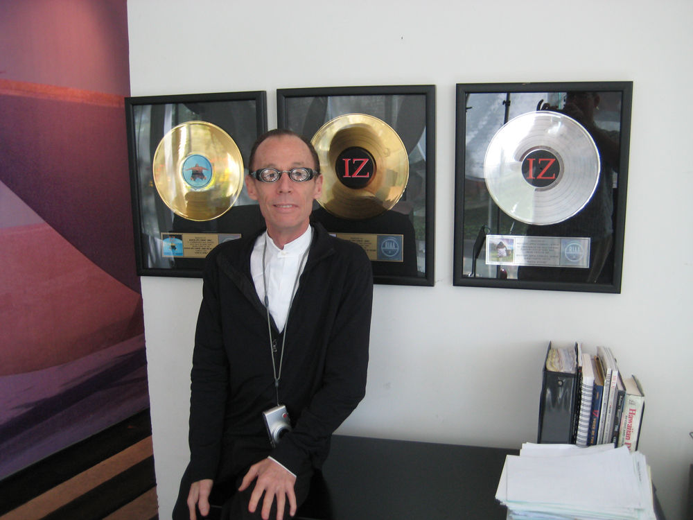
*ジョン・デ・メロ（マウンテン・アップル社にて）
IZが亡くなる前、"Over the Rainbow"を含めたその他の楽曲のライセンス契約をTV番組「Picket Fences」や「Red Shoe Diaries」などに対して、IZ自らが承認している。そういう意味では、IZが家族を養うために自らの楽曲を販売していくことが最終目標だったとするならば、ジョン・デ・メロが展開したセールスマーケティングは正しく、その結果を導くためにジョン・デ・メロ、マウンテン・アップル社と手を組んだのは正解だったのだろう。
IZの弁護人だったロバート・フェリーノによれば、IZとマウンテン・アップル社の契約は１枚アルバムが売れるごとに、IZには２ドルのロイヤリティが支払われることになっている。つまり、若干の誤差があったとしても、最終的には200万枚の売上を達成しダブルプラチナを獲得した「Facing Future」に対するロイヤリティだけでも、妻のマーレーンと娘のヴェヘは充分にゆとりのある生活を送れるほどの収入を得ていた。IZの生前に２枚のアルバム、死後３枚（2013年時点）のアルバムがリリースされ、それらすべてに対してロイヤリティ契約が結ばれている。TV番組１本で５千ドルから１万ドル、映画であればそれ以上。広告利用は一番利益率が良い。こうしたロイヤリティ収入もすべて一定の割合でマーレーンとヴェヘに配当されていた。そして、それは現在でも継続されている。しかしマーレーンは、それでも贅沢な暮らしをすることなく、カイザー・メディカルセンターでパート・タイマーとして働いている。ただマウンテン・アップル社からの配当で、仕事をしなくても充分に娘と暮らしていけるだけの蓄えはあると認めている。
アメリカ本土では、TV番組、映画、ＣＭなどに楽曲を提供することは主流で、無名のインディーズバンドでさえも積極的に売り込みをかける。実際、インディーズバンドなどではアルバムの売り上げがほとんどなくても、ライセンス収入だけが彼らの生計を助けていることもある。しかしこの米国流スタイルに、ネイティブ・ハワイアン・ヒーローが便乗していくことが、ハワイにおいてはデリケートな問題として浮上する。ハワイは100年ほど前にアメリカ合衆国によって王国を崩壊された。そしてその時の傷はまだ完全に癒されていない。一方でジョン・デ・メロがIZの歌を広告や映画に多く起用することはアメリカの価値観に加担することにつながる行為でもあり、ハワイアンにとっては非常に微妙なことだった。
ハワイアン・ミュージックのコミュニティサイト、taropatch.netサイト内の掲示板では米国の人気番組アメリカン・アイドルに出演したジェイソン・カストロ（※）がIZの"Somewhere Over the Rainbow"をカバーした一件について議論されていた。ジェイソンが、IZの不完全な歌詞を完璧にコピーして出場したからだった。掲示板では「アメリカ本土のミュージシャンがハワイアン・ミュージックに刺激を受けることを誇りに思っている、たとえそれがアメリカン・ソングのハパ・ハオレ・バージョンであったとしても、ハワイアン・ミュージックの人気が上がりヒットになれば満足だ」という意見や「ウクレレがテレビで弾かれているのを見て単純にうれしい」という意見もある一方で、ハワイアン・ミュージックが過度に露出することはハワイアンが必要としているものではないと思っている人もいた。
（※）ジェイソン・カストロ（Jason Castro）:
テキサス生まれのテキサス育ち。アメリカン・アイドルでのパフォーマンス後に曲のオリジナル･バージョンがiTUNESのダウンロードで急上昇する事態まで引き起こした。
ある人はこう語っている「カストロは非常に優れたシンガーで彼の歌そのものはとても素晴らしい。しかし、ハワイアン・ミュージックとIZの記憶は資本主義的なTV番組や映画、CMなどに乱用される必要はない。IZとスキッピーが、Hawaii '08に起きている危ういハワイ存続の状態を見たら怒るだろう。彼らの音楽はハワイアンのために存在している」
IZのヒット曲"Hawai'i '78"を比喩し、Hawaii'08（投稿された当時2008年）と発言し、ハワイとハワイアンたちの存在は今とても危機的であることを明確に示した意見だった。
IZの音楽がアメリカンアイドルやハリウッド、eToysなどで用いられること。ハワイの聖なる大地にコンドミニアムが勝手に建てられること。それに対して"Hawai'i '78"が歌の中で警鐘を鳴らしていること。IZの生まれ育った土地ハワイで起こってきたこうした価値観や人々の変化は一体何なのだろう？
海岸沿いにコンドミニアムを建てた人たちはビーチの美しさに感動し、その場所を好きになる。だからこそ、そこにコンドミニアムを建てたのだろう。しかし、ビーチ沿いのコンドミニアム建設は結果としてビーチそのものを変えてしまった。同じようにIZの楽曲がカバーされ、2000万の人々の前でそれが放映されたことによって、歌が持つ本来の美しさが変わってしまった。
もっといえば、ハワイのビーチには単なるビーチ以上の価値があり、同じようにハワイアン・ソングは単なるハワイアン・ソング以上の価値がある、ということではないだろうか。
アメリカ本土のリスナーがアルバムを購入しIZの音楽を聞く行動は、ローカル、特にネイティブ・ハワイアンがアルバムを購入し聞く行動とその根源にある哲学や価値観が全く異なる。
「ハワイを観光で訪問し、『Facing Future』を聞く多くの観光客は、純粋にアルバムのメローなサウンドや雰囲気を称賛している。一方、ハワイのローカル達にとって、特にKānaka Maoli (ネイティブ・ハワイアン)にとってこのアルバムは"歌の裏に隠された本当のメッセージ、歌を象徴する本来の意味"を理解するために存在している」とハワイ大学音楽学部、民族音楽学教授のリカルド・トリミロス（※）は言う。
"Somewhere Over the Rainbow"の冒頭に収録された伝統的なハワイアンチャントは、ハワイ王国の悲しみを表わしている。"Kaulana Kawaihae"の中に出てくるイリマの花は、このアルバムがハワイアンの深い心を表現したアルバムであることを象徴している。アメリカで表面的にアルバムがどんなにヒットしようとも、ポップミュージックのファンの多くがこのアルバムを買って評価したところで、アルバムに含まれる深いネイティブ・ハワイアンが持つアイデンティティを理解することはできないだろう。
ジョン・デ・メロは、ハワイとアメリカ本土の間に生まれるアルバムに対する根本的な捉え方の違いを認めている。「一般的にハワイアンと呼ばれる人たち、すこしでもネイティブ・ハワイアンの血を受け継いでいる人達はある意味、閉鎖的な民族だよ。誰とでも親しくなりライフスタイルのすべてをシェアして暮らしていくという概念は持っていない。ハワイアンのリスナーたちは、そうした根本的な民族が持つ感情でアルバムを聞いていると思う。多くのハワイアンたちは私にこう文句を言うよ。"このアルバムは秘密にしていなければならない。ハワイ以外の国でこのアルバムが流通することを望んでいない。なのに、今じゃ劇場公開される多くの映画にも使われているじゃないか！"ってね」
（※）リカルド・トリミロス（Ricardo Trimillos）：
ハワイ大学音楽学部、民族音楽学教授。音楽やダンス、演劇といった表象芸術などを幅広く研究している。
そもそも、IZはハワイアン活動家だったのか？
IZの政治的な信念とは何だったのか？
ジョン・デ・メロは笑いながら言った「"Hawai'i '78"は活動家によって歌われた曲でも何でもない。彼自身、特定の政治的な理念は持っていなかったし、そこに没頭する気もなかったよ」ジョン・デ・メロによれば、IZはネイティブ・ハワイアンが置かれている窮状については情熱的に興味を持っていたけれども、関連して彼らの代表として世間を動かしてゆこうという気はさらさらなかったそうだ。
「ハワイアンの活動家たちが彼のアパートを訪れて色々と話をすることもあったよ。ハワイ州議会に500人のネイティブ・ハワイアンを集めて抗議をするんだ、とか言ってね。でもそんなことは実際には起こらなかった」
それは2007年ホノルル・アドバタイザーのビバリー・クレーマー（※）によって書かれたIZの死後10周年に関する記事についてのことだった。「記者が三人いて、一人は"活動家としてのIZの名声を墜落させようじゃないか"と意気込んでいた。そして容赦なく色々な人に活動家としてのIZのことを聞きまわったんだ。その結果、彼は活動家なんかじゃない、というコメントばかりを受け取って拍子抜けしたってわけ。結局IZは彼なりの方法でメッセージを発信していたに過ぎなかった」という記事だ。
（※）ビバリー・クレーマー（Beverly Creamer)：
ホノルル・スター・アドバタイザー（Honolulu Star-Advertiser 旧the Honolulu Star-Bulletin）時代にジャーナリストとして受賞歴がある。
兄スキッピーの死後、IZがネイティブ・ハワイアン問題について強い関心を抱くようになったことは事実だ。1993年のインタビューで、ハワイアンの土地が奪取された件に関して彼の感情やそこから生れる経済的な苦難について発言した。ネイティブ・ハワイアンとしてのアイデンティティが人々の中から失われていく事実に対してIZはこう言っている。「最初にハワイ王国崩壊についての事実を知った時に僕が感じたのと同じことを、今の僕は感じている。州はいわば違法な公的組織だ。だから僕は生活保護を受けて暮らさなければならなかった」。彼はハワイ王権復興活動の基盤にもなっているネイティブ・ハワイアンに対する土地返還を政府に要求していた。
IZはマカハ・サンズ・オブ・ニイハウ時代に米軍が爆撃演習で使っていたカホオラヴェ島を守るためのコンサートを開催していた。ハワイを象徴する国旗をかかげ、後に「Facing Future」に収録されることになる"E Ala Ē"を歌いハワイアンの大地に対するプライドを訴えていた。ステージではハワイ州政府に、いつになったらハワイアンにハワイアンの土地が返還されるのかを問いかけた。そして、1993年から95年にかけての15か月間、ハワイアンにハワイ諸島を返還すべきだと抗議し、オアフ島マカプウビーチを占領したハワイ分離独立推進活動家のバンピー・カナヘレ（※）を称賛した。コンサートでIZは言った。「ハオレたちがこの島に来ることは歓迎するよ、でも用事が済んだら、自分の故郷に帰ることを忘れちゃダメだ！」
（※）バンピー・カナヘレ（Bumpy Kanahele）：
ネイティブ・ハワイアンの活動家。Pu'uhonua o Waimānaloを立ち上げ、ワイマナロを、タロ芋畑のある伝統的なハワイ文化の村に戻す運動を行った。Pu'uhonuaはハワイ語で「聖なる場所」「避難所」の意味。
そして彼は島を守っていくことをテーマにした歌を歌った。IZのレパートリーには米国に対するハワイアンとしての抵抗を訴えた曲が数多く存在する。"Hawai'i '78"、"E Ala Ē"のタイトルトラックで1996年ヒットしたジャワイアンソング"Living in a Sovereign Land"などは明確に政治的な姿勢を表していた。
"子供たちは知りたがっている～100年前に何がこの国で起きていたのかを～"。
"奪われたものは返されなければならない～子供達が手にすべきものを与えなければならない～。"
IZの死後すぐにアメリカとハワイアンの人種的論争が拡大したことで、彼がどれだけネイティブ・ハワイアンの活動家コミュニティーに受け入れられていたかが示された。IZの遺灰が海にまかれた翌日、アメリカ海軍はマクアビーチで陸海空軍共同演習を行うことを発表した。これを聞き、ネイティブ・ハワイアンたちはIZの最期の永眠の地であるマクアビーチをあまりにも軽視しすぎていると激怒した。活動家グループは、ビーチに囲いを作り演習を阻害しようとした。米太平洋艦隊司令官とコミュニティー・リーダーたちとの会合により、最終的には演習場所が変更され事なきを得た。
IZは活動家ではなかったが、歌を通じてハワイがハワイであるためのメッセージを伝えていた。トラディショナル・ハワイアン・ソングの中に現代的な要素を加え、若い世代に向けて彼らの祖父母が残してきた叡智を伝えようとしていた。歌を通じてハワイ王国復興活動に対する問題意識をハワイアンに伝えていこうとしていた。歌を通じてハワイアンとしての誇りを表現していった。だからこそ彼が亡くなった時、ハワイ州旗を掲げて多くの人が行進しながら彼を偲いだのではないだろうか。
IZはハワイで最も人気のあるミュージック・スターだった。彼の音楽はハワイアンにとっては明らかにハワイ王権復興賛成派の音楽だった。
彼はハワイアンで、太っていて子供の頃から不良。高校中退、ドラッグ依存、ケンカ。IZはどこにでもいる普通のハワイアンだったのにミュージシャンとして特別な存在になってしまった。ビリーＶは言う「IZは可能性のない男の代表だったのさ。肥満でハワイアン。多くの問題を抱えた人生。皆がその事実を知っていた。しかし、彼はハワイアンであることでハワイ全体がポジティブになるように歌を通じて働きかけをしていたんだ。ハワイも王国崩壊以来、どの世代も何らかの喪失感を常に抱えていて、アメリカから搾取されていく不安や不満を持っていた。そんな彼らに対してIZはハワイアンの葛藤を歌にし、ハワイアンがハワイアンであることに誇りを持てるよう動機づけをしていったんだ」
ハワイアン・ミュージシャン、パリ・カアイフエ（※）はシンプルにIZを表現する。「確かにIZは現代における聖人に匹敵する存在だ。でも何よりIZの本質、それは、ローカル・ブラザーだったってことじゃないのかな」
（※）パリ・カアイフエ（Pali Ka'aihue）：
ミュージシャン。2002年デュオ「PALI」でデビュー。その後、バンド編成となる。2009年にはナ・ホク・ハノハノ賞を受賞。現在、ナ・ホク・ハノハノ賞を主宰するハワイの音楽団体HARA（The Hawai'i Academy of Recording Arts）の会長を務めている。日本を紹介するハワイのTV番組「DOKOGA TV（ドコガTV）」のホストとしても人気。
ローカルとしての存在が歌を通じて人々に伝わった時、その一部は政治的なメッセージとして受け取られるようにもなったのだろう。ハワイアン活動家でハワイ大学のハワイアン・スタディーズ・カマカクオカラニ・センターの代表を務めるジョン・オソリオ（※）が2007年ホノルル・アドバタイザーの取材に答えている。「IZは私を彼の音楽の故郷であるワイアナエに連れて行ってくれました。挫折してしまった人、逃げ出してしまった人、やり直している人、ここに生活する人達はまさにハワイアンを象徴している。アメリカによってひどく抑圧され、アメリカ文化に息苦しさを覚えながらも、歌を通じて、ハワイアンであることを誇りに思い歓びを見出すことができるのだ、とIZはその時教えてくれたのです。日常生活から切り離されたところで生まれた人生哲学を材料として、人々に何かを訴えている人のことを活動家とは呼ばないでしょう。活動家は普段の生活の中から政治的、文化的、社会的なことを深く考えなくてはならないのですから。IZの音楽を聴く人は遅かれ早かれ、私達の声にも耳を傾けてくれます」
「IZは私達にとっての政治的な声を担う人物になったと思うわ」とスカイラーク・ロゼッティ。マカハ・サンズ・オブ・ニイハウのコンピレーションアルバムのライナーノーツでもスカイラーク・ロゼッティは次のように記述している。"IZのようなかつて不良だった男が、兄の生き方を継承するようになるなんて。本当に不思議よね"。
（※）ジョン・オソリオ（Jon Osorio）：
ミュージシャン。1975年ハワイ大学の友人ランディー・ボーデンとデュオを組みデビュー。80年にリリースされたセカンド・アルバム「Hawaiian Eyes」に作曲し収められた「Hawaiian Soul」「Hawaiian Eyes」が大ヒットした。81年にナ・ホク・ハノハノ賞受賞。「Hawaiian Soul」は多くのミュージシャンにカバーされている名曲。82年にグループは解散したが、ジョンは現在も活動を続けている。
こんなこともあった。ステージ上でIZがハワイ分離独立推進活動家バンピー・カナヘレを支持したところ、その行動に否定的な意見が寄せられた。IZが懇意にしていた白人女性ベティー・スティックニーの友人達がステージでのIZ発言に対して非常に憤慨していたので私もIZのライブには足を運べなくなったと伝えた。その後、IZがラスベガスでライブを開催した時、誰でも"ハワイアンの心"を持つことができるという内容のトークを延々と観客に向けて話し、ベティーから受け取った怒りを和らげようとした。こうした取り組みはハワイアンでないファンに対する彼なりの姿勢でもあったようだ。コンサートの後、IZは友人ベティーに電話して"もう解決したから"と伝えたと言う。彼のハワイアンとしての誇りは多くの白人には理解されなかった。「人類はひとつだよ、Brah、人類という大きなひとつの存在なんだよ」IZはよくこう言っていた。カリフォルニア出身のパーカッショニスト、マイク・マルドゥーンはソロとしてのIZのキャリアのほとんどで演奏を共にしていた。マイク・マルドューンは言う「最初の数年はIZとの会話に慣れるのが大変だったね。僕以外のメンバーとIZはよく知っている間柄だから、一言、二言で会話が成立しちゃう。"よぉ、アンティーのこと覚えている？"って言っただけで、皆が意味を理解して笑っている、そんな状況さ」
しかしマイク・マルドューンはIZとの関係で問題が起きたことは一度もないと記憶している。「問題なく演奏していれば共通点を見出すことはできるのさ。ただそれだけだよ」マイク・マルドューンはステージではトラディショナルなハワイアン・ドラム（パフ）ではなくコンガを演奏していた。それは、ハワイアンではない彼がハワイの伝統楽器を扱うことによって生じるかもしれないデリケートな問題を回避するためでもあった。パフは本来クム・フラのみによって演奏されるべき楽器だ。「たくさんのこうした伝統や状況が存在していたよ。その一線だけは超えてはいけないと自分自身認識していたしね」ステージ上でIZはマイク・マルドューンのことを"ハオレの姿に閉じ込められたハワイアン！誰でも一人くらいはハオレの友達を持ってないといけないからね！"と冗談を交えて紹介していた。
結局IZは、ハワイの民族問題で人を傷つけることがあっても、皆から愛されたかった。そして商業的な見地からくる矛盾もかなり感じていただろう。IZの政治的な姿勢に対するジョン・デ・メロの否定的な対応もそうした矛盾に拍車をかけていたかもしれない。ハワイ王権復興活動のヒーローになり、ネイティブ・ハワイアンのために論議をし、アメリカ政府に反発をしていくことは、IZ自身の家族を養っていくという目標には反している。黒人も白人もアルバムを買うからだ。IZ自身も、白人の友人ベティーが自分の発言で心を痛めていたことに傷ついていた。そしてベティーの友人が二度とコンサートに行かないと言ったのを受けて、"ハワイアンの心"をステージ上でスピーチした。
フォークソングのヒーローとポップ・ミュージシャンの定義はかなり異なる。マイク・マルドューンは「IZは単純に音楽が好きなだけだったんだろうなと思うこともあるよ。でもハワイ王国という政治的な論議の中に彼自身の居場所を見つけてしまったんだよ」と話す。IZがハワイアンの人権について非常に強い想いを持っていたことは事実であり、歌にもその想いは充分に反映されている。同時にIZは、彼自身が思う以上に活動家としての使命を継承してしまっていたのではないだろうか。
IZあるいはジョン・デ・メロの意思に関係なく、ハワイアンにとってIZはヒーローだったのだ。では、IZの音楽は誰のためのものだったのか？
彼はマクアビーチに暮らすホームレスや島に住むすべてのローカルに向けて歌を唄っていた。同時により幅広い観客に自分の歌が届くことも意識していた。なぜなら彼はより多くの人に愛されたいと願っていたし、大ヒットが彼の家族に経済的な保証を与える一番の近道だと認識していたからだ。イズラエル・カマカヴィヴォオレの音楽は海岸沿いにハオレのために建てられたコンドミニアム、そしてコンドミニアムが建てられ変化を遂げてしまったビーチを表現するものだったのだろうか？
も
しハワイのミュージシャンが、ヒットを達成しようと思ったらIZとは手を組まないだろう。なぜなら年配者たちにとってIZはスチームボートに入り浸っていた幼少期を過ごし、青年時代は車の中でマリファナに溺れ、ナイトクラブに入り浸り、兄のスキッピーがファンに寛大に接している姿とは対照的に不良と見られていた。IZの波乱万丈のどん底人生はローカルのハワイアンたちにとってはヒーローだったが、ネイティブ・ハワイアン文化の理解や経験が乏しいアメリカ本土のファンにとっては、少なくとも理想的なイメージ像ではないだろう。
ハワイ語で曲を歌うということに対する思い入れとは裏腹にIZはハワイ語を話すことができなかった。その結果、歌詞がめちゃくちゃになることも多かった。「ほとんどの曲の正しい歌詞を知るのは簡単なことだよ」とジョン・バーガーは指摘する。「だけど問題なのは歌詞が活字として書かれていない場合、誰かが、その曲をIZバージョンで聞いたらそれが正しい歌詞だと思って間違った歌詞のまま歌い続けることになることだよ」
時間と共にIZバージョンは歌詞カードによって内容を差し替える配慮が施されていった。ジョン・デ・メロもIZの音楽が大ヒットするとは思っていなかったと認めている。「本当のことを言えば、ザ・ブラザーズ・カジメロがIZよりも早くゴールドレコードを取ると思っていた。しかし結果はご覧の通り。それでよかったと思うよ。いずれにしてもザ・ブラザーズ・カジメロは素晴らしいミュージシャンだからね」ジョン・デ・メロは続ける。「ハワイのミュージシャンたちの中にはIZに嫉妬していた者もいたよ。羨望と嫉妬。彼らもIZのように人気を博したいと思っていたから」
IZのゴールド、プラチナレコードはマウンテン・アップル社ロビーに 飾られている。オフィスはミュージシャンたちの写真が極めて自由に飾られている。1988年に"Over the Rainbow"を収録したエンジニア、ミラン・ベルトーサによれば、それはマウンテン・アップル社のIZ以外のアーティストが、IZと同じ方法でトップスターになれなかったことに"ムッとしている"その感情を和らげるための手段だったと言う。ミラン・ベルトーサは、「Facing Future」リリース後もマウンテン・アップル社の社内エンジニアとして2005年まで働いた。彼はジョン・デ・メロやマウンテン・アップル社についてインタビューで批判的な意見を述べた。
*ミラン・ベルトーサ（ホノルルにて）
「シカゴから来たんだ」ミラン・ベルトーサは昔のサウンズ・オブ・ハワイスタジオ（現在はポルシェのディーラーになっている）近くにあるベトナムレストランでランチを食べながら言った。「ローカルの人たちが他の人の悪口を言ったり批判したりしないという"能力"を本当にうらやましいと思っているよ。僕もそこまで寛大な人間だったらな、と思うけど、どうもダメだね。イヤな奴がいたら、やっぱりそいつのこと嫌だからね」
人懐っこい表情で大きい背丈、メガネをかけてブロンドヘア、こめかみの辺りは白髪も混ざっている。そんなミラン・ベルトーサは間違いなく不満だらけの社員だったことを認めている。「会社から、ある注意を受けた時にかなりイヤな思いをした。それをきっかけにマウンテン・アップル社に対して幻滅し始めたのさ」。彼はそれまでにもIZに関するインタビューをいくつか受けていた。「僕はウソをつくのが下手なんだよ。ウソをつくよりウソをつかない方が僕にとっては簡単なんだ」
たとえばジョン・デ・メロはIZの"Over the Rainbow"を収録した夜の出来事、そこでミラン・ベルトーサが録音したという事実を変更するように言ってきたのだ。「それで、すごく気まずくなって、それ以来インタビューは受けないようにしてきた。多分多くの人は、"Over the Rainbow"が収録された時、ジョン・デ・メロがそこにいた、というバージョンを読んでいるんじゃないかな」ミラン・ベルトーサは皮肉っぽく言った。
2005年、サンフランシスコ・クロニクル誌に掲載された記事では「ジョン・デ・メロが夜中にIZからの電話で起こされ、曲をレコーディングしたいと依頼された。ジョン・デ・メロとIZが一緒に手を組み始めた1993年は、"Over the Rainbow"が制作された年だった」という内容になっていた。明らかに、実際に初めて"Over the Rainbow"がミラン・ベルトーサによって収録された時の状況とは異なっている。ミランは、なぜ彼がこの様に実際に起きたことをウソの話に変更したがるのかが理解できなかった。当時抱えていたカタ・マドュリとIZの所有権問題に起因しているのか？自分の権力を見せつけるためなのか？それとも何か他の理由なのか？
マウンテン・アップル社所属の他のミュージシャン、あるいはハワイのミュージシャンたちが、IZの成功を快く思っていないのは何故だと思うか？と聞くとミラン・ベルトーサは、ジョン・デ・メロは彼らのアルバム制作をするよりIZの生前も死後もIZの新しいアルバム制作にかかりっきりでほとんどの時間をそこに費やしていたからだと教えてくれた。そんな状況に対して、ミュージシャンたちはないがしろにされたように感じていたのだろうと言う。実際、ジョンはIZのWondeful Worldオーケストラ演奏のアルバムを完成させるために、1週間すべてを制作時間として費やしていた、とホノルル・アドバタイザーに語っている。
「ジョン・デ・メロがパレフアから引っ越した後、オフィスもナウル・タワーに引っ越したのだけれど、新しいスタジオでアルバム制作のために給料をもらうことはなかったよ。2年間で3枚くらいのアルバム制作にかかわっただけ。マウンテン・アップル社での最後の数年間は、朝８時半頃に出社してジョンにおはようと挨拶をする。そしてランチの時には、"ランチに行ってくるよ"とジョンが僕に声をかける。基本的にその間、やってることといえば、ネットでeBay見ながら居眠りしないように必死に時間が過ぎるのを待ってただけ」
マウンテン・アップル社を辞めて何か変わったことはあったか？と聞くとミラン・ベルトーサは笑いながら言った。「今年の夏、クライアントの一人がマウンテン・アップル社からアルバムを出すことになってスタジオを使うことになったんだ。久しぶりに入って行ったら、僕が辞めた時と何ひとつ変わっていなかったよ。ギタースタンドの位置すら2年前と同じだった。何も動かされていない、使われていないってことだよね。そしてなぜだかスタジオにソファが置かれていたよ。どれほどの長時間レコーディングスタジオにいるか知らないけど、スタジオに長いソファなんか必要ないだろ？」
すさんだ過去やメチャクチャなハワイ語にもかかわらず成功をおさめたIZを妬むハワイアン・ミュージック業界の人々は、ミラン・ベルトーサの発言に同意するだろう。確かにジョン・デ・メロと揉めていた人は何人もいるし、マウンテン・アップル社の取締役やリーダーはすべて白人（ハオレ）。しかし彼らの売上の大半を占めていたのはネイティブ・ハワイアンの作品だ。ただその点について誰も直接言及しようとはしなかった。「皆、そのことを心では考えていたと思うよ」ゲイロード・ホロマリアは言う。「だけど僕自身はジョン・デ・メロのことをローカルだと思って接していたよ。ポルトガル人だろ？ハワイではポルトガル人はほとんどローカルと一緒だよ」実際、ジョン・デ・メロの家族がハワイに移住してきたのは５世代も前のことだ。ジョン・デ・メロもこの点に関しては、彼の父はハワイアン・ミュージックのレコーディングと販売を手掛けて50年になると強調する。
周囲の人は、ジョン・デ・メロが音楽への興味を失っていることを指摘する。IZの死後、彼自身、アルバム制作はほとんど手掛けていない。しかし、マウンテン・アップル社としては未だにIZに多くの投資をしている。マウンテン・アップル社所属のその他のミュージシャンや一般的なハワイアン・ミュージック業界のキャリアの向上には繋がっていない。
マウンテン・アップル社のシェリー・コスチーナは言う。「多くの人は私達がIZのために時間を多く使っていると思っています。しかし、私達はそれを望んでいるのです。なぜならIZはその他のミュージシャンたちすべてを新しいステージへと連れて行き、新しい顧客を呼び込んでくれるからです。IZは他のハワイアン・ミュージシャンの信頼性を向上させているのです」
確かに「Facing Future」の購入者でアルバムを気にいった人たちの一部は、もっと別なハワイアン・ミュージックをiTunesやレコードショップで探すことは事実のようだ。ローカルミュージシャン、パリ・カアイフエは「IZのCDを買った人はこう言うのさ。"ワォ！ 歌の内容は分からないけど、すごくイイね！"って。そしてさらに別なCDを買うわけさ」マウンテン・アップル社はこれが事実であると断言している。しかしそれを裏付ける売上高の公開は断っている。ハワイアン・ミュージックはIZがこの世を去った1996年当時よりも注目を浴びているのは確かだ。2005年にはグラミー賞に新しいカテゴリーとして、ベスト・ハワイアン・ミュージックアルバム賞が追加された。（2012年他のカテゴリーと統合された）これは、IZの貢献度が大きいと思われる。ハワイアン・ミュージシャンの島外コンサートツアーも格段に増えている。ハワイアン・ミュージック業界で1000万ドルの興行収入が算出されている。ハワイアン・ミュージシャンでスラック・キー・ギターの巨匠レッドワード・カアパナは言う。「ツアーに出かける度にIZをリクエストされますよ。でも、残念ながらIZは出来ないと断っています。もちろんIZの歌は知っていますが、私は演奏しません。そこに触れたくないというか。IZは彼独特のスタイルを持っていますからね」カアパナはIZのメドレーとその人気の高さは、ハワイアン文化全体にポジティブな影響を及ぼしていると認めている。「ハワイアン・ミュージックはかなりいい線まできていると思いますよ。ハオレは私達の音楽を愛してくれていますし、それは私達の文化にとって非常に良いことです」
アメリカ本土の人々は、本格的なハワイアン・ミュージシャンのアルバムを買った後でIZのアルバムを買うということはまずしないだろう。映画で起用されたIZの曲を聞き、IZのアルバムを買ったその後で、他のハワイアン・ミュージックアルバムを買うことがアメリカ本土でのスタイルだ。これは、IZから他のハワイアン・ミュージシャンたちへのギフトであり恩恵であろう。
これらのハワイアン・ミュージックへもたらされる恩恵は、かつてアメリカがハワイアンの人々に対して行ってきた仕打ちを上回るだろうか？彼らが受けたダメージや事実を緩和することができるだろうか？IZの家族を養っていきたいという望みは、ネイティブ・ハワイアン文化の保護に取って代わるべきなのだろうか？
これらすべてに明確な答えを導くことはできない。複数の答えが存在するだろう。回答者がどの立場かによってその答えも変わってくるだろう。僕自身にとって、IZの音楽は僕の人生に"大きな何か"を残してくれた存在である。しかし他の人にとっては異なるだろう。僕にとって「Facing Future」というアルバムは、２つのヒット作を元に購入が決定づけられた。eToysのコマーシャルとワシントンポスト紙で紹介されたことがきっかけだった。"Over the Rainbow"と"Hawai'i '78"が特にお気に入りだ。"Take Me Home Country Road"は早回しで飛ばしてしまうけど、ハワイ語の歌詞も自分なりに楽しんでいる。現在僕は一時的にハワイに住んでいる。だけど、どれだけ僕がLongsドラッグストアで何足ものビーチサンダルを買ったとしても、ローカルにはなれない。島にいる時にはピジン英語を真似て使ったりもするけどYou Tubeで流れているIZの無意味な早口のおしゃべりは未だに理解ができない。Alohaスピリットを信じているけれど、僕の運転にはAlohaスピリットの欠片も感じられない。そして今、ここで僕はイズラエル・カマカヴィヴォオレの本を書いている。
ジョン・デ・メロはどうかというと、彼は最後の４年間IZに最も近かった人間だ。だけど、ジョン・デ・メロはIZのBruddahではなかった。逆に言うと、IZとBruddahたちとの関係は、得るところも沢山あったが、困難を極めることもありケンカも多かった。兄のスキッピーはもっと色々なことに対して配慮すべきだとIZに言っていたが、結局彼の元から永遠にいなくなってしまった。ムーン・カウアカヒはIZのキャリアを作り上げた存在だが、結局安全な道を選び去っていった。カタ・マドュリは信頼関係が失われるまでずっとブラザーフッドを信じろとIZに問いかけていた。1988年、IZが夜中にミラン・ベルトーサのスタジオに行き"Over the Rainbow"を収録したあの日、IZをスタジオまで連れてきてくれた名前も分からぬプロデューサーもIZにとってはBruddahだった。彼の存在なくしては、IZは生涯この曲を世に残すことは出来ていなかった、そして最も人気のあるハワイアン・ミュージシャンにもなっていなかったであろう。ハワイの音楽産業が成長を遂げることもなかったかもしれない。IZがこの時、"Over the Rainbow"をレコーディングしていなかったら、アメリカ本土でも彼の名前は無名のままだっただろう。彼の伝説は島から外に出ることすらなかったはずだ。しかし、この名前も分からぬプロデューサーはIZと毎晩パーティーで騒ぎ、ドラッグ、女、暴飲暴食を共にし、彼の命を少しずつ奪うことに加担していた人物でもある。
話を戻そう。ジョン・デ・メロはIZにとってBruddahではなかった。彼は有能なプロデューサーであり、金儲けのために何でもやる人物だ。彼はIZの才能について勢いよくおおげさに喋り、すべてのストーリーはIZが主人公だった。IZのキャリアを救い、復活させ、IZを世の中に売り込むことに尽力を注いだ。毎日毎日、繰り返し繰り返し、彼を売り込んだ。
パーカッショニスト、マイク・マルドューンはかつてジョン・デ・メロとの関係についてIZに聞いたことがある。
「完璧だよ」IZは言った。
「だって、僕たちは信頼関係で結ばれていたわけじゃなく、現実に起きていることに関してだけの関係だったから」
彼の答えは、矛盾に満ちた人生の中で彼なりの平和を見出していたことを証明しているのではないだろうか。
IZの音楽、IZの音楽を世界に広めたマウンテン・アップル社のジョン・デ・メロ。この二人のコラボレーションに対して様々な賛否両論の意見が存在しているのは事実だが、一方で、IZのお陰で現在のハワイアン音楽が世界に広められたきっかけになっていることも事実だ。
IZは、当時からこうした展開、将来をすでに見据えていたのかもしれない。だからこそ、ジョン・デ・メロが金儲けのためにIZをある意味上手に手玉にとって「利用している」と周囲から思われていたとしても、本人はジョン・デ・メロにその状況に対して意見をするわけでもなく、全てのオファーを受け入れ、自らの音楽を世の中に広めること、自らの死後、家族が幸せに暮らせることだけに専念していた。結果として、ハワイアンのアイデンティティーを世界の人々が少しでも理解してくれることにつながることを願っていたからではないだろうか。
ピュアなネイティブ・ハワイアン。感情をそのまま歌としてメロディーをのせて表現するIZ。彼の存在は、今までも、そしてこれからも「ハワイアンの心」を象徴するミュージシャンであることに変わりはない。
偉大なるハワイアン・ミュージシャン。イズラエル・カマカヴィヴォオレ。彼の墓地にはいつもたくさんのレイが供えられている。IZの存在がいまだにハワイアンにとって心の支えの一部になっているからであろう。
"I wanna mālama some people out there."
―Israel Kamakawiwo'ole, from the stage, 1990
"僕はそこにいる人々の手助けをしたいんだ"
－イズラエル・カマカヴィヴォオレ、1990年ステージにて
マウンテン・アップル社、かけがえのない存在リサ・ソーン。僕のリサーチに協力を惜しまず、尽力し歓迎してくれたことに感謝を捧げます。
この本でインタビューに協力して下さった皆さんにお礼を申し上げます。ダイアナ・アキ、メル・アミナ、デル・ビーズリー、ジョン・バーガー、リー・バーンスタイン、ミラン・ベルトーサ、テレサ・ブライト、シェリー・コスチーナ、ジョン・デ・メロ、ロバート・フェリーノ、ゲイロード・ホロマリア、パリ・カアイフエ、マーレーン・カマカヴィヴォオレ、カイウラニ・カノア‐マーティン、ムーン・カウアカヒ、リディア・ルーディン、マイク・マルドューン、スカイラーク・ロゼッティ、オズワルド・ステンダー、リカルド・トリミロス、ビル・ヴァン・オズドル。
非常に貴重な記事を提供して下さった皆さん、ありがとうございます。ジョン・バーガー、ウェイン・ハラダ、そしてスター・ブルテンとホノルル・アドバタイザー。『IZ：Voice of the people』の著者リック・キャロル。スチュアート・ホームス・コールマン、マカハの歴史『Fierce Heart』の著者。カイウラニ・カノア‐マーティン、huapala.orgでハワイアンフラのアーカイブを作成してくれています。『Buckaloose：Kaimukī School Days with Israel Kamakawiwo'ole』の著者サム・コング、ホノルル・アドバタイザーのロビー・ディンジマン、デブラ・チュンとフランキー・トーマスの２人にはリサーチアシスタントとして活躍いただきました。
スコット・ニュートン、ギータ・ハリス・ニュートン、マギー、ビーマン・スミス、グラーム・スミス、エミリー・ガント・スミスの皆さんが僕のハワイでのリサーチを可能にしてくれました。
読者の皆さん、執筆中励ましてくれた友人たち、ありがとう。リーム・カラナン、R.ケビン・ドイル、ジョナサン・ファーマー、ロリー・フラッドキン、イーレン・グレーズホーバー、デニス・コイスSr、タミー・オラー、アダム・スターンバーグ、ハンク・ストューバー、キャサリン・トリシュマン。
そして何よりも、アリア・スミス、そして２人の娘ライラとハーパー、いつも最高の家族でいてくれてありがとう。
2009年
ダン・コイス
毎
日平均5000人もの渡航者が日本からハワイを訪問しています。日本のフラ人口は100万人とも120万人ともいわれています。ハワイ諸島全部の総人口はおよそ136万人(2017年統計)ですから、ほぼ同等の数のフラ人口が日本に存在していることになります。年間を通じて、日本全国でフラホーイケ（フラの発表会）が行われ、ハワイから様々なクム・フラやハワイのミュージシャンが日本に足を運びワークショップやライブを開催しています。
今やハワイの人々にとって、日本はハワイ以上にハワイが蔓延している国なのではないでしょうか。実際、ハワイの人々からもびっくりするね！という声をよく聞きます。それは単にハワイが人々にとって癒しの観光地であり、常夏のパラダイスだから、という表面的なツーリスト向けの魅力だけではなく、元々ハワイの人々が米国の白人に対して抱いている感情とは異なり、日本人にはむしろ親近感と敬愛を持っているという理由も大きいのではないかと思います。日本からの移民文化、ハワイに根付く日本語が変形した言葉、ハワイ文化と日本文化が融合した慣習などを見ても、それは一目瞭然です。
一方で、観光客がメインに滞在し時間を過ごすワイキキ、ホノルルに比べると、その他のエリアや他島におけるハワイの経済は低迷しています。本の中でIZの両親がホノルルで仕事をしていたこと、IZ自身もかつては何もないニイハウ島での暮らしが嫌で繁華街と呼ばれるワイキキ、ホノルルで刺激を受けていたことからもわかるように、私たち日本人が「知っている」「思っている」ハワイは、実は本当のハワイから大きくかけ離れています。
爆発的なアルバム「Facing Future」にまつわる背景と共にIZの生涯を皆さんに紹介することで、少しでも古代から受け継がれるネイティブ・ハワイアンの叡智、生き様、彼らが今も心の底に抱える多くの問題、ハワイアンとしての誇りを理解する一冊となることでしょう。
そして日本人としてハワイアン文化を理解し、敬意を表し、ハワイの土地を訪れ、ハワイ音楽を心から楽しみ、癒されるきっかけとなることを願っています。この一冊がそんな役割の一旦を担えたらうれしく思います。
本書の翻訳の機会を与えてくれた、8011-web.com管理人、Hawai'i Music Hobbystのすずきしゅうさん、電子書籍での出版を快諾して下さったスターティアラボの伊藤さん、翻訳段階で校正編集をお手伝いくださった相馬理恵さん、本村恵子さん、どうもありがとう。
そしてこの本を手にとってくださった読者の皆さん、MAHALO!
LIVE ALOHA
2018年11月
翻訳者 住友 玲子
本書をお買い求めいただいた方全員に、「THE SONGS OF『FACING FUTURE』BEHIND THE SCENE 収録曲制作エピソード」を差し上げます。
（PDF形式にてダウンロード出来ます）
◆応募方法：プレゼントの応募先は以下のフォームよりお申込下さい。
https://www.gb-books.jp/contact/iz/
→かんたんお手軽お申込方法！
①上記のURLを長押ししてURLをコピーする。
②検索機能でウェブ検索を選択する。
③ブラウザに特典用ページが掲載されます！
※使用されているビューワーによっては、正常に動作できない場合がございます。
※特典を取得できない場合は、対象書籍名を明記の上、次の問い合わせ先までご連絡ください。
https://www.gb-books.jp/contact/
ご応募お待ちしております。
【著者略歴】
ダン・コイス（Dan Kois）
作家、ライター、ジャーナリスト。New York Times, The Washington Post, Slate,GQ など数多くの新聞、雑誌のライターとして活躍中。著書に『The World Only Spins Forward:The Acent of Angels in America』（Bloomsbury 2018）、『How to be a family』（Brown 2019）がある。米国バージニア州在住（いずれハワイに移住しようと計画中）。
http://www.dankois.com
【翻訳者略歴】
住友 玲子（Ryoko Sumitomo）
バイリンガル・コミュニケーター。桜美林大学卒業。バイリンガルMC、通訳、翻訳で活躍するほか、モロカイ島に関するサイトの運営、日本とハワイをつなぐプロジェクトコーディネーターとして活動中。
http://lokahicreations.com